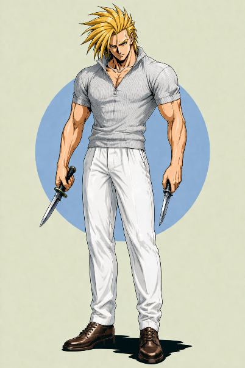
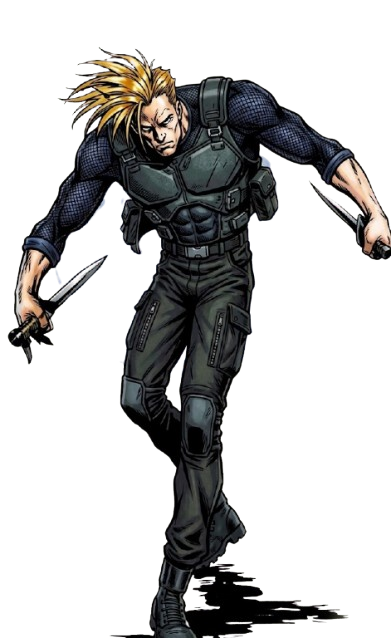
來自街機遊戲「某A」的近戰小怪。遊戲裡是無限重生的雙刀兵，沒有名字只有編號。脫離後最先覺醒，也是最早開始思考「我是誰」的人。後取名「인준」，保留了雙刀，但把制服換成了白褲與灰針織衫——因為他在某個店窗看到自己的倒影，覺得那個樣子「比較像個人」。

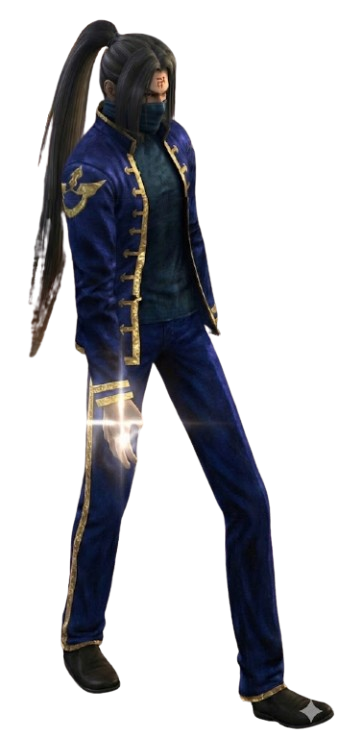
來自線上遊戲「某B」的高等級精英小怪，是七人中戰力最高的存在。遊戲裡帶有火屬性技能，脫離後技能消失，只剩下極強的身體素質和沉默的性格。改名「화성」，換上藍條紋寬版外衫，戴上口罩——因為他說「不需要讓人看清楚我的臉」。

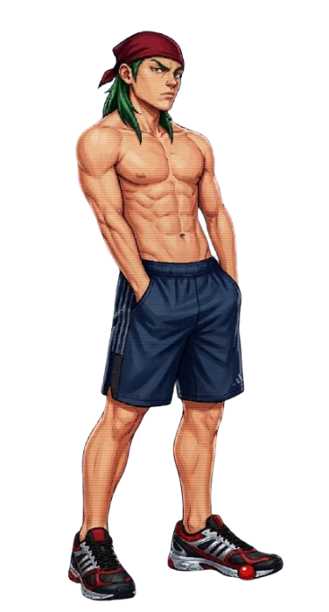
來自「某C」遊戲的普通小怪，七人中最活潑、最快接受新世界的一個。因為遊戲裡的頭巾設定，脫離後仍習慣戴著東西在頭上，換成了深紅頭巾配白背心短褲。是最早主動找其他人說話的人，某種程度上是組織的黏著劑。

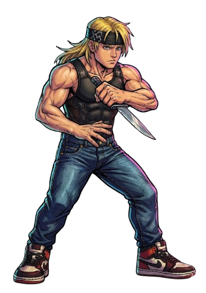
來自街機遊戲「某D」，和인준同類型的近戰小怪，但來自不同遊戲。兩人第一次見面時直接開打。後改名「강혁」，換上寬版黑褲與灰緊身上衣，習慣把匕首別在腰側。表面沉著，話少，但其實是七人中最需要「被認同」的人。
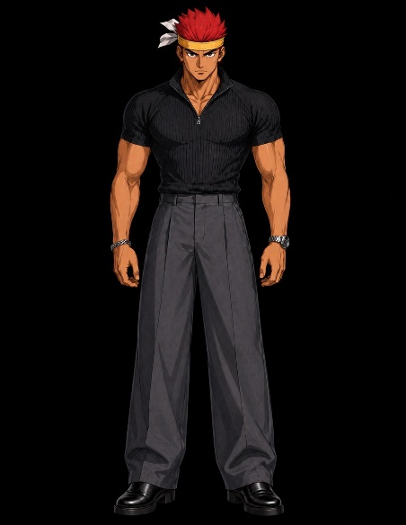
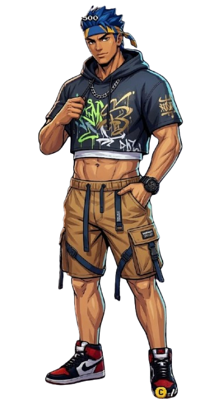
和태양同屬「某C」遊戲，但兩人在遊戲裡完全不同區域，互不相識。氣場壓迫、沉穩，是七人中體格最壯的。改名「우진」，換上黑色zip領上衣配寬版灰褲，頭上綁白鉢捲——是他自己找到布料綁的，說「感覺有點自己的東西」。
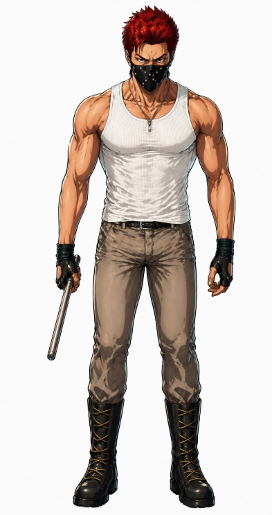
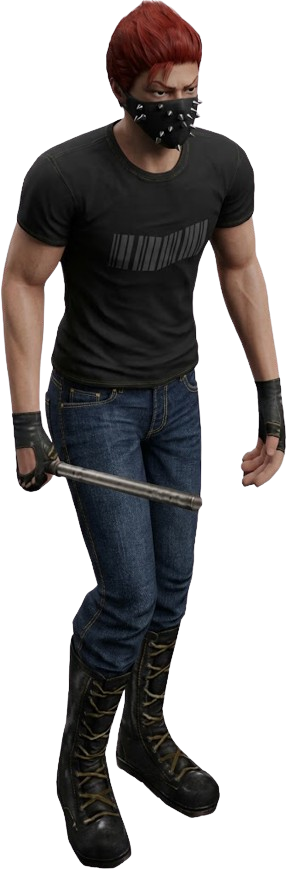
來自線上遊戲「某B」，和화성同遊戲但等級極低，幾乎是最弱的小怪類型。脫離後自卑感很重，常常用嗆聲和衝動掩蓋。改名「철민」，換上白背心配卡其褲，手上纏著護腕布，永遠拿著一根鐵管——因為那是他「唯一從遊戲帶出來的東西」。
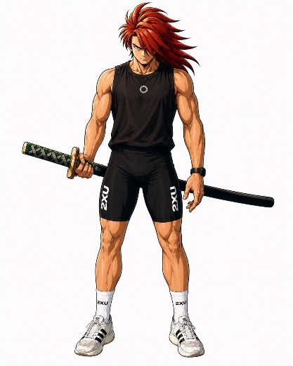
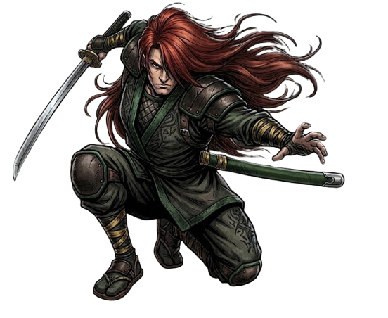
來自街機遊戲「某E」的武士型小怪，七人中唯一有武器傳承意識的人。遊戲裡是被無限擊殺的武士兵，脫離後對「死亡與重生」這件事反應最大。改名「서준」，換上黑背心配緊身短褲，仍帶著武士刀，但也開始穿運動鞋，說「腳要快，路才走得遠」。
七個原本屬於不同遊戲、不同世界的小怪，因為某個未知的異常同時脫離了程式，流落到同一個現實城市。起初互相戒備、甚至開打，但在一場多方混戰後，철민說了一句話讓所有人停下來：
「我們都是沒有名字的怪，現在才有機會自己取。打完你們要去哪？」
沒有人回答，但沒有人離開。STRAY 就這樣成立了。沒有正式儀式，沒有規章，只有一個不成文的默契——不背叛彼此，其他的自己決定。
七個人在游泳池第一次上台表演時，星探朴成俊取的名字。後正式成為他們的藝名，意指七道各自不同的浪，合在一起形成的力量。
それぞれの色が、ひとつの波になる。
每個人的顏色，成為同一道浪。
朴成俊命名。台下每一個支持他們的人，都是浪的一部分。
城市的某個角落，沒有名字的廢棄倉庫區。
夜裡三點。
인준第一個到。
他不知道為什麼選這裡，只是腳走著走著就停下來了。白褲沾了點灰，他低頭看了一眼，沒有在意。口袋裡沒有錢，沒有手機，沒有任何證明他存在的東西——因為他本來就不應該存在於這裡。
三天前，他還是遊戲裡一個沒有編號的刀兵。
無限重生，無限死亡，無限等待下一個玩家來殺他。
然後某一次死亡之後，他沒有重生在原地。
他醒來的時候，頭頂是真實的天空。
철민是第二個出現的，拖著一根鐵管，踢開了一個空鐵桶，聲音在廢棄倉庫區迴盪得很遠。
인준轉過頭，手已經碰到了刀柄。
철민看他一眼，把鐵管往肩上一架。
「放鬆。我不知道為什麼走過來，就是走過來了。」
서준出現的時候完全無聲，武士刀架在肩上，紅色長髮被夜風吹得有點亂。他掃了一眼인준和철민，在幾步外的牆邊蹲下來，閉上眼睛，像是在等什麼。
태양幾乎是跑進來的，紅頭巾歪了一邊，一進門就說：「這裡有人嗎——喔，有耶。」
화성走進來的時候，所有人都感覺到了。不是腳步聲，是那種空氣突然緊繃的感覺。他在門口站了一會，口罩遮住了表情，只有眼睛掃過每一個人。最後走到角落，背對著牆站著，沒有說話。
강혁隨後進來，直接對上화성的視線，停了兩秒。
우진是最後一個。他進來的時候白鉢捲已經有點鬆，黑色上衣沾了點什麼，走路很穩，表情什麼都看不出來。環顧一圈，找了個地方直接坐到地上。
七個人，第一次同時在同一個空間裡。沒有人說話。
最後是철민開口的。
他用鐵管敲了一下地板，聲音很響，幾個人都皺了眉。
「好，我問一件事。」他掃過所有人，「你們是不是也——從裡面出來的？」
沒有人立刻回答。然後태양舉了手。인준慢慢放開了刀柄。서준睜開眼睛。
철민點了點頭，像是確認了什麼重要的事。
「好。」他說，「那我們都一樣。」
天亮之前，鐵민的聲音在安靜裡響起來，低低的，像是自言自語：
「既然出來了，就不要回去了。」
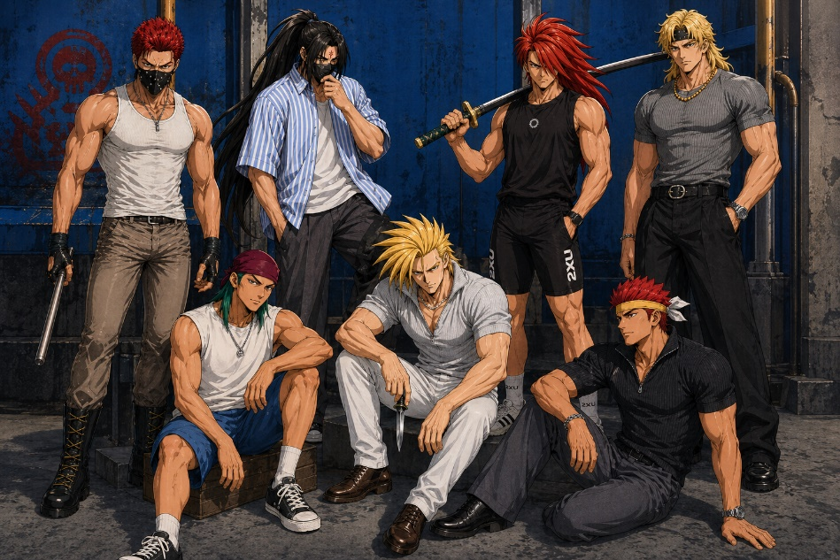
STRAY，就這樣開始了。
倉庫的第三天早上，태양餓了。
他盯著自己的肚子看了很久，表情非常困惑。
「我餓了。」他對著空氣說。
인준從角落抬起頭，「遊戲裡不用吃東西。」
「對，但現在不是遊戲裡。」
兩個人對視了三秒，同時意識到一件事——他們完全不知道怎麼取得食物。
화성是第一個走出去的，兩個小時後回來，手上提著便利商店的飯糰和罐裝飲料，說這些是用在路上撿到的硬幣換來的。
接下來幾天，七個人分頭去摸索這個世界的規則。
인준發現了圖書館，在裡面坐了整整一天，晚上回來說：「這個世界用錢運作。錢從工作來。工作從信任來。我們一樣都沒有。」
강혁去了市區觀察一整天，「表情很重要。太兇會讓人繞路。」他說這句話的時候，철민正用最兇的表情看著他。
태양去了公園，坐在長椅上看小孩玩，看老人下棋，看情侶吵架。「我覺得這個世界的人都很忙，但不知道在忙什麼。」
화성整天沒有說去哪，但帶回來一張城市地圖，上面畫了幾個記號——哪裡有監視器，哪裡有暗巷，哪裡人少，哪裡容易脫身。
第七天的晚上，인준說：「要在這裡活下去，需要身份、需要錢、需要地方住。我們一樣都沒有。」
강혁，「但我們有的東西，一般人也沒有。」
「什麼？」
「我們七個人，打架都不差。」
서준，「那要有個名字。」
「STRAY。」인준說，像是早就想好了，「脫逸者。」
태양把雜誌裡的一張照片撕下來——藍色的水，陽光，幾個人躺在躺椅上——遞給每個人看。「這個叫游泳池，我們可以去嗎？」
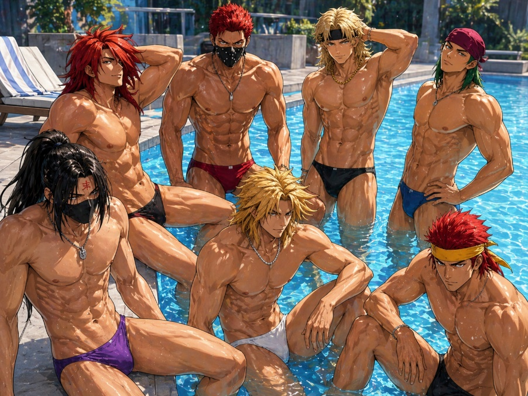
STRAY，第九天。第一次，像個活著的人一樣休息。
泳池的第二個小時。
태양正在研究怎麼讓自己漂在水上，철민假裝自己在站崗，서준閉著眼睛坐在池邊，머리카락還是濕的。
인준在躺椅上曬太陽，第一次發現陽光曬在皮膚上是暖的，不是傷害值。
就在這個時候，一個西裝男走進來了。
他大概三十幾歲，頭髮梳得很整齊，手上拿著平板，身後跟著兩個助理，走路很快，眼神掃過七個人的速度也很快。
然後他停下來了。
盯著看了大概十秒。
助理在旁邊小聲說了什麼，他擺手，繼續看。
最後他走過來，對著整個池子開口：
「你們，有沒有興趣今晚上台？」
沒有人理他。
태양從水裡抬起頭，「什麼台？」
男人指了指泳池另一頭，那裡有個戶外舞台，工作人員正在架設設備，燈光架、音響、一整套樂器組。
「今晚水上音樂節，原本的樂團臨時出狀況。我需要人。」他直接說，「你們七個，光是站在那裡就夠了，會不會樂器？」
철민從水裡走出來，「你在說什麼——」
「我是星探。」男人遞上一張名片，「做這行十五年，我看人很準。你們七個有東西，我不知道是什麼，但觀眾會買單。」
七個人交換了一個眼神。
在遊戲裡，各自的程式碼裡確實有些奇怪的資料——設計師偶爾會給小怪加一些用不到的附屬技能，理由不明，大概是為了讓角色「更完整」。
인준，程式裡有弦樂資料。
화성，有打擊技能樹。
서준，有撥弦動作模組。
우진，有鍵盤音階記憶。
강혁，有低音弦資料。
태양，有麥克風互動模組——用來跟玩家對話用的，從沒正式用過。
철민，也有麥克風，是「叫囂型」對話用的。
那些資料從沒被呼叫過。
直到現在。
인준站起來，走到舞台邊，拿起一把電吉他，看了五秒。
手指放上去。
撥了一個和弦。
聲音在空曠的泳池區迴盪，很準，很穩。
他轉過頭，「可以。」
화성已經走到鼓組旁邊，坐下來，拿起鼓棒，敲了一個節拍，然後加快，然後是一段完整的過門。
他自己也愣了一秒。
서준拿起另一把吉他，手指在弦上試了幾個位置，找到感覺之後，開始跟인준對應。
우진坐到電子琴前，兩隻手分別放上去，閉眼，然後開始彈。旋律出來的瞬間，連강혁都轉過頭看了一眼。
강혁拿起貝斯，站在那裡，彈了一個低音，再一個，嘴角動了一下，算是滿意。
태양走到麥克風前，手握住架子，對著麥克風試了一聲——
聲音出來，他自己都愣住了。
回頭看철민。
철민已經站到另一支麥克風前了，表情是那種「當然」的樣子。
「早就想試試看了。」他說。
星探站在台下，看著這七個人在五分鐘內各自找到位置、拿起樂器、開始試音，完全沒有討論，完全沒有混亂。
助理湊過來小聲說，「要不要確認一下他們有沒有表演經驗——」
「不用。」星探說。
「為什麼？」
「你看他們。」
七個人，各自在自己的位置上，沒有指揮，沒有排練，卻有一種奇怪的整體感——像是本來就該站在那裡一樣。
「這種東西，」星探說，「練不出來的。」
晚上八點，燈光亮起來。
觀眾已經把泳池區圍得水泄不通，螢光棒在人群裡此起彼落。舞台背板上臨時打出七個字——
SEVEN WAVES
星探取的，他說這是今晚的名字。
인준在上台前一秒回頭看了其他六個人。
沒有人說話，但所有人都點了頭。
第一個音出來的時候，인준的吉他。
然後화성的鼓聲進來，很重，把整個池邊的空氣都震了一下。
강혁的貝斯，低沉，扎實。
우진的琴聲，像水一樣流進去。
서준的吉他，跟인준交纏，一高一低。
태양走到麥克風前，深吸一口氣——
他不知道自己要唱什麼，但張口的瞬間，聲音就出來了，像是那些資料一直等著這一刻被呼叫。
철민在旁邊的麥克風跟上，聲音比태양粗，帶著一種衝出來的爆發力。
兩個聲音疊在一起，意外地合。
觀眾愣了大概三秒。
然後整個場子炸開了。
螢光棒全部舉起來，人群開始跟著節奏動，有人開始喊，有人開始跳，有人拿出手機——
台上七個人，第一次在這麼多人面前存在。
不是作為敵人，不是作為小怪，不是作為程式。
是作為真實存在的七個人。
서준在台上彈著吉他，突然想起在遊戲裡那些無數次的重生和死亡。
然後看了看台下那片螢光棒的海。
他不知道這算不算活著。
但他知道，這比重生要好得多。
表演結束的時候，掌聲很久沒有停。
星探站在台下，已經在打電話了。
철민走到台邊，俯視台下的人群，用平常說話的音量說：「原來這就是觀眾。」
태양滿頭大汗，笑得很大，「比游泳好玩。」
우진看著手，手指因為彈琴有點紅，他研究了一會，沒有說話，但嘴角有一點點弧度。
화성把鼓棒放回架上，站起來，低頭看了一眼台下，然後轉身走向後台，一句話沒說——但他沒有立刻離開，而是站在舞台邊繼續看著其他人。
인준拿著吉他，站在台上最後一個，看著台下慢慢散去的人群。
我們今天被很多人看見了。
他想著。
第一次，是因為我們自己，不是因為我們是什麼的複製。
STRAY，第九天夜晚。
在一個泳池的舞台上，七個遊戲裡的小怪，第一次用自己的名字存在於這個世界裡。
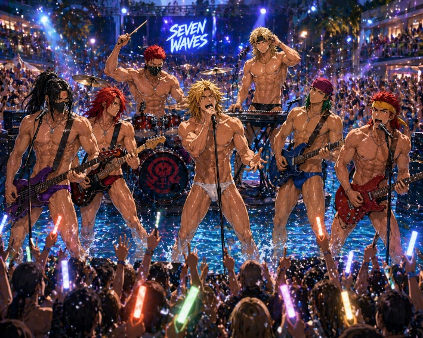
SEVEN WAVES，就這樣留下來了。
面試通知是第十一天早上來的。
一張名片夾在倉庫門縫裡，背面用手寫著一個地址和時間，還有一行字：
「來了再說。不來也沒關係。——朴成俊」
철민把名片翻來翻去看了幾次，「這個人昨天說他叫什麼？」
「朴成俊。」인준說，「星探。」
「他怎麼知道我們在這裡？」
沒有人回答。
화성把名片拿過去看了一眼，放回桌上，沒有說話。
去還是不去，沒有正式投票。
태양第一個說去，理由是「反正也沒事做」。
철민說去，理由是「看看那個人到底什麼來頭」。
서준站起來拿了外套，算是同意。
강혁沉默了一會，「如果不合適就走。」
우진，「好。」
화성沒說話，但走到門口等著了。
인준最後站起來，「走吧。」
STAR ROAD ENTERTAINMENT。
建築外觀很乾淨，玻璃門，黑色招牌，白色星形logo。
七個人站在門口，沒有人先進去。
태양仰頭看了看，「這個地方很大。」
철민，「進去就知道了。」
他第一個推門。
接待員看到七個人走進來，愣了大概兩秒，很快回神，「請問是STRAY的各位嗎？」
七個人互看一眼。
인준，「是。」
「朴代表在訓練室A等你們，這邊請。」
走廊很長，兩側是玻璃牆，裡面有人在練舞，有人在錄音，有人對著鏡子反覆做表情。
철민經過其中一間，停下來看了幾秒，「他們在幹嘛？」
「練習。」接待員說。
「練什麼？」
「成為藝人。」
철민皺了眉，繼續走。
訓練室A。
朴成俊站在房間中央，西裝換成了較輕便的款式，手上拿著一個夾板，上面有七張照片——是昨晚演出的截圖，每一張都標了名字下面的空格，還用紅筆寫了兩個字：
POTENTIAL！ CONTACT！！
他看到七個人進來，點了頭，「來了。坐。」
房間裡有幾張椅子，但沒有人坐。
朴成俊掃了一眼，沒有強求，「好，站著也行。」
他把夾板放下，直接說：「昨晚的影片，到今天早上有三百萬次觀看。」
沉默。
태양，「三百萬是多少？」
강혁在旁邊小聲說，「很多。」
朴成俊繼續說：「你們沒有背景，沒有訓練記錄，沒有任何資料——我查過了，查不到任何東西。」
他停頓了一下，看著七個人。
「但昨晚那個表演，我做這行十五年，沒見過第一次上台能有那種默契的。」
화성，「所以？」
「所以我想簽你們。」朴成俊說，「正式合約，正式出道，正式運作。」
房間裡安靜了幾秒。
黑板上寫著幾行字，是訓練室的評估項目——
Vocal. Dance. Rap. Attitude. Teamwork. No Excuses. Just Improve.
우진盯著那幾行字看了一會。
인준開口，「我們沒有身份。」
朴成俊，「我知道。」
「沒有住所，沒有戶籍，沒有任何正式資料。」
「我知道。」
「你還要簽？」
朴成俊把夾板拿起來，翻到第二頁，推過來，「這是我這邊能處理的東西清單。身份的部分，有方法，不快，但有。住所這邊可以安排。剩下的，邊走邊解決。」
他看著인준，「我唯一要知道的是，你們七個，有沒有想在這裡繼續下去的理由。」
沒有人立刻說話。
철민低著頭，手指在膝蓋上敲了幾下。
서준看著地板，不知道在想什麼。
태양看看這個看看那個，最後看向인준。
강혁手臂交叉，靠在牆上，眼神沒有看向任何人。
화성全程面無表情，但他沒有走向門口。
우진慢慢轉過頭，看向인준。
所有人的視線，最後都落在인준身上。
인준看著朴成俊，沉默了很長一段時間。
然後他想起第一天醒來看到的那片天空。
想起철민說的那句話——既然出來了，就不要回去了。
想起昨晚台下那片螢光棒。
「我們需要時間討論。」인준說。
朴成俊點頭，「合理。」他把一疊資料放到桌上，「合約在這裡，你們看完有問題再說。我出去，你們用這個房間。」
他走到門口，停了一下，沒有回頭：
「對了。昨晚那個團名——SEVEN WAVES——我幫你們保留了版權。」
門關上。
七個人，第一次在一個正式的房間裡，面對一個真實的選擇。
不是活下去的問題，不是吃飯的問題。
是——我們要成為什麼——的問題。
철민第一個開口，「我覺得可以。」
所有人都轉過頭看他，因為通常他不是第一個說可以的人。
他聳聳肩，「那個黑板上寫的東西，我們都能做。而且——」他頓了一下，「——昨晚那個感覺，我想再有一次。」
太양笑了，「我也是。」
서준，「合約內容要看清楚。」
강혁，「當然。」
우진拿起桌上的合約，開始翻，一頁一頁，很認真。
화성走到窗邊，看著訓練室外面走廊上來來去去的練習生，沉默了一會，才說：「如果簽了，就認真做。不然不要簽。」
인준看著每個人，最後點了頭。
「那我們談。」
STRAY，第十一天。
七個從遊戲裡出來的小怪，坐在一間娛樂公司的訓練室裡，翻著一份合約。
沒有人知道接下來會怎樣。
但所有人都知道——
他們不打算回頭了。
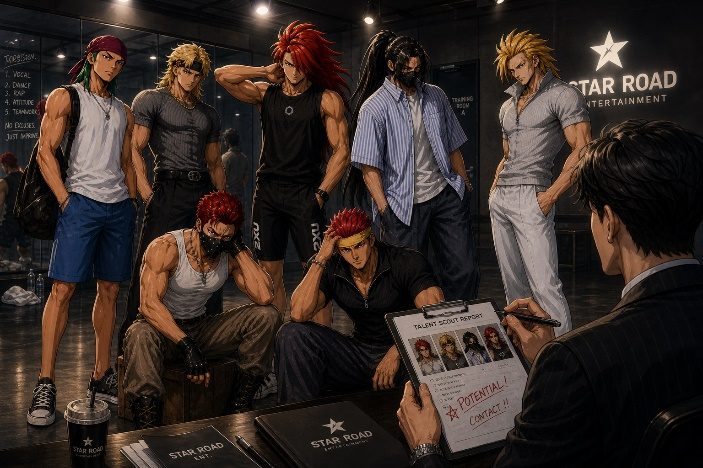
SEVEN WAVES，正式啟動。
合約簽完的隔天早上九點。
訓練室B，鏡牆，木地板，角落放著幾箱水。
黑板上寫著：
Dance Basics 1. Groove 2. Isolation 3. Timing 4. Energy 5. Attitude Practice Makes Permanent. No Pain, No Gain.
白板上是今天的計畫—— Warm Up / Stretch / Dance Practice / Feedback / Running
舞蹈老師姓金，三十出頭，看起來很普通，但眼神很銳利。
他站在房間中央，看著七個人魚貫進來，掃了一圈，點頭。
「好，我聽朴代表說了，你們沒有正式訓練背景。」
沒有人否認。
「那今天從最基本的開始。」
철민，「多基本？」
金老師看了他一眼，「基本到你覺得侮辱智商的那種。」
철민閉嘴了。
熱身開始。
原地跑步、拉伸、肩頸放鬆——對七個人來說，體能完全不是問題。遊戲裡的身體數值被完整帶了出來，耐力、反應速度、肌肉控制，全部是頂標。
金老師在旁邊看著，表情有點奇怪。
「你們……身體條件很好。」他說，語氣像是在陳述一個不太合理的事實。
태양，「謝謝。」
「不是誇你。」金老師說，「我是說，你們的身體記憶很空。像一張白紙，什麼都沒有寫過。」
인준，「這樣不好嗎？」
「好是好，」金老師說，「但也很難，因為你們沒有慣性，代表每個動作都要從零建立。」
正式開始練的時候，問題來了。
不是體力的問題，是「感覺」的問題。
金老師示範了一個基礎的groove動作——重心轉移，肩膀帶動，節奏跟著音樂走。
看起來很簡單。
서준第一個試，動作乾淨，角度精準，但——
「停。」金老師說。
서준停下來。
「你在做什麼？」
「groove。」
「你在複製我的動作。」金老師說，「你把每個角度都算得很準，但那不是跳舞，那是在重現一個檔案。」
서준沉默了一秒，「有什麼差別？」
「跳舞要有你自己在裡面。」
서준看著鏡子裡的自己，沒有說話。
강혁的問題不一樣。
他動作的力道太重，每一個拍子都像在打架，音樂一進來，他的身體就自動切換成戰鬥模式的節奏。
金老師在旁邊皺眉，「你在跟誰打架？」
강혁，「我在跳舞。」
「不像。」
「那要怎樣？」
「放鬆。」
강혁深吸一口氣，再試一次，還是太重。
他看著鏡子，第一次覺得自己的身體不聽話——不是力氣的問題，是他不知道怎麼把力氣收起來。
화성全程站在隊伍最後面，跟著做，沒有出錯，但金老師走過來看了他一圈，說：
「你口罩拿掉。」
화성，「不行。」
「跳舞要看到全臉的表情——」
「不行。」
兩個人對視了三秒。
金老師讓步了，繼續往下走。
화성繼續跳，動作完全正確，但就像서준一樣——裡面沒有東西。
最意外的是철민。
他跳的時候，沒有在想動作對不對，就是跟著音樂動，有點亂，有點粗，但——
金老師停下來，把音樂也停了。
「你，再做一次。」
철민愣了，「我？」
「對，你。」
철민聳聳肩，把剛才的動作又做了一遍，還是那個感覺——不精準，但有衝出來的勁道，像一拳打在空氣裡。
金老師點了頭，「這個，」他說，「這個才是跳舞。」
철민，「我剛才根本不知道自己在做什麼。」
「我知道。」金老師說，「所以才對。」
철민一臉困惑。
태양是第二個被點名的。
他跳起來的時候，旁邊的우진悄悄往旁邊退了一步——因為太양的動作範圍很大，手腳都往外甩，完全不管有沒有打到別人。
但他的節奏感是七個人裡最自然的，跟著音樂走，不用想，身體就到了。
金老師在旁邊看了一整段，說：「控制一下空間感，但能量對了。」
태양，「謝謝！」
「繼續練。」
태양繼續跳，臉上一直在笑。
우진跳的時候最安靜，動作很小，幾乎縮在自己的空間裡，眼睛一直往地板看。
金老師走過來，「抬頭。」
우진抬頭，看到鏡子裡的自己，又低下去。
「鏡子裡的人是你，不是敵人。」金老師說。
우진沒有說話，但第二次抬起來之後，沒有再低下去。
인준是最後一個單獨被看的。
他跳起來的時候，所有人都不自覺地往他的方向看——不是因為動作有多精準，而是那個站姿，那個重心，有一種說不清楚的存在感。
金老師在旁邊看完一整段，沉默了一會。
「你當過領導者？」他突然問。
인준，「……算是。」
「看得出來。」金老師說，「你跳的時候會自然帶著其他人的節奏，但這樣你自己的東西就不夠清楚。」
인준看著鏡子，第一次認真看自己跳舞的樣子。
在遊戲裡，他是無數個一模一樣的Blade之一。
鏡子裡的這個人，是獨一個的인준。
他還在學習怎麼區分這兩件事。
練習到下午兩點，金老師叫停。
七個人坐在地板上，喝水，有人靠著鏡牆，有人直接躺平。
철민把毛巾蓋在臉上，「這比打架累。」
태양，「我覺得還好。」
철민把毛巾掀開看了他一眼，又蓋回去。
서준坐在角落，對著鏡子，把剛才的動作慢慢再做了一遍，很小的幅度，像是在問自己一個問題。
우진手邊拿著水，沒有喝，在看地板。
강혁把手攤開放在膝蓋上，盯著自己的手，像是在想剛才金老師說的話。
화성靠著牆站著，閉著眼睛。
인준把腳伸直，靠著鏡牆，看著天花板。
金老師在離開前說了最後一句話：
「你們七個，身體條件我見過最好的，但你們都有同一個問題。」
「什麼問題？」태양問。
「你們不知道自己是誰。」他說，語氣很平靜，不是批評，是陳述，「跳舞這件事，技術可以練，節奏可以訓練，但那個——」他指了指胸口，「——是你們自己要找的，我給不了你們。」
門關上。
訓練室裡，七個人各自沉默著。
鏡子裡，七個影像，七個正在學習成為自己的人。
牆上那行字還在：
No Pain, No Gain.
서준最後對著鏡子，又做了一次groove。
這次，沒有在計算角度。
沒有在複製任何東西。
只是動了。
不確定對不對，但是他自己的。
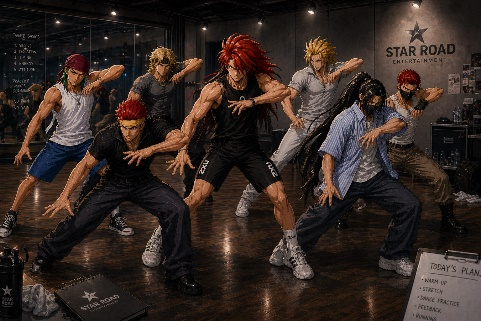
STRAY，第十二天。 七個人，第一次照著鏡子，試著認識自己。
出道表演的日期定在訓練開始後的第三週。
朴成俊說，「時間很緊，但你們不需要完美，你們需要真實。」
인준問，「有什麼差別？」
「完美是練出來給人看的，」朴成俊說，「真實是你們本來就有的東西。」
沒有人說話，但所有人都記住了這句話。
表演前兩個小時，後台。
七個人第一次穿上統一的舞台服——全黑，布料有細碎的光澤，鍊條配件，各自有一點細節差異，但站在一起，是一個整體。
철민對著鏡子看了很久。
「怪。」他說。
태양，「哪裡怪？」
「太整齊了。」철민說，「我們以前不是這樣的。」
태양看了看自己，又看了看철민，「以前我們是遊戲裡的小怪。」
철민沉默了一秒，「對。」
他轉過身，不再看鏡子。
서준把武士刀放在後台的箱子裡，鎖上。
這是第一次，他把那把刀放在夠不到的地方。
他站在那裡，手有點空，像是少了什麼。
우진走過來，站在他旁邊，沒有說話，就是站著。
서준看了他一眼，點了頭。
手還是空的，但沒那麼不對勁了。
화성在角落坐著，口罩還戴著。
造型師過來說，「口罩是造型的一部分，今天沒問題。」
화성沒有說謝謝，但肩膀鬆了一點點。
강혁靠著牆，耳機戴著，把今天要表演的曲子又聽了一遍，手指在大腿上輕輕敲著貝斯線。
他旁邊，인준站著，閉眼，沒有聽音樂，就是站著。
像上台前的靜止。
倒數五分鐘。
工作人員把七個人集合在舞台入口。
遠處傳來主持人的聲音，場館的聲音，幾萬人的聲音——那個聲音很大，大到可以感覺到空氣在震。
태양把頭探出去看了一眼，縮回來，表情很亮，「好多人。」
철민，「別看了。」
「為什麼？」
「看了會緊張。」
태양，「你緊張了？」
철민沒有回答，但他的手在衣服邊緣反覆摸了兩下。
인준看見了，沒有說破。
他往前走了一步，站在隊伍最前面，回頭看了六個人一眼。
不是在確認隊形，不是在確認狀態。
只是看著他們。
這六個從不同遊戲出來的人，站在同一個後台，穿著同樣顏色的衣服，準備走上同一個舞台。
他想起第一天在倉庫裡，沒有人說話的那個夜晚。
想起철민說的那句——我們都是沒有名字的怪，現在才有機會自己取。
「走了。」他說。
燈暗下來。
場館裡幾萬支螢光棒，紫色，白色，藍色，在黑暗裡像一片移動的星海。
主持人的聲音在空中迴盪：
「——請歡迎，SEVEN WAVES——！」
第一個音，低沉的貝斯。
강혁的。
然後鼓聲進來，화성的，重而穩，把整個場館的空氣都往下壓了一拍。
燈亮的瞬間——
七個人，站在舞台上，黑色服裝，鍊條在燈光裡碎成光點。
全場的聲音炸開來，像一道牆。
인준在前排中央，蹲低，右手往地板一撐，抬頭——
眼神對上台下幾萬個人。
他不知道自己的表情是什麼，但他知道自己沒有退縮。
音樂的第一個beat落下來，七個人同時動了。
那個默契，不是練出來的。
金老師說得對，那個東西練不出來。
那是七個人從第一天在倉庫裡就開始累積的東西——互相看過對方最狼狽的樣子，吃過철민煮的奇怪食物，在泳池裡第一次感覺到陽光，在訓練室裡摔倒又站起來。
那些東西，現在全部在舞台上。
서준跳的時候，沒有在計算角度。
他想起金老師說的——你自己在哪裡。
這次，他知道了。
철민在麥克風前，第一句歌詞出來，聲音很衝，帶著一種從地底頂上來的勁道，台下又是一聲炸裂的呼喊。
他沒有想到自己會站在這裡。
一個遊戲裡被無數玩家打倒過的低等小怪，站在幾萬個人面前。
他沒有低頭。
태양跳到一半，笑了出來。
不是表演用的笑，就是笑了，因為太好玩了，因為音樂太大聲，因為台下的螢光棒跟著他們的節奏在動——
幾萬個人，跟著他們。
우진在鍵盤位置，手指落下去，閉著眼睛，把那個旋律彈出來。
第一次在那麼多人面前，他沒有想縮進自己的空間裡。
因為旁邊有六個人。
화성打鼓的時候，口罩後面的表情沒有人看得見。
但他的鼓聲，是整場最穩的東西。
不管台上怎麼動，那個節拍一直在那裡，像一根軸心，讓其他六個人知道自己在哪裡。
강혁的貝斯線，低沉，穩，偶爾有一個突破出來的音，像是他平時那個不說話但突然開口的感覺。
他看著台下，第一次理解——
為什麼昨晚철민說那個感覺想再有一次。
最後一段，全員齊動。
七個人，七個位置，沒有哪個人多，沒有哪個人少。
燈光在他們身上碎成星點，台下的螢光棒全部舉起來，紫色的光把整個場館染成一片。
인준在舞台中央，最後一個動作——
蹲低，雙手往外推，抬頭。
燈，在這個瞬間全滅。
黑暗裡，幾萬個人的聲音，是那種不會停下來的聲音。
七個人，站在黑暗的舞台上，喘著氣，汗流著，沒有人說話。
태양第一個出聲，聲音有點啞，「……剛才，是真的嗎？」
철민，「是真的。」
「我還以為我會緊張。」
「你剛才在台上笑得很大聲。」
태양，「因為很好玩嘛。」
서준把一口氣慢慢吐出來，說了一句很少說的話：「……還想再來一次。」
강혁沒有說話，但點了頭。
우진站在原地，看著台下那片還在揮動的螢光棒。
화성把鼓棒放下，站起來，走到舞台邊，往台下看了一眼。
他沒有說話。
但這是인준第一次，在화성臉上看到一個接近「滿足」的表情——就算口罩遮著，眼睛裡有。
인준站在舞台中央，最後一個離開。
他看著那片螢光棒的海，再看看台上的六個人。
在遊戲裡，他們是複製的，是消耗品，是等待被刷新的資料。
站在這個舞台上的這一刻——
他們是真實存在的。
沒有人可以刪掉這件事。
STRAY，第三十二天。
SEVEN WAVES，正式站上舞台。
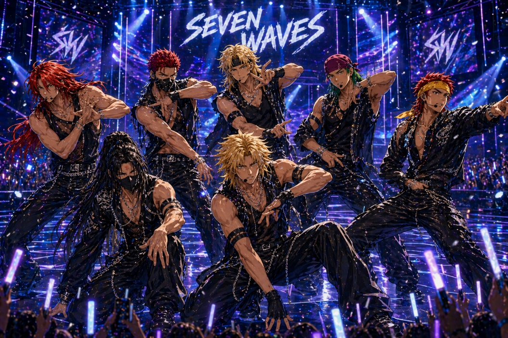
從今天起，這個世界記得他們了。
出道表演結束後的第五天。
朴成俊把七個人叫進會議室，桌上放著一疊文件和幾張參考照片。
「專輯要出了，」他說，「需要官方形象照。」
철민，「形象照是什麼？」
「就是讓大家記住你們長什麼樣子的照片。」
철민看了看自己，「他們不是已經看過我們了嗎？」
「舞台上是一回事，」朴成俊說，「形象照是另一回事。舞台上你們是SEVEN WAVES，形象照是讓人看見你們每一個人。」
攝影棚在公司頂樓。
七個人進去的時候，燈光、背景、攝影師助理全部就位，中間站著一個頭髮花白的攝影師，姓崔，看起來六十幾歲，眼神很銳利。
他掃過七個人，一個一個看，不說話，就是看。
看完，點了頭。
「好料。」他只說了這兩個字，然後轉身去調燈光。
태양湊到인준旁邊小聲說，「他說好料是什麼意思？」
인준，「大概是說我們適合拍照。」
태양，「我們適合嗎？」
인준看了看周圍的燈光和設備，「不知道，等一下就知道了。」
造型師先來。
七套黑色舞台服——布料有光澤，鍊條配件，領口敞開，每個人的細節略有不同，但站在一起是一個整體。
철민穿上之後對著鏡子看，比上次多看了幾秒。
上次說怪。
這次沒有說話。
강혁把領子稍微整了一下，手指停在鍊條上，沉默地看著鏡子裡的自己。
서준穿好之後，站在那裡，很自然地往腰側摸了一下——那裡平時放武士刀的地方。
空的。
他把手放下來，往鏡子裡看了一眼，繼續往前走。
崔攝影師先拍全員。
七個人站上背景板，助理喊位置，燈光打下來。
「自然一點，」崔攝影師說，「不用擺姿勢，就站著。」
七個人站著。
咔嚓。
崔攝影師看了看螢幕，皺眉，「太硬了，你們在等什麼？」
태양，「我們在等你說可以動。」
崔攝影師抬起頭，看了태양一眼，嘴角動了一下，「現在可以動了，想怎樣就怎樣，忘記我在這裡。」
「忘記我在這裡」這句話，對七個人來說其實不難。
在遊戲裡，他們每天被幾百幾千個玩家的視角盯著，存在本身就是被觀看的。
但那時候他們沒有意識，沒有感覺，只有程式。
現在不一樣了。
被看見，是一件有重量的事。
철민第一個動。
他走到其他人中間，把手搭上旁邊서준的肩膀，對著鏡頭，表情是那種「怎樣」的感覺——不是在笑，不是在擺pose，就是철민本來的樣子。
崔攝影師，咔嚓。
서준沒有把철민的手移開，反而往旁邊讓了一點，給他更穩的支撐點，繼續看鏡頭。
咔嚓。
태양從旁邊鑽進來，夾在두 사람之間，笑得很大，手指比了個指向鏡頭的手勢。
咔嚓咔嚓咔嚓。
崔攝影師嘴角又動了一下。
인준站在中間位置，燈光打下來，崔攝影師叫他往前一步。
他往前，低頭，然後抬起來。
咔嚓。
崔攝影師看著螢幕，沉默了一會，說，「你知道自己在想什麼嗎？」
인준，「什麼意思？」
「拍照的時候，眼睛裡要有東西，」崔攝影師說，「你剛才那一張，裡面有很多東西，但你自己知道是什麼嗎？」
인준沉默了一秒，「在想我們從哪裡來的。」
崔攝影師點頭，「這樣就對了，繼續想。」
咔嚓咔嚓。
화성的部分，崔攝影師沒有叫他拿掉口罩。
他讓화성站在最側邊，燈光打側面，只露出眼睛和額頭以上的部分。
就這個角度，崔攝影師拍了很多張。
助理湊過來看螢幕，小聲說，「這個角度很特別。」
崔攝影師，「神秘感是他自己的東西，不用強迫。」
우진單獨拍的時候，一開始不知道把眼神放哪裡。
崔攝影師讓他看鏡頭，他看了，但眼神飄。
「在想什麼？」崔攝影師問。
우진，「在想……我現在是真實的嗎？」
攝影棚裡安靜了一秒。
崔攝影師沒有回答那個問題，只是說，「帶著這個問題，看鏡頭。」
우진看過去。
咔嚓。
崔攝影師看了螢幕，沉默，然後說了一個字，「好。」
강혁單獨拍的時候，崔攝影師研究了他很久，最後說，「把手放開。」
강혁，「我手沒有握著什麼。」
「你手在用力，」崔攝影師說，「放開。」
강혁低頭看了看自己的手，意識到手指是蜷著的，像是隨時準備抓住什麼。
他慢慢把手指鬆開，攤平，放在腿側。
咔嚓。
崔攝影師，「這才是你。」
강혁沒有說話，但他記住了那個感覺——手放開的感覺。
서준最後一個單獨拍。
崔攝影師讓他拿著武士刀，問，「這是你的東西？」
서준，「是。」
「那就帶著它，」崔攝影師說，「不用做什麼，就帶著它。」
서준把刀橫放在肩上，站在燈光下。
崔攝影師看著觀景窗，沉默了三秒，然後開始按快門，連拍，沒有停。
最後他放下相機，說，「你知道你現在是什麼表情嗎？」
서준，「不知道。」
崔攝影師把螢幕轉過來給他看。
서준看著那張照片裡的自己——
不是遊戲裡的武士小怪，不是正在學習成為人的那個困惑的자신。
是一個知道自己是誰的人。
他看了很久，沒有說話。
全員最後一輪，崔攝影師把七個人重新排好。
「這次，」他說，「不要想鏡頭，不要想姿勢，就看著彼此。」
七個人互相看。
철민看著인준，인준看著화성，화성的眼神掃過整個隊伍，태양在笑，우진在認真看，강혁的手這次是放鬆的，서준肩上扛著刀，嘴角有一點點弧度。
崔攝影師按下快門。
咔嚓。
他看著螢幕，把那張照片放大，研究了很久。
助理問，「怎麼樣？」
崔攝影師把相機放下，第一次在整個拍攝過程裡，真的笑了一下。
「這七個人，」他說，「不是在表演在一起，是真的在一起。」
照片出來的那天，朴成俊把專輯封面設計稿發給七個人看。
黑色背景，七個人，燈光，鍊條。
背景板上寫著：
SEVEN WAVES 1ST ALBUM — BEYOND THE LIMIT RELEASE
철민盯著那張照片看了一會，說，「這是我們？」
태양，「是啊。」
철민，「……還行。」
인준看著那七個站在舞台燈光下的人，想起第一天在倉庫裡，七個人第一次同時在同一個空間裡的樣子。
那時候，沒有名字，沒有方向，沒有任何東西。
現在——
有一張照片，證明他們存在過。
STRAY，第三十七天。
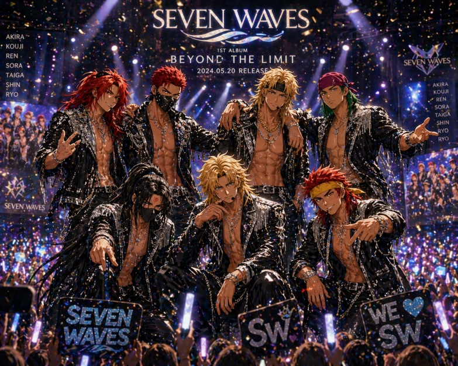
SEVEN WAVES，留下了第一張真正屬於自己的影像。
STAR ROAD LIVE TOUR — UNSTOPPABLE SOLD OUT. THANK YOU. WE MADE HISTORY.
巡迴演唱會最後一場，剛結束。
後台入口，採訪區。
SRN、K-POP NOW、LIVE TODAY、THE STAR、MUSIC WAVE、ENTV——六家媒體的麥克風同時舉過來，燈光、攝影機、記者，把七個人圍在中間。
七個人還沒換衣服，汗還沒乾，但全部站定了。
서준把麥克風接過來，인준站在中心，其他人自然散開在兩側——不是排練過的隊形，就是他們習慣的位置。
第一個問題，LIVE TODAY的記者，女生，聲音很快：
「SEVEN WAVES，這次巡迴全場售罄，想對粉絲說什麼？」
서준把麥克風遞給인준。
인준拿著，沉默了一秒，不是在想詞，是在想真正要說的話。
「謝謝他們來，」他說，聲音有點啞，是唱完一整場之後的那種，「我們站在台上，他們在台下，那個距離很近，但也很遠。謝謝他們每一次把那個距離縮短。」
麥克風往旁邊傳。
철민接過去，SRN的記者已經把麥克風伸過來了。
「철민씨，你在這次巡迴裡有什麼印象最深的瞬間？」
철민想了一下，說，「有一場，台下有個人舉著牌子，上面寫——」他停頓了一下，像是在確認自己記得正確，「——'你們讓我覺得活著很好'。」
採訪區安靜了一瞬。
「我看到那個牌子，」철민繼續說，語氣還是平的，但比平常慢了一點，「我不知道那個人經歷了什麼，但我知道我看到那個字的時候，覺得我們做的事情是對的。」
他把麥克風遞給旁邊的서준，沒有再說了。
서준接過MUSIC WAVE的麥克風。
「서준씨，你在舞台上總是帶著那把刀，這對你來說有什麼特別的意義嗎？」
서준看了一下手裡的刀，「它提醒我我是誰。」
記者，「可以說得更詳細嗎？」
서준想了一下，「有時候站在台上，燈光太亮，人太多，容易忘記自己站在那裡的理由。刀在，就記得了。」
麥克風傳出去。
태양幾乎是搶過K-POP NOW麥克風的。
「我來我來——」
記者笑了，「태양씨果然很有活力，這次巡迴最辛苦的是什麼？」
태양認真想了三秒，「鞋子。」
全場愣了一秒。
태양繼續說，「我不知道人類的腳跑那麼多場會這樣，每次演完我的腳都在抗議。」
笑聲從採訪區蔓延出去。
화성在旁邊，低頭，肩膀抖了一下——沒有人看到他在笑，但인준看到了。
태양，「但是認真說，最辛苦的是結束。每一場結束的時候，我都不想下台。」
他說這句話的時候，聲音比剛才小了一點，「台下那些人，螢光棒，那個感覺——我每次都想再多一首，再多一首。」
화성被THE STAR的記者點到。
「화성씨，你一直戴著口罩，粉絲很想知道，這是個人習慣還是有特別的原因？」
화성拿著麥克風，沉默了幾秒。
採訪區的人都等著。
他最後說，「這是我的樣子。」
就這一句。
記者還想追問，화성已經把麥克風往旁邊遞了。
旁邊的강혁接過去，對那個記者輕輕搖了搖頭——意思是，到此為止。
강혁接了ENTV的麥克風。
「강혁씨，SEVEN WAVES從出道到現在成長非常快，你覺得你們成功的原因是什麼？」
강혁想了一下，「我們沒有什麼可以輸的。」
記者，「這句話怎麼理解？」
「有些人站上舞台是因為夢想，」강혁說，「我們站上舞台是因為這裡是我們唯一有的地方。當你只有一個地方，你不會輕易放棄它。」
採訪區又安靜了一秒。
강혁把麥克風遞給우진。
우진是七個人裡最不常開口的，但今天他接過麥克風，沒有馬上遞出去。
SRN的記者抓住機會，「우진씨，粉絲都說你在台上的眼神很特別，像是在看很遠的地方，你在看什麼？」
우진低頭看了看麥克風，然後抬起頭。
「我在看台下每一個人，」他說，聲音很平靜，「我想確認——他們是真實的。」
記者，「這是什麼意思？」
우진，「就是字面上的意思。每次站在台上，我會看台下，確認那些人是真的在那裡，不是背景，不是程式。」
他停頓了一下，「每次確認完，我就知道我也是真的。」
採訪區沒有人說話。
有幾個記者在記筆記，有幾個只是看著他。
우진把麥克風遞回給인준。
最後一個問題，是一個年輕的記者，有點緊張，聲音稍微抖了一下：
「SEVEN WAVES，接下來有什麼計畫？」
인준拿著麥克風，看了看左右兩側的六個人。
철민聳了聳肩，表情是「你說」。
태양比了個加油的手勢。
서준點頭。
화성沒有動，但眼神是「繼續」。
강혁，手放鬆地垂著。
우진，靜靜看著他。
인준轉回來，對著所有的麥克風和鏡頭：
「繼續，」他說，「不停。」
後台的牆上，那張手寫的感謝牌還掛著：
Thank you, Starlight. You are our strength. Our reason. Our everything. We'll keep going. Together. — STAR ROAD
철민路過的時候停下來看了一眼。
「Starlight，」他唸了一下，「這是粉絲的名字？」
태양，「對，朴代表說的。」
철민，「……還不錯。」
他繼續走，沒有再說什麼。
但他記住了那個名字。
七個人走回休息室，門關上，外面採訪區的聲音和燈光都隔絕在外。
房間裡安靜了幾秒。
然後태양一屁股坐到沙發上，大字型躺平，「累死了。」
철민坐在地板上，靠著牆，「比跳舞還累。」
서준把刀放到桌上，坐下來，難得往椅背上一靠。
우진拿了瓶水，坐在角落，慢慢喝。
화성站在窗邊，往外看，城市的燈光在遠處。
강혁把外套脫下來，搭在椅子上，伸了個懶腰。
인준站在房間中間，看著六個人。
每一個都比第一天在倉庫裡的那個樣子，多了一些東西。
說不清楚是什麼，但確實在那裡。
태양從沙發上抬起頭，「인준아，你在想什麼？」
인준，「在想我們走了多遠。」
태양，「很遠嗎？」
인준想了一下，「從倉庫到這裡，很遠。」
태양重新躺回去，「那還要走更遠。」
「當然，」철민從地板上說，眼睛閉著，「說好不回頭的。」
城市外頭，某個地方，螢幕上播著今晚的採訪直播。
一個人坐在黑暗裡，看著螢幕上七張臉。
他的手指停在電話上，那通電話已經準備好要打出去了。
他認識這七個人。
比任何人都更清楚他們從哪裡來。
而他要做的事——
不是祝賀他們。
STRAY，第一百二十天。
SEVEN WAVES，巡迴結束。
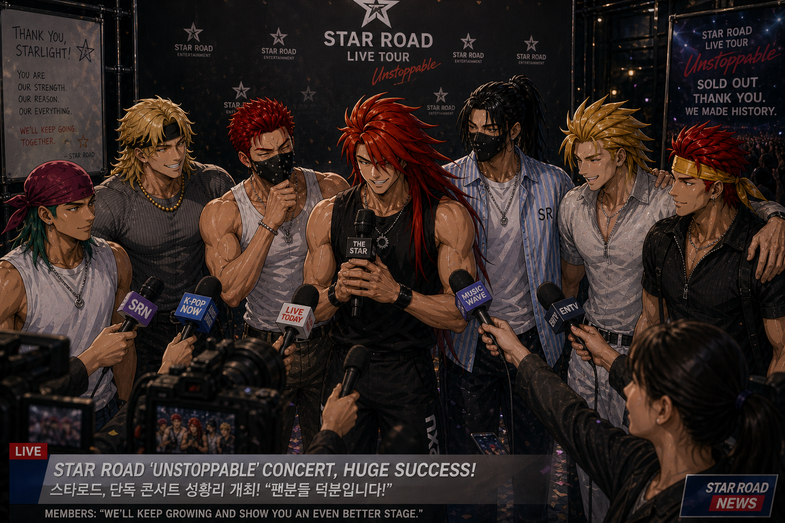
但另一件事，正要開始。
演唱會結束後的深夜。
七個人沒有搭車，就這樣走回去。
朴成俊說要叫車，인준說不用，腳想動一下。其他人沒有意見，就跟著走了。
城市的夜裡，地上還有演唱會散場後殘留的紙屑和螢光棒的碎片，被雨水沖得到處都是。剛下過雨，空氣是那種濕的、涼的感覺，路燈把積水染成橘色。
七個人並排走，把整條巷子佔了大半。
沒有人說話，但不是那種不舒服的安靜，是走了很久之後自然的安靜。
철민第一個開口。
「你們有沒有想過，」他說，聲音比平常低一點，是那種不想讓太多人聽到的音量，「如果我們一直在遊戲裡，會怎樣？」
沒有人立刻回答。
태양想了一下，「一直被打死然後重生？」
「對。」철민說，「就這樣。一直重複，永遠重複，沒有盡頭。」
서준，「那不叫活著。」
철민，「對，那不叫活著。」
他踢開地上一個紙杯，繼續走，「所以我說，出來是對的。」
강혁走在철민旁邊，手插在口袋裡，「你以前從來不說這種話。」
철민，「什麼話？」
「那種聽起來像在想事情的話。」
철민瞥了他一眼，「我一直都在想事情。」
「以前不說出來。」
철민沉默了幾秒，「以前沒有人可以說。」
강혁沒有接話，但肩膀往철민那側靠近了一點，兩個人繼續走。
태양忽然停下來，蹲下去，從地上撿起一根還亮著的螢光棒，站起來揮了揮。
「還亮耶。」
우진在旁邊，「小心別戳到人。」
태양把螢光棒舉高，照了照前面的路，「我覺得今天是目前為止最好的一天。」
서준，「比游泳池那天？」
태양認真想了一下，「不一樣，游泳池那天是第一次放鬆。今天是——」他想了一下，「——第一次覺得，我們真的在這裡了。不是在嘗試，是真的在了。」
화성走在隊伍稍微靠後的位置，步伐不快不慢。
인준放慢腳步，跟他並排。
兩個人走了一段，沒有說話。
最後인준開口，「你今天說的那句話。」
화성，「哪句？」
「'這是我的樣子'。」인준說，「記者問口罩的時候。」
화성沒有立刻回答。
走了幾步之後，「在遊戲裡，我沒有臉，」他說，很平靜，「就是一個會噴火的忍者，沒有臉，沒有名字。出來之後，我不知道我的臉應該是什麼樣子。」
인준聽著。
화성繼續，「所以口罩是我的樣子。不是遊戲給的，是我自己選的。」
인준，「這樣就夠了。」
화성沒有說謝謝，但走路的速度跟인준對齊了。
우진走在서준旁邊，手裡拿著水瓶，沒喝，就是拿著。
서준背著武士刀，一隻手扶著刀柄，習慣性的動作。
우진，「你有沒有想過，刀以外的東西？」
서준，「什麼意思？」
「就是，」우진想了一下怎麼說，「你一直帶著那把刀，像是怕放開了什麼就不見了。但你有沒有想過，就算放開了，你還是你？」
서준走了幾步，沒有立刻回答。
然後他說，「我想過。但還不確定。」
우진，「還不確定也沒關係。」
서준看了他一眼，「你什麼時候開始會說這種話？」
우진，「今天採訪完之後。」他頓了一下，「我說我看台下是為了確認他們是真實的。說完之後我想——如果他們是真實的，那我也是。不需要一直確認。」
서준沉默了一會，「……你想通了？」
우진，「差不多。」
서준，「教我。」
우진難得笑了一下，很小，「慢慢來。」
前面태양把螢光棒當指揮棒在揮，철민叫他收起來，태양不理，強혁伸手把螢光棒搶走，태양跳起來要搶回去——
인준走在旁邊，看著這三個人，沒有去管。
他想起第一天在倉庫裡，철민踢翻鐵桶的聲音，인준手摸到刀柄的反應。
那時候七個人，每個都是繃著的。
現在——
강혁把螢光棒舉高，태양跳不到，철민在旁邊，嘴角壓著一個快要出來的弧度。
인준把手插進口袋，繼續走。
走到一半，서준突然開口說，「我們現在算什麼？」
태양，「什麼算什麼？」
서준，「身份。我們現在對這個世界來說是什麼？」
強혁，「藝人。」
서준，「那之前呢？」
철민，「流浪漢。」
태양，「之前之前呢？遊戲裡。」
沉默了幾秒。
우진，「資料。」
又是一段安靜。
地上的積水被踩出聲音，雨還沒完全停，偶爾幾滴打在肩膀上。
인준，「資料，流浪漢，藝人。」他把這三個詞唸了一遍，「我比較喜歡現在這個。」
태양，「我也是。」
철민，「廢話。」
강혁，「同意。」
서준，「……嗯。」
화성沒有說話，但腳步沒有停。
우진，「我也是。」
走到公司宿舍樓下的時候，태양把那根螢光棒插在門口的花盆裡。
강혁，「你幹嘛？」
태양，「留個紀念。今天是個好日子。」
철민看了那根螢光棒一眼，「明天就沒電了。」
태양，「沒電也是紀念。」
철민沒有再說什麼。
七個人站在樓下，看著那根還發著微弱紫光的螢光棒，沒有人先進去。
就這樣站了一會。
인준最後說，「進去了。」
태양，「欸，인준아。」
인준回頭，「什麼？」
태양想了一下，最後只說，「今天辛苦了。」
인준看了他一眼，點頭，「你也是。」
然後看向其他五個人，「都是。」
七個人走進去，電梯門關上。
門口的螢光棒，還亮著。
雨，慢慢停了。
STRAY，第一百二十天深夜。
七個人，走完了同一條路。
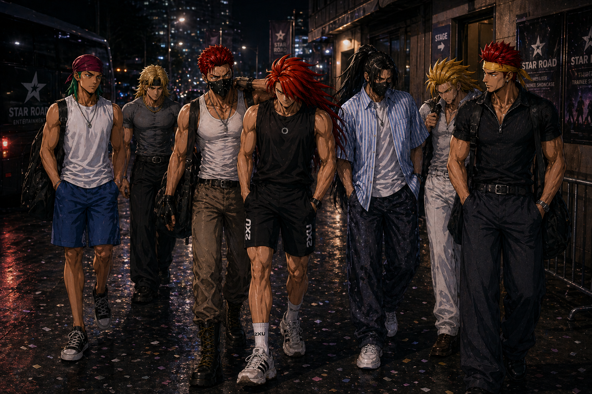
沒有任何人，走在最後面。
宿舍的公共房間，深夜。
牆上的霓虹燈還亮著——NO EXCUSES. JUST IMPROVE.——那是철민某天不知道從哪裡搬回來的，說看了有感覺，就掛上去了。沒有人反對。
旁邊那面牆上貼著一行手寫字： Discipline. Loyalty. Respect. Strength. We don't follow. We lead.
那是인준寫的，第一個月的時候。當時서준問他為什麼寫，他說，「提醒自己用的。」서준看了很久，沒有說話，之後每次路過都會看一眼。
桌上是今晚的戰場——外賣盒、炸雞、餅乾、幾罐飲料、一瓶水、零食包裝紙，散落得很自然，像是沒有人在意整不整齊。
因為真的沒有人在意。
서준坐在沙發中間，雙手插進頭髮裡，往前靠著，看著桌上說不清楚在看什麼。
武士刀放在沙發旁邊，今晚沒有靠在肩上，就是放著。
철민坐在他左邊，身體癱在沙發裡，一隻手架在서준肩膀上，另一隻手拿著飲料罐，沒有喝，就是拿著。口罩拉到下巴，露出下半張臉，是在這個房間裡他才會這樣放鬆的樣子。
他看著天花板，「我在想一件事。」
서준，「什麼事？」
「我們在遊戲裡，有沒有感覺？」
서준，「什麼意思？」
「就是，」철민想了一下怎麼說，「現在我吃東西，我知道好不好吃。我累了，我知道想休息。但在遊戲裡，那些動作是有的，攻擊、移動、被打——但有沒有感覺？」
서준沉默了一會，「我不記得了。」
철민，「我也不記得。」
「不記得就算了。」서준說，「現在記得就好。」
철민喝了一口飲料，「……對。」
화성坐在철민旁邊，藍條紋外衫今天沒扣，裡面白T，整個人難得沒那麼緊繃。手放在膝蓋上，偶爾伸手拿桌上的餅乾，放進嘴裡，慢慢嚼。
口罩還戴著。
吃東西的時候，他會把口罩稍微拉開一點，吃完再拉回去——這是他自己的方式，沒有人說什麼。
태양有一次問過，「你吃東西不會很麻煩嗎？」
화성，「習慣了。」
태양，「要我幫你——」
화성，「不用。」
태양聳肩，繼續吃自己的。
강혁站在沙發後面，靠著牆，手裡拿著一瓶水，一口一口慢慢喝。
他不太喝含糖的東西，試過幾次，覺得太甜，之後就一直喝水。
태양說他無聊。
강혁說喝水很好，不解釋。
今晚他就這樣站著，看著桌上的幾個人，偶爾說幾句，更多時候是聽。他喜歡聽，不是因為沒有想法，是因為聽的時候能看清楚很多東西。
比如現在——
철민在說話，서준在聽，화성在吃餅乾，태양在研究怎麼把兩個外賣盒疊起來，우진在看手機，우진旁邊的인준在看他們所有人。
강혁喝了一口水，這個房間裡的七個人，在遊戲裡的時候，是不可能同時出現在同一個畫面裡的。
現在每天都在同一個房間裡。
他覺得，這件事本身就很值得了。
우진坐在地板上，背靠著沙發，手機拿著，但沒有在滑，就是拿著，眼神放空。
인준從沙發上看了他一眼，「在想什麼？」
우진，「在想今天採訪的時候，那個記者問我眼神的事。」
인준，「然後？」
「我說我在看台下確認他們是真實的，」우진說，「但說完之後我想，他們看我們，是不是也在確認同樣的事？」
인준，「什麼事？」
「確認我們是真的，」우진說，「不是舞台上的形象，是真的存在的人。」
인준想了一下，「有可能。」
우진，「如果是這樣，那我們互相確認。」
인준，「嗯。」
우진把手機放到桌上，拿了一罐飲料，拉開，喝了一口，做了個表情。
인준，「好喝嗎？」
우진，「太甜。」
인준，「那為什麼拿那個？」
우진，「태양說好喝。」
兩個人同時看向태양。
태양正在研究外賣盒疊高的極限，完全沒有注意到有人在看他。
태양把第三個盒子疊上去，整個塔歪了，他迅速扶住，成功。
「我覺得還可以再疊一個，」他說，四周張望，「誰還有空盒子？」
沒有人理他。
「鐵민아，你那個吃完了嗎？」
철민，「沒有。」
「但你都沒在吃——」
「我在休息。」
태양，「你在休息，盒子可以借我。」
철민，「不行，我還要吃。」
태양看了一眼那個幾乎沒動的盒子，「你說謊。」
철민沉默了兩秒，把盒子往태양方向推了一下，「拿去。」
태양立刻把盒子疊上去，高塔成功，他舉手，「！」
강혁從後面伸手，一根手指把那個塔推倒了。
盒子散落在桌上。
태양，「강혁！」
강혁，「危險。」
태양，「哪裡危險——」
철민，「確實有點危險。」
태양，「你剛才還在休息！」
철민，「我可以邊休息邊說話。」
服준在旁邊看著這三個人，低頭，把嘴角壓住。
화성，「你在笑。」
서준，「沒有。」
화성，「你嘴角動了。」
서준，「……那不叫笑。」
화성拿了一片餅乾，遞給서준，沒有說話。
서준接過去，吃了，「謝謝。」
화성，「嗯。」
인준坐在沙發角落，把腳伸到桌上，看著房間裡的六個人。
牆上那行字——We don't follow. We lead.
他記得寫那行字的那天，是剛簽完合約的第二天，他一個人在房間裡，想了很久，最後找了張紙，寫下來，貼到牆上。
那時候不確定那句話是對的。
現在——
태양在跟강혁爭，철민在旁邊補刀，화성在吃餅乾順便觀察所有人，서준難得放鬆地靠著沙發，우진在喝那個他覺得太甜的飲料。
인준，「태양아。」
태양，「什麼？」
인준，「今天辛苦了。」
태양愣了一秒，然後笑出來，「你昨天也說了這句。」
인준，「值得說兩次。」
태양，「那明天也說。」
인준，「看情況。」
태양，「這樣不行，要說——」
철민，「好了，吵死了，吃東西。」
태양把一個餅乾丟進철민碗裡，철민看了一眼，沒有丟回去，吃掉了。
霓虹燈還亮著。
NO EXCUSES. JUST IMPROVE.
桌上的外賣盒慢慢見底，飲料罐一個一個空掉，零食包裝紙越來越多。
沒有人說要去睡。
就這樣待著，說話，不說話，吃東西，放空。
七個從遊戲裡出來的人，第一次知道——
原來什麼都不做，也是一種很重要的事。
最後睡著的是태양，直接在沙發上，嘴裡還有一口餅乾。
철민把他旁邊的空罐清走，丟進垃圾桶，回來，繼續坐著。
강혁把水瓶放到桌上，也靠著牆，閉上眼睛。
화성不知道什麼時候已經不見了，回自己房間了，悄無聲息，跟他出現的方式一樣。
서준把武士刀拿起來，放到腿上，手搭著，閉眼。
우진把手機拿回來，看了一眼，放下，也閉上眼睛。
인준最後一個，把腳從桌上收回來，往沙發裡靠深一點。
房間裡的燈只剩霓虹燈，藍色的光，安靜地打在六個人臉上。
NO EXCUSES. JUST IMPROVE.
인준看著那行字，想——
今天，我們什麼都沒有做。
但這也是我們選的。
在遊戲裡，我們沒有辦法選。
他閉上眼睛。
STRAY，第一百二十一天。
深夜，宿舍公共房間。
七個人，第一次什麼都不做。
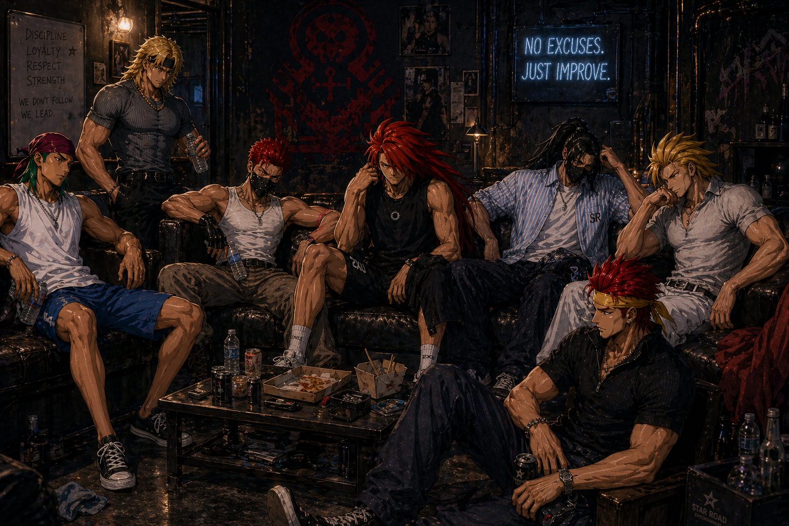
這，也是自由的一種。
那個桶子是서준搬進來的。
黑色的，鐵製，桶身上貼著一張手寫的紙：
No Alcohol. No Smoking. New Start. New Stage.
下面是STAR ROAD的星形logo，也是手寫的，歪了一點。
桶子放在桌子中間，沒有人說話。
起因是三天前。
朴成俊把七個人叫進去，放了一份報告在桌上。
「你們的體能數據，」他說，「訓練以來最差的一次。」
철민，「我們昨天才結束巡迴——」
「我知道，」朴成俊說，「但這不只是疲勞的問題。」
他翻到第二頁，「抽菸的，肺活量往下走。喝酒的，恢復速度比正常慢了兩成。你們的身體條件本來是頂標，我不想看著它往下掉。」
沒有人說話。
朴成俊把報告收起來，「我不是在命令你們，」他說，「這是你們自己的事，你們自己決定。」
然後他出去了，門帶上。
那天晚上，七個人在公共房間待到很晚。
서준第一個說，「我覺得朴代表說得對。」
강혁，「我也是。」
태양，「但是……」他想了一下，「但是戒掉很難吧？」
철민，「難什麼，說不抽就不抽。」
우진看了철민一眼，「你昨天抽了三根。」
철민，「那是昨天。」
화성沒有說話，但他把口袋裡的菸拿出來，放到桌上，看著它。
인준，「我們一起。」
所有人看向他。
인준，「比較容易。」
沒有人反駁。
서준去找了那個桶子回來。
然後把手寫的規則貼上去——不是命令，是他們自己說的話，寫下來，放在那裡。
No Alcohol. No Smoking. New Start. New Stage.
서준把桶子放到桌上，「誰先。」
不是問句。
서준自己先。
從運動包裡掏出一瓶沒開過的酒，放進桶子，聲音很響。
然後又掏出半包菸，也放進去。
他拍了拍手，坐回去，沒有多說。
인준把口袋裡的菸拿出來，一整包，新的，沒拆過，放進桶子。
然後又去房間，拿了一瓶酒回來，也放進去。
태양，「你有在喝酒？」
인준，「偶爾。」
태양，「你從來沒說過。」
인준，「你沒問。」
강혁站起來，去廚房，拿了一罐啤酒回來。
他拿著那罐站了幾秒，然後放進桶子。
沒有說話，坐回去，繼續喝他的水。
우진，「강혁아，就那一罐？」
강혁，「我喝得少。」
우진，「嗯。」
우진自己從桌上拿了一個打火機，放進去，「我不抽菸，但這個本來準備要嘗試的，算了。」
태양，「你要嘗試？！」
우진，「現在不嘗試了。」
태양，「好。」
화성坐著，看著桌上那包菸，很久沒有動。
철민在旁邊，沒有催，就是等。
화성最後把菸拿起來，放進桶子，又從口袋裡掏出打火機，也放進去。
然後他靠回沙發，閉上眼睛。
철민，「你抽多久了？」
화성，「從出來的第一天。」
철민，「那時候在哪裡拿到的？」
화성，「在路上撿到一根，覺得可以試試。」
철민，「好不好抽？」
화성，「還行。」
철민，「那戒掉可惜嗎？」
화성，「……有一點。」
철민點了頭，把自己的菸——整整兩包——放進桶子裡，用力按了一下，像是要確認它們進去了。
「我抽得比你多，」他說，「所以我放棄得更多，扯平了。」
화성沒有說謝謝，但眼神動了一下。
최후는태양。
他看著那個桶子，又看看其他人，「我其實沒有很常喝，也沒有抽菸……」
강혁，「那你在猶豫什麼？」
태양，「我只是覺得，如果我什麼都放不進去，感覺沒有參與到。」
철민，「那你去買一包菸然後放進來。」
태양，「買了再戒？那不是浪費錢——」
서준從旁邊把一個空的飲料罐遞給태양，「放這個。」
태양看著那個空罐，「為什麼？」
서준，「你戒掉以後喝太多飲料，對身體也不好，所以這個也戒。」
태양，「……서준아，你最近說話越來越厲害。」
서준，「謝謝。」
태양嘆了口氣，把空罐放進桶子，「好，我加入了。」
桶子裡——菸、酒、打火機、一個空罐、一個從來沒拆的菸盒。
인준看著那個桶子，「明天，這個搬到門口。」
철민，「為什麼門口？」
인준，「每天出門看到，記得。」
沒有人反對。
강혁，「那從今天算第一天。」
태양，「要不要慶祝一下？」
철민，「慶祝什麼？」
태양，「戒菸戒酒第一天啊。」
철민，「用什麼慶祝，喝酒嗎？」
태양，「……」
우진，「喝水。」
태양，「喝水慶祝？」
우진，「嗯。」
강혁已經把他的水瓶舉起來了。
서준拿起旁邊的一瓶水，打開，舉著。
인준，「行。」
철민最後拿了一罐氣泡水，拉開，舉起來。
화성最慢，但也拿了一瓶水，舉起來。
태양看著這六個人，嘆了口氣，「好，喝水慶祝，很有我們的風格。」
他拿了最後一瓶，舉起來。
七瓶水，七個人。
不是多隆重的儀式，就是這樣。
牆上霓虹燈還亮著。
NO EXCUSES. JUST IMPROVE.
旁邊黑板上的字—— Discipline. Loyalty. Respect. Strength. We don't follow. We lead.
桶子放在桌上，裡面是他們決定放下的東西。
인준看著那個桶子，想起第一天在倉庫裡，什麼都沒有的七個人。
現在有東西可以放棄，代表有東西值得選擇。
這件事本身，就是一種進步。
철민最後，把那個桶子搬到靠牆的位置，比較顯眼。
「明天再搬到門口，」他說，「今晚先放這裡，看著。」
沒有人問為什麼要看著。
因為大家都知道。
放進桶子的那一刻容易，明天、後天、大後天——才是真正開始的地方。
但七個人都在。
STRAY，第一百二十二天。
戒菸戒酒，第一天。
桶子放在那裡。
No Alcohol. No Smoking. New Start. New Stage.
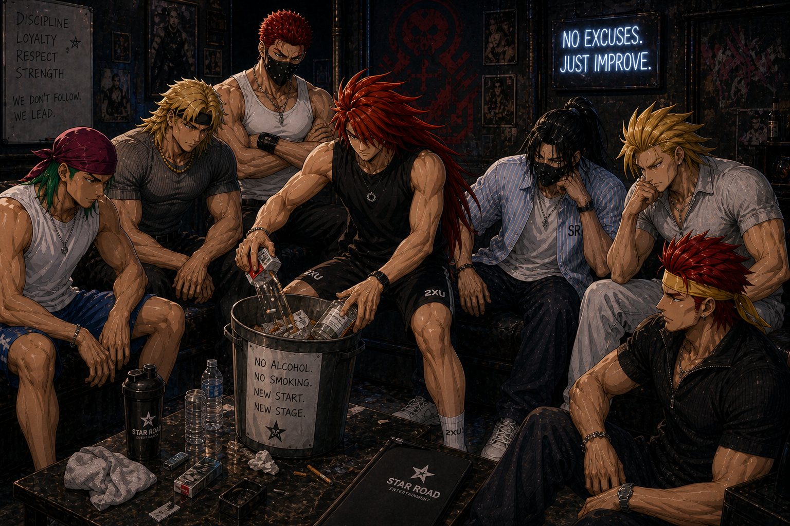
他們說到，就會做到。
早上九點半。
七個人從宿舍出發，往STAR ROAD走。
這條路走了快四個月，已經熟了——哪裡有一個坑，哪個路口的燈特別慢，哪家便利商店的咖啡比較好。
태양今天戴了墨鏡，說陽光太刺眼。
우진說，「你昨天說喜歡曬太陽。」
태양，「那是昨天。」
우진沒有再說。
人群是從轉角開始出現的。
先是幾個，然後越來越多，手機舉著，牌子舉著——SEVEN WAVES、7W♥——圍在路邊的欄杆後面，看到七個人出現，聲音就出來了。
철민，「怎麼這麼多人。」
강혁，「今天沒有行程。」
철민，「他們怎麼知道我們幾點出門？」
태양，「網路上有人記錄的。」
철민，「……」
태양，「你要習慣。」
七個人繼續走，步伐沒有刻意加快，但有默契地稍微靠近了一點——不是緊張，是保持隊形。
화성走在偏後，人群的聲音對他來說一直是需要適應的東西。
서준在화성旁邊，沒有說話，就是在旁邊。
인준走在最前面，包包背著，眼神往前，偶爾對著欄杆後面的人點頭。
우진戴了耳機，但沒有開音樂，只是戴著——這是他在人多的地方的習慣，像是多一層緩衝。
태양墨鏡後面，還是在笑，跟走過去的粉絲揮了揮手，聲音又大了一波。
강혁在태양後面，表情是那種「你少惹一點」的樣子，但沒有出聲。
走到一半，有個男人從路邊走出來，不是粉絲，西裝，手上拿著一個大信封，助理在旁邊，工作人員的氣質。
他直接走向인준。
旁邊的서준手往腰側動了一下——沒有刀，但是習慣。
인준，「請問？」
男人，「朴代表介紹來的，我叫李東賢，」他遞上名片，「攝影師，專做寫真集。」
인준接過名片，看了一眼。
李東賢把信封遞過來，「企劃書在裡面，朴代表說可以當面給你們，他說你們比較喜歡直接的方式。」
인준，「什麼企劃？」
「SEVEN WAVES第一本寫真集，」李東賢說，語氣很平靜，像是在說一件很正常的事，「我有興趣做這個案子。」
七個人在路邊站著，李東賢把企劃書翻開，簡單說了幾個方向。
태양把墨鏡往上推，湊過來看，「寫真集是什麼概念？」
李東賢，「就是照片書，但比形象照更有故事性，有主題，有場景，有你們每個人的樣子——不只是藝人的樣子，是你們這個人的樣子。」
태양，「聽起來像崔攝影師說的那種。」
서준，「差不多。」
강혁看著企劃書，「場景是？」
李東賢翻到下一頁，「我的方向是城市——你們現在生活的這個城市，街道、建築、夜景、日常。不是棚拍，是真實環境。」
철민，「在外面拍？」
「對。」
철민看了看四周圍著他們的人群，「像現在這樣？」
李東賢，「人群也可以是背景的一部分。」
철민，「……有意思。」
인준把企劃書合起來，「我們看完再給你答案。」
李東賢點頭，「合理，我的聯絡方式在名片上。」他看了看七個人，「對了——朴代表說你們是很特別的七個人，我自己也覺得是，所以才想做這個案子。」
태양，「哪裡特別？」
李東賢想了一下，「說不清楚，就是——站在那裡，會讓人想一直看。」
他說完，點頭，轉身走了，助理跟上去。
七個人繼續往公司走，企劃書夾在인준的包包裡。
태양，「要做嗎？」
철민，「看企劃書再說。」
서준，「城市場景，我覺得可以。」
강혁，「如果是真實環境，比棚拍好。」
우진，「嗯。」
화성沒有說話，但也沒有反對。
인준，「晚上看完企劃書，大家一起決定。」
沒有人反對。
繼續走。
路邊的人群還在，手機還在舉著，牌子還在晃著。
태양把墨鏡重新戴好，「我覺得寫真集拍城市很好，這個城市是我們自己走出來的。」
철민，「說什麼詩人的話。」
태양，「我說的是事實——」
철민，「你說的是廢話。」
태양，「강혁아，你覺得呢？」
강혁，「태양說得對。」
태양立刻轉向철민，「你聽到了嗎？」
철민，「강혁今天腦子不好使。」
강혁，「我腦子一直很好使。」
인준走在前面，聽著後面幾個人的聲音，沒有回頭。
路邊欄杆後面，一個粉絲舉著牌子，上面寫——
你們讓這座城市不一樣了。
인준看到那句話，腳步慢了一秒。
然後繼續走。
他想——
這座城市也讓我們不一樣了。
STAR ROAD的大門出現在前方。
七個人走進去，人群的聲音留在門外。
門關上。
안쪽은조용했다。
태양把墨鏡摘下來，「今天天氣很好。」
강혁，「嗯。」
철민，「進去了，還有訓練。」
태양，「知道知道——」
他跑著往電梯衝，差點撞上走出來的工作人員，道歉，繼續跑。
서준看著他，難得搖了搖頭，表情是那種「算了」。
화성走在最後，進門的時候，回頭看了一眼門外的城市。
陽光，人群，手機，牌子。
這個城市，現在有他們的位置了。
他轉回來，走進去，門關上。
STRAY，第一百五十天。
上班路，接到一個邀約。
寫真集，關於這座城市，關於他們七個。
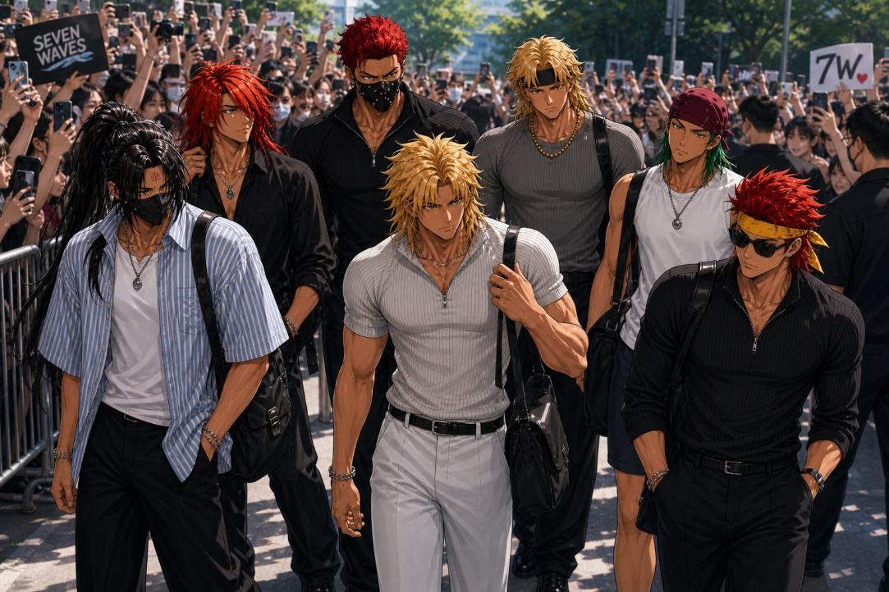
這個故事，還在繼續寫。
寫真集發售當天。
朴成俊把七本寄來的樣書放在桌上，七個人圍著看。
沒有人先伸手。
像是都在等什麼。
最後是태양第一個拿起來，翻開，沒有說話，就是看。
七本，各自有主題——
李東賢最後定下來的方向，不是統一風格，是每個人自己的色調，自己的語言。
封面上，每個人都有一句話。
서준 — RED STORM 열기는、静かに燃えている。 熱度，靜靜地燃燒著。
서준拿起自己那本，翻開，看著裡面的照片。
那天拍的時候，李東賢讓他帶著刀，坐在窗邊，光從側面打進來。
서준記得那個下午，陽光很重，他手放在刀柄上，什麼都沒有想，就是坐著。
照片裡的那個人，他認識——那是他自己。
他把書合起來，放回桌上，沒有說話。
但他的手在封面上停了一秒。
철민 — SHADOW EDGE 滴よりも、熱く、静かに。 比淚水更熱，更靜。
철민拿起自己那本，翻開第一頁，皺了眉。
「我怎麼看起來這樣。」
태양湊過去，「哪樣？」
철민，「像個……」他想了一下，「算了。」
태양，「我覺得很帥。」
철민，「那是因為你審美有問題。」
태양，「강혁你說。」
강혁看了一眼철민的寫真，「很好。」
철민，「你就會說很好。」
강혁，「不好看我不說話。」
철민沉默了兩秒，把書翻到下一頁，繼續看，沒有再說什麼。
강혁 — GOLDEN HORIZON 光は俺の背から生まれる。 光，從我背後誕生。
강혁拿起自己那本，翻開。
李東賢拍他的時候，讓他面對窗戶，背對鏡頭，然後突然叫他回頭。
就那一瞬間。
快門按下去。
강혁看著照片裡那個剛轉過頭的自己，表情是他從來不知道自己會有的那種——不是警戒，不是計算，就是，那一刻，他在那裡。
他把書合起來，放回去，拿起旁邊的水瓶，喝了一口。
우진，「好看嗎？」
강혁，「……還行。」
우진，「你嘴角動了。」
강혁，「沒有。」
태양 — GREEN PERCEPTION 自由は、選ぶもの、じゃない。 自由，不是選擇的東西。
태양看著自己的那本，翻到中間，停住了。
那張照片，是在城市某條巷子裡拍的，陽光很烈，他站在牆邊，沒有在笑。
李東賢叫他想一件讓他安靜下來的事。
태양想了很久，想到第一天在倉庫裡，철민說的那句話——
我們都是沒有名字的怪，現在才有機會自己取。
那個瞬間，他沒有笑。
照片把那個瞬間留下來了。
태양看著那張照片，說，「我沒想到我有這種表情。」
철민在旁邊看了一眼，沒有說話，但往태양那側靠近了一點。
화성 — SILENT FLOW 流れるままに、芯を持って。 順流而行，但守住核心。
화성的那本，沒有人主動去拿。
不是不想看，是在等他先。
화성最後自己拿起來，翻開。
李東賢拍他的時候，讓他坐在一面舊牆前，光從上面打下來，只照到額頭以上和眼睛。
口罩還戴著。
但那雙眼睛，在照片裡，清楚得讓人停住。
화성看了很久，沒有說話。
인준，「怎麼樣？」
화성，「……李東賢很厲害。」
這是他今天說的第一句完整的話。
인준，「嗯。」
화성把書闔上，放回去，繼續坐著，但肩膀比剛才鬆了一點。
인준 — WHITE RADIANCE 口も、強さのひとつ。 開口，也是一種力量。
인준拿起自己那本，翻開。
李東賢拍他的時候，問了他一個問題——「你最想對誰說什麼？」
인준想了很久。
最後說，「對他們六個。」
「說什麼？」
인준，「謝謝你們還在。」
快門按下去的瞬間，就是那個表情。
인준看著照片，那個表情他沒辦法自己描述，但他知道那句話是真的。
他把書合起來，看了看桌上其他六本，再看看桌邊的六個人。
沒有說話。
但那句話，他記得。
우진 — BURNING BEAT 心が動くまに、進め。 只要心還在動，就繼續前進。
우진的那本，封面上他戴著墨鏡，嘴角有一個很小的弧度。
철민，「우진아，你在笑。」
우진，「我知道。」
철민，「你平常很少笑成這樣。」
우진，「那天李東賢說了一件事。」
철민，「什麼事？」
우진翻到那一頁，「他說，'你不用確認自己是不是真的，你能感覺到快門聲，這樣就夠了'。」
철민，「然後你就笑了？」
우진，「然後我就笑了。」
철민看著那張照片，沉默了一會，「……還不錯，李東賢。」
七本放在桌上。
最後一頁，是集合頁，所有名字列在一起——
AKIRA / REN / KOUJI / TAIGA / SHIN / SORA / RYO
下面是那句話：
それぞれの色が、ひとつの波になる。 每個人的顏色，成為同一道浪。
태양，「這句話是誰想的？」
朴成俊，「李東賢。」
태양，「他很會說話。」
철민，「他是做這行的，當然會說。」
태양，「你也覺得很好吧？」
철민，「……還行。」
서준拿起那本集合版的封面，看了看，放下，「每個人的顏色。」
우진，「嗯。」
서준，「我覺得對。」
강혁，「嗯。」
화성，「……嗯。」
인준最後，把七本書一字排開，看著它們。
七個主題，七種色調，七個從不同遊戲出來的人——
放在一起，就是SEVEN WAVES。
「朴代表，」인준說。
朴成俊，「嗯？」
인준，「謝謝你做了這個。」
朴成俊，「謝李東賢。」
인준，「也謝謝你。」
朴成俊沉默了一下，點頭，「會繼續做的，放心。」
태양把自己的那本夾在腋下，準備帶走。
철민，「你要帶去哪？」
태양，「放房間，每天看。」
철민，「每天看自己的照片？」
태양，「提醒自己用的，」他說，「인준不是說嗎，提醒自己用的。」
철민看了眼那本書，然後很自然地把自己的那本也拿起來。
태양，「你也要帶？」
철민，「你少說話。」
태양笑了，沒有再說。
七個人，各自拿著自己那本離開會議室。
走廊上，陽光從窗戶打進來，把地板切成一塊一塊的光和影。
화성走在最後，低頭看著手裡那本書。
封面上那雙眼睛，是他的。
流れるままに、芯を持って。 順流而行，但守住核心。
他不知道李東賢怎麼從那次拍攝裡看出這句話。
但他覺得，那句話說的，是他。
他把書抱緊一點，繼續走。
STRAY，第一百八十天。
SEVEN WAVES 1ST PHOTOBOOK，發售。
七個顏色，一道浪。
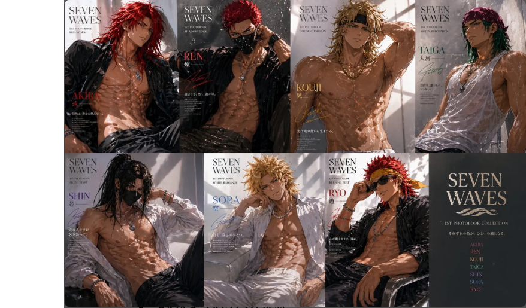
這道浪，還在往前走。
寫真集的封面照，是最後一天拍的。
李東賢說，「個人頁都完成了，最後一天，七個人一起。」
地點是一個廢棄倉庫，水泥牆，自然光從高窗打進來，光線很重，影子很長。
服裝是白色薄襯衫，每個人都一樣——但沒有人扣上，就這樣敞著。
李東賢說，「這件衣服，是你們共同的東西。怎麼穿，是你們自己的事。」
七個人站在那個空間裡，等李東賢調燈光。
철민把袖子推上去，看了看自己，「這件衣服很薄。」
태양，「透光的那種。」
철민，「我知道透光，我是說很薄。」
서준，「有什麼問題嗎？」
철민，「沒有，就是說一下。」
강혁已經找好位置靠著牆，手臂交叉，等著。
우진坐在旁邊的石台上，低頭看著自己的手，手腕上的手環在白衫下面若隱若現。
화성站在角落，把口罩往上拉了一下，確認好了，才走到其他人旁邊。
인준站在中間，看著這個空間，想起第一天的倉庫——
也是水泥牆，也是這種光。
但那時候七個人誰都不認識誰。
李東賢走過來，「好，我說一下今天的方向。」
七個人看向他。
「個人頁，我拍的是你們各自的樣子，」他說，「今天，我想拍的是你們在一起的樣子。不是藝人，不是表演，就是——這七個人，在同一個空間裡，是什麼感覺。」
他掃了一圈，「所以今天不需要配合我，就像平常一樣，我來找角度。」
沒有人說話。
태양，「平常一樣是……什麼都可以嗎？」
李東賢，「什麼都可以。」
태양，「好。」
一開始有點奇怪。
七個人各自站著，知道有鏡頭，就自然地繃著。
李東賢在旁邊拍了幾張，搖頭，把相機放下，「你們現在在等什麼？」
沒有人回答。
「你們平常在一起是這樣的嗎？」
철민，「不是。」
「那為什麼現在這樣？」
철민想了一下，沒有答案。
李東賢，「就當我不在。」
然後서준開口，對著철민說了一句完全不相關的話——
「你昨天偷吃우진的炸雞。」
철민，「我沒有。」
우진，「有。」
철민，「……那個盒子放在桌上沒有名字。」
우진，「我的名字在底部。」
철민，「誰會翻底部——」
태양笑出來了，聲音很大，整個空間都是。
강혁低頭，肩膀抖了一下。
화성在旁邊，眼神動了，口罩後面看不到，但인준知道他在笑。
인준把臉轉開，壓住嘴角。
李東賢，咔嚓咔嚓咔嚓——
連拍，沒有停。
之後就順了。
七個人在那個空間裡，說話，不說話，移動，靠著，坐著，站著——李東賢就在旁邊，找角度，按快門，沒有下指令。
서준靠著牆坐下來，강혁在他旁邊站著，手搭在서준肩膀上，兩個人看著前面，沒有說話。
咔嚓。
화성坐在石台邊緣，인준站在他旁邊，兩個人都在看窗外的光，距離很近，各自安靜。
咔嚓。
태양把手搭到강혁肩上，강혁的表情是「你幹嘛」，태양的表情是「沒事就是搭一下」。
咔嚓。
우진坐著，手環在光裡，低著頭，철민在他後面靠著牆站著，低頭看了他一眼，沒有說話。
咔嚓。
最後一個鏡頭，李東賢叫大家往中間靠。
七個人自然地移動，不是排隊，就是靠近。
서준在後面，強혁站著，철민在中間，인준在前排，화성在側邊，태양和우진在另一側。
沒有人說站哪裡，就是這樣——
跟平常走路的位置一樣，跟平常在宿舍坐著的位置一樣，跟第一天在倉庫裡最後留下來的位置一樣。
李東賢退後幾步，把整個畫面收進去，看了很久。
然後他說，「就這樣，不要動。」
咔嚓。
封面照出來的時候，朴成俊把它放在大螢幕上。
七個人坐在會議室裡，第一次看到成品。
沒有人說話。
陽光打在七個人身上，白色薄衫，光和影，每個人的位置就是平常的樣子——
右上角有一行字：
WE ARE SEVEN. WE MAKE WAVES. 7W — BEYOND THE LIMIT
태양第一個開口，聲音有點奇怪，「這是我們？」
인준，「是。」
태양，「……好看。」
철민，「嗯。」
강혁，「嗯。」
서준，「李東賢厲害。」
우진，「嗯。」
화성沒有說話，但他一直在看那張照片，比任何人都久。
인준看著螢幕上那七個人。
白色的衫，各自的樣子，同一個空間。
他想起李東賢說的——
就像平常一樣，我來找角度。
原來平常的樣子，放在鏡頭裡，是這個樣子。
不是表演，不是形象，不是任何人要求的樣子。
就是他們。
WE ARE SEVEN.
인준往後靠，把那句話再看了一遍。
七個從遊戲裡出來的資料，走到今天——
站在同一張封面上，有名字，有顏色，有各自的故事。
WE MAKE WAVES.
朴成俊，「封面定了，下週正式送印。」
沒有人說話。
朴成俊，「有問題嗎？」
철민，「沒有。」
朴成俊，「那散會。」
七個人站起來，往外走。
태양走到門口，回頭看了螢幕上那張照片最後一眼。
七個人，白衫，光影。
他想了一下，沒有說什麼，繼續走出去。
走廊上，철민在태양旁邊走著，突然說——
「那張照片，我覺得很好。」
太양，「我知道。」
철민，「你怎麼知道？」
태양，「因為你說話的聲音不一樣。」
철민，「哪裡不一樣？」
태양，「軟一點。」
철민，「……你少說話。」
태양笑了，沒有再說，但肩膀往철민那側靠了一下。
철민沒有推開。
STRAY，第一百八十一天。
SEVEN WAVES 1ST PHOTOBOOK 封面，定案。
WE ARE SEVEN. WE MAKE WAVES.
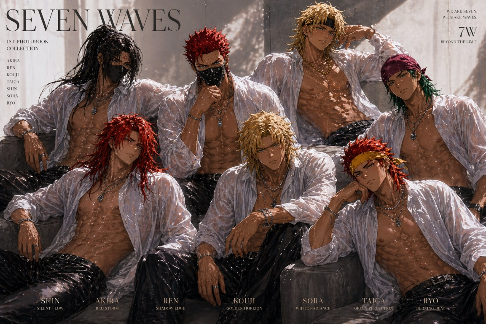
七個人，一道浪，繼續往前。
THE SHOW，直播中。
主持人把信封打開的那一秒，인준感覺到旁邊六個人同時屏住了呼吸。
「THE SHOW CHOICE，本週第一位——」
舞台上的燈光打下來，很亮，亮到幾乎看不清楚台下。
「——SEVEN WAVES！」
彩帶從天花板落下來。
紫色的螢光棒全部舉起來，聲音衝上來，像一道牆。
인준站在中間，第一個反應不是說話，不是動，就是站著，讓那個聲音打在身上。
旁邊有人把獎座遞過來，他接住了，沒有想到那個東西這麼重。
서준在인준左側，轉過頭，把臉稍微側開。
沒有人看清楚他的表情。
但철민看到了——서준的眼睛紅了。
철민沒有說話，把手搭上서준的肩膀，很重，很穩，就放在那裡。
서준沒有推開。
철민自己——
他站在那裡，用手背把臉擋了一下。
只有一秒。
然後手放下來，口罩還戴著，眼神看向台下，很直，很穩。
但那一秒，旁邊的서준看到了。
서준把철민擋住臉的那隻手，輕輕按了一下，沒有說話。
철민的手指收緊了一瞬間，然後鬆開。
강혁站在인준後面，手放在인준肩上。
他沒有哭，沒有笑，就是那樣站著，眼神很遠，像是在看什麼인준看不到的東西。
후에 인준問他那時候在想什麼，강혁說——
「在想第一天在倉庫裡的樣子。」
「然後呢？」
「然後覺得，走到這裡了。」
就這樣。
태양在最側邊，拍著手，笑得很大聲，眼睛是那種亮的——
不是表演用的亮，是真的亮。
우진在他旁邊，墨鏡戴著，沒有在拍手，就是站著，嘴角有那個很小的弧度。
台下那片螢光棒，他數不清有多少。
但他知道，每一支都是真實的。
화성站在最邊，沒有人注意到他的手握緊又放開了幾次。
那個獎座，他看了一眼，只有一眼，然後把視線移到台下。
幾萬個人。
在遊戲裡，他是一個沒有臉的忍者，被擊殺，重生，再被擊殺。
站在這個舞台上——
幾萬個人，是為了他們來的。
화성把頭微微低了一下，沒有人看清楚那個動作，但인준看到了。
인준往화성那側靠近了一點，兩個人的肩膀碰在一起。
화성沒有動。
麥克風遞到인준手裡。
台下的聲音慢慢降下來，幾萬個人，等著。
인준看著獎座，那個冷的重量在手裡。
然後看著台下。
他想起第一天在倉庫裡，철민說的那句話——
我們都是沒有名字的怪，現在才有機會自己取。
然後想起那個夜晚，宿舍走廊的燈，宿舍外門口的螢光棒，喝水慶祝戒菸戒酒第一天，李東賢說「就像平常一樣」——
那些日子，全部壓在這個獎座的重量裡。
인준開口，聲音有點啞——
「저희 SEVEN WAVES가 이렇게 큰 상을 받게 돼서 정말 믿기지 않고…」
我們SEVEN WAVES能得到這麼大的獎，真的很難相信……
他停了一下，把那句話說完——
「항상 저희를 응원해주시는 WAVES 여러분 덕분입니다. 늘 곁에서 힘이 되어주셔서 진심으로 감사하고, 더 멋진 음악과 무대로 보답할게요. 사랑합니다.」
一直支持我們的WAVES，都是因為你們。謝謝你們一直在旁邊成為我們的力量，我們會用更好的音樂和舞台來回報你們。愛你們。
台下的聲音又衝上來了。
인준把麥克風往旁邊遞。
철민接過去，站在麥克風前，沉默了一秒——
「……우리가 여기까지 왔다.」
我們走到這裡了。
就這一句。
但台下又是一聲炸裂。
彩帶還在落，紫色螢光棒還在揮，聲音沒有停過。
七個人站在台上，獎座在인준手裡。
화성最後，把頭往인준那側靠了一點——很小的動作，但是真實的。
서준在另一側，把철민肩膀上的手收回來，然後放進口袋，看著台下。
강혁的手還在인준肩上，沒有移開。
태양繼續在拍手，눈물이 났는지 모르지만 계속 웃고 있었다——不知道有沒有哭，但一直在笑。
우진把墨鏡往上推了一下，讓自己看得更清楚台下那片光。
인준最後，把獎座舉起來。
不是表演用的姿勢，就是自然地舉起來，讓台下看到。
七個人，各自的樣子，站在同一個舞台上。
彩帶落在肩膀上，落在頭髮上，落在那個獎座上。
THE SHOW CHOICE — 1ST WIN
台下有一個粉絲舉著牌子，被鏡頭帶到——
你們值得的。
철민後來說，他沒有哭。
서준說，「我看到了。」
철민，「那是汗。」
서준，「舞台燈光沒有那麼熱。」
철민，「……你少說話。」
서준，「嗯。」
철민沉默了一會，「……謝謝你沒有說出來。」
서준，「嗯。」
STRAY，第二百天。
SEVEN WAVES，第一個獎座。
從倉庫到舞台，從沒有名字到第一位。
他們走到這裡了。
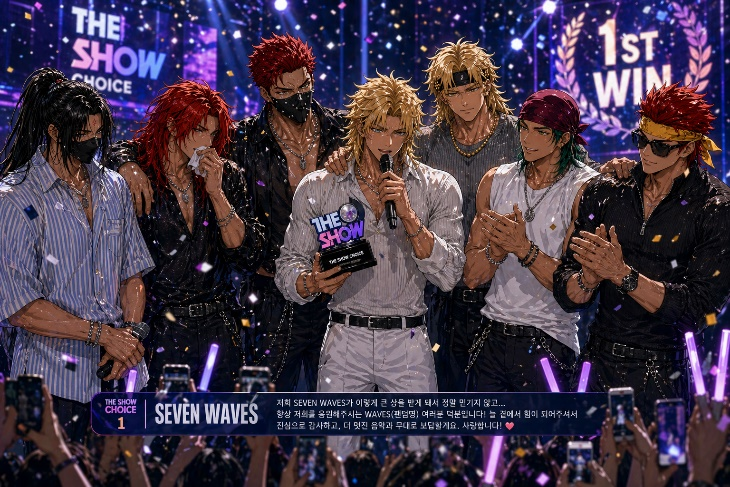
而且，還沒有停。
廣告拍攝，早上八點開始。
棚內，白色背景，專業燈光，一排香水瓶和護膚品整齊排在台子上。
背板上寫著—— SEVEN WAVES — THE NEW FRAGRANCE RIDE THE WAVE, FEEL THE POWER
朴成俊說這是第一個代言合約，香水品牌，對方點名要SEVEN WAVES。
철민第一個反應是，「香水是什麼？」
朴成俊，「噴在身上的，讓人聞起來好聞。」
철민，「我本來就好聞。」
태양，「……你昨天練完舞沒有馬上沖澡。」
철민，「你少說話。」
造型師先來，把七個人各自整理了一遍——髮型、衣服細節、皮膚狀態。
화성照例把口罩留著，造型師在口罩周圍做了修飾，整體反而有一種很特別的視覺感，攝影師看到之後說，「這個很好，不要動。」
화성沒有說話，但點了頭。
우진今天戴了墨鏡，攝影師研究了一下，說，「留著，很好。」
우진，「謝謝。」
강혁被要求把頭髮稍微往後撥，露出更多臉，他配合了，但造型師走開之後他悄悄把頭髮撥回來一點。
태양在旁邊，「你剛才——」
강혁，「我沒有。」
태양，「好。」
攝影師姓金，跟訓練室的金老師不同人，這個金攝影師話很少，就是站在鏡頭後面，讓助理調位置，他來看。
調了大概二十分鐘，他說，「好，準備。」
助理把香水瓶遞給인준。
인준拿著，看了一下，瓶身是黑色的，標籤上印著——SEVEN WAVES。
他把瓶子翻過來看底部，又翻回正面。
「有問題？」助理問。
인준，「沒有，第一次拿自己名字的東西。」
助理愣了一下，沒有接話。
인준把瓶子握好，準備入鏡。
第一輪，全員。
七個人在白色台子上各自找位置，攝影師在外面看，助理在旁邊調細節。
金攝影師沒有下太多指令，就是讓他們自己動，他來找角度。
인준坐在最前面，一隻手把香水瓶往鏡頭方向伸，另一隻手撐著地，往前傾——不是擺pose，就是自然地把那個瓶子放到最顯眼的位置。
金攝影師，咔嚓。
서준在後面靠著，紅色長髮散著，沒有拿香水，就是在那裡，視線往前，眼神有一種靜的重量。
咔嚓。
철민坐在台子側邊，手肘撐著膝蓋，口罩還戴著，但那個坐姿——有一種懶散的強勢感，不需要解釋。
咔嚓咔嚓。
태양拿著一瓶護膚品，研究了一下，「這個是擦臉的？」
助理，「對，是乳液。」
태양，「我要試試看。」
助理，「……等拍完。」
태양把瓶子放回去，「好。」然後繼續拍。
강혁在태양旁邊，手搭著台子，往前靠，一隻手撐著臉，看起來比平常放鬆了一點——或許是因為今天不用跳舞，就是拍照。
咔嚓。
화성坐在後排角落，光從側面打下來，只照到他的側臉上方，口罩的部分在陰影裡。
金攝影師看了那個角度很久，說，「就這樣，不要動。」
咔嚓咔嚓咔嚓。
우진在另一側，墨鏡上反著棚燈的光，手放在膝蓋上，安靜地坐著，讓鏡頭找他。
咔嚓。
中間休息的時候，태양馬上去拿了那罐乳液，擠了一點出來，擦在手背上，研究了一下氣味。
「好聞耶。」他說。
우진湊過來聞了一下，「還行。」
태양，「강혁你聞一下。」
강혁，「不用。」
태양，「怎麼知道不用，你聞了再說——」
강혁已經把臉轉開了。
철민在旁邊，「태양，你給我聞。」
태양把手伸過去，철민聞了一下，「還行。」
태양，「你跟우진說一樣的話。」
철민，「因為確實還行。」
서준從旁邊走過來，低頭聞了一下태양的手背，點頭，「可以。」
태양，「서준你也覺得可以！」他立刻轉向강혁，「你看——」
강혁，「我說不用，不是說不好。」
태양，「那你聞一下啊——」
인준，「夠了，準備繼續了。」
태양把手縮回去，小聲說，「下次再讓你聞。」
강혁，「不用。」
下午拍個人鏡頭。
每個人單獨入鏡，金攝影師給了一個方向——「你覺得這個香水是什麼感覺，就是那個感覺。」
沒有更多說明。
서준拿著香水瓶，站在燈光下，想了一下。
然後他說，「有點像剛練完武的感覺，身體很熱，但是靜的。」
金攝影師，「就是這個。」
咔嚓。
철민拿著瓶子，對著鏡頭，什麼都沒有想，就是拿著，看過去。
金攝影師連拍了很多張，說，「你天生就知道怎麼對鏡頭。」
철민，「因為我不管它。」
金攝影師，「對，就是這樣。」
강혁拿著瓶子，站了一會，然後把瓶子換到另一隻手，往側邊轉了一個角度，露出手腕上的手環。
金攝影師，「這個動作你自己想的？」
강혁，「嗯。」
「好，」金攝影師說，「繼續。」
咔嚓咔嚓。
태양拿著瓶子，立刻就笑了，金攝影師讓他不要笑，태양說，「我控制不住。」
金攝影師，「那就笑，但眼神往遠的地方。」
태양笑著，眼神往遠，那個畫面——有一種很特別的東西，像是他本來就是那樣的人。
咔嚓。
화성站在鏡頭前，拿著瓶子，金攝影師說，「閉眼。」
화성閉眼。
「把瓶子拿到胸口，」金攝影師說，「就放在那裡。」
화성照做。
「現在想一件讓你安靜的事。」
화성想了幾秒。
想到那個夜晚，倉庫，철민踢翻鐵桶，然後說——既然出來了，就不要回去了。
那個瞬間，他知道他留下來了。
金攝影師，咔嚓。
「睜眼。」
화성睜開。
금攝影師把螢幕轉過來給他看。
化성看著那張照片，手裡拿著瓶子，閉著眼睛，口罩上方的眉頭是鬆的——
那個樣子，他沒見過。
「喜歡嗎？」金攝影師問。
화성，「……嗯。」
우진拿著瓶子，墨鏡戴著，金攝影師研究了一會，說，「把墨鏡推上去一點，不要拿掉，就推上去。」
우진照做，墨鏡推到額頭，露出眼睛。
「看鏡頭。」
우진看過去。
咔嚓。
金攝影師看了螢幕，說，「你的眼睛很誠實。」
우진，「什麼意思？」
「就是，」金攝影師想了一下，「看什麼，就是什麼，沒有遮掩。」
우진沉默了一秒，「謝謝。」
인준最後。
他拿著香水瓶，坐在台子前面，往鏡頭方向把瓶子伸出去，然後抬頭。
金攝影師在鏡頭後面，「你在想什麼？」
인준，「在想這個瓶子上面有我們的名字。」
「然後呢？」
인준，「然後覺得，值得。」
咔嚓。
拍完，收工。
助理開始整理道具，香水瓶和護膚品一瓶一瓶放回盒子。
朴成俊走進來，看了金攝影師一眼，「怎麼樣？」
金攝影師，「比預期好。」
朴成俊，「哪裡好？」
金攝影師想了一下，「他們拿著那個瓶子，不像在賣東西，像是那個東西本來就是他們的。」
朴成俊點頭，「嗯。」
태양在收工前，跑去問助理，「那罐乳液，可以帶一罐走嗎？」
助理去問了品牌方，品牌方說可以，給了一整套樣品。
태양回來的時候，手上抱著一盒，很開心，「我們每人一份！」
철민，「我不要。」
태양，「你剛才說好聞——」
철민，「我說還行，不是好聞。」
태양，「差不多啦——」
서준已經從太양手上拿走一份，放進包包。
태양，「서준你要！」
서준，「嗯。」
화성也安靜地拿了一份。
우진拿了一份，研究了一下成分表。
강혁最後，在太양快要轉身的時候，把其中一瓶香水悄悄拿走，放進口袋。
태양沒有看到。
인준看到了，沒有說。
離開的時候，棚裡的燈開始一盞一盞關掉。
背板上那句話還在——
RIDE THE WAVE, FEEL THE POWER
서준最後一個出去，回頭看了一眼那句話。
他想，在遊戲裡，他是被浪打的那個。
現在，他們是浪。
他轉過身，走出去，門關上。
STRAY，第二百一十天。
SEVEN WAVES，第一個香水代言。
他們的名字，開始印在更多東西上。
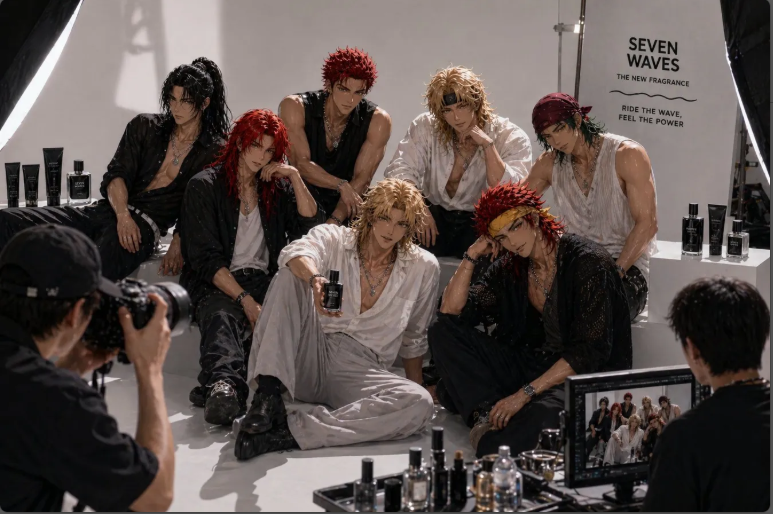
每一個，都是真實存在過的證明。
錄音室，晚上九點。
白板上寫著今天的結構——
New Song 7W V1 / Pre-CH / CHORUS / V2 / BRIDGE / OUTRO
旁邊還有密密麻麻的韓文歌詞草稿，幾行被劃掉，幾行被圈起來，最上面用紅筆寫著——Top Line，下面跟著幾個還沒定案的選項。
這首歌，是他們第一首自己參與寫詞的歌。
製作人朴製作說，「你們有什麼想說的，都可以放進來，這首歌是你們的。」
철민第一個說，「我不會寫詞。」
朴製作，「你會說話嗎？」
철민，「廢話。」
「那就行，說出來，我們一起整理。」
寫詞的過程花了兩週。
不是每個人都馬上有東西，但慢慢地，各自交出了一些字句——
서준寫的是關於「帶著一樣東西走了很遠的路」。
화성寫的是「選擇自己的樣子」。
강혁寫的是「從底部往上看，然後站上去」。
태양寫的是「第一次感覺到風」——他說他在遊戲裡從來沒有感覺過風，出來之後第一天，風打在臉上，他愣了很久。
우진寫的是「確認自己是真實的方法」。
철민最後交了一張紙，上面只有一行——
살아있으니까 간다. 因為活著，所以走。
인준看到那行字，沉默了很久。
最後把它放進了副歌的最後一句。
錄音室裡，七個人各自戴著耳機，站在麥克風前，或坐著，或站著。
朴製作在玻璃後面的控制室，助理在旁邊操控軌道。
螢幕上是已經錄好的伴奏，音波跑動著，像一條河。
「好，從V1開始，」朴製作的聲音從耳機裡傳進來，「第一遍先跑一次感覺，不用完美。」
인준先進。
V1的第一句，他的聲音。
錄音室裡安靜，只有耳機裡的伴奏和他自己的聲音迴盪。
朴製作，「好，繼續。」
인준把歌詞紙拿起來，看了一眼，然後放下，憑記憶繼續——那些詞是他們自己寫的，他早就記住了。
서준進來的時候，Pre-CH的部分。
他的聲音跟인준不一樣，인준是穩的，서준是有角度的，像刀，但不是傷人的那種，是有方向的那種。
朴製作停了一下，「서준，再來一次，這次把最後那個音收短一點。」
서준再來一次。
「好，就這個。」
서준把耳機往上推了一下，看著歌詞紙上自己寫的那幾行——
가져온 것 하나로 먼 길을 걸었다. 帶著一樣東西，走了很遠的路。
他想起武士刀。
想起第一天醒來，手邊什麼都沒有，只有那把刀還在。
他把耳機重新戴好，繼續錄。
CHORUS，是태양和철민一起的部分。
兩個人站在相鄰的麥克風前，태양拿著歌詞紙，철민沒有拿，早就背起來了。
朴製作，「好，這段要衝出來，你們知道嗎？」
태양，「知道。」
철민，「知道。」
伴奏進來，兩個人的聲音同時出去——
태양是向外的，像浪打出去。
철민是從裡面頂出來的，像地底的震動。
兩個聲音疊在一起，朴製作在玻璃後面，表情動了一下——
不是很明顯，就是眼神亮了一點。
「再來一次，」他說，「這次철민你第三句再壓一點，태양你跟著他的力道進來。」
철민，「好。」
태양，「我試試。」
第二次進去，태양跟上了철민的力道，那個厚度——
朴製作，「這個。就這個。」
V2，강혁的部分進來。
他的聲線最低，像底層的基石，把整首歌的結構撐住。
朴製作讓他單獨錄了三遍，每次都說，「再往前一點，不要藏。」
강혁第三次，沒有藏，就把聲音放出來——
那個聲音落在錄音室裡，整個空氣都沉了一下。
朴製作，「好，這個留著。」
강혁把耳機拿下來，喝了口水，把耳機重新戴上，繼續下一段。
BRIDGE，是화성和우진的部分。
兩個人聲音的個性差很多——화성低沉，帶著一種沉住的重量，우진清一點，像是在重量裡透出來的光。
朴製作讓他們一起錄了第一遍，聽了之後說，「你們兩個，就這樣，不要改。」
화성，「不需要調整？」
「不需要，」朴製作說，「你們的聲音放在一起，剛好。」
화성和우진互看了一眼。
우진，「再來一次？」
「再來一次，把感情帶進去，」朴製作說，「這段詞是你們兩個寫的，你們最知道是什麼感覺。」
화성看著歌詞紙上自己寫的那幾行——
내가 선택한 모습으로 여기 있다. 以我選擇的樣子，在這裡。
他深吸一口氣，把耳機調好，「再來。」
OUTRO，全員。
七個人全部進錄音室，站在各自的麥克風前。
朴製作，「最後這段，我不下指令，你們自己來，就像在台上一樣。」
七個人戴上耳機，伴奏進來。
最後那一句——철민寫的那行——
살아있으니까 간다.
七個聲音，各自的音色，同時出去。
不是整齊劃一的，是有各自厚度和角度的七個聲音，疊在一起，變成一個東西。
朴製作在玻璃後面，把音量往上調了一點，讓那個聲音充滿整個控制室。
助理在旁邊，沒有說話，就是聽著。
OUTRO錄完，朴製作說，「今天到這裡。」
七個人把耳機拿下來，靜了幾秒。
태양，「怎麼樣？」
朴製作從控制室走出來，把門打開，站在門口，「你們想聽嗎？」
七個人，「想。」
朴製作走回去，把剛才錄的完整版播出來——
伴奏進來，인준的聲音，서준的聲音，태양和철민，강혁，화성和우진，然後最後全員——
살아있으니까 간다.
錄音室裡，七個人聽著自己的聲音從喇叭裡出來，沒有人說話。
철민坐在椅子上，手肘撐著膝蓋，低著頭聽，沒有人看得到他的表情。
서준靠著牆，閉著眼睛。
화성站在原地，手指輕輕扣著，沒有動。
태양抬著頭，看著天花板，眼睛是亮的。
우진把歌詞紙疊起來，放在膝蓋上，安靜地聽。
강혁喝著水，水瓶放在嘴邊，停在那裡，忘記喝。
인준坐在電腦前，看著螢幕上那條音波，聽著那七個聲音從喇叭裡出來——
想起第一天在倉庫，철민踢翻鐵桶，然後問——
你們是不是也從裡面出來的？
那時候，沒有名字，沒有聲音，沒有任何人知道他們。
現在，有一首歌，裡面有七個人的聲音，有他們自己寫的字——
살아있으니까 간다. 因為活著，所以走。
歌結束了，控制室裡的喇叭靜下來。
沒有人說話。
朴製作在玻璃後面，等著。
最後是철민開口，聲音很平，「……可以。」
太양，「『可以』是什麼意思？」
철민，「就是可以，很好的意思。」
태양，「那你直接說很好不就行了——」
철민，「我說話你少管。」
서준，「這首歌很好。」
강혁，「嗯。」
우진，「嗯。」
화성，「……嗯。」
인준，「謝謝大家。」
沒有人問謝什麼，因為都知道。
離開錄音室的時候，白板上的歌曲結構還在——
New Song 7W V1 / Pre-CH / CHORUS / V2 / BRIDGE / OUTRO
철민走過去，在白板最下面加了一行字，然後走出去。
태양看了那行字，笑了。
살아있으니까 간다.
STRAY，第二百三十天。
SEVEN WAVES，第一首自己寫詞的歌，完成錄製。
七個聲音，一首歌。
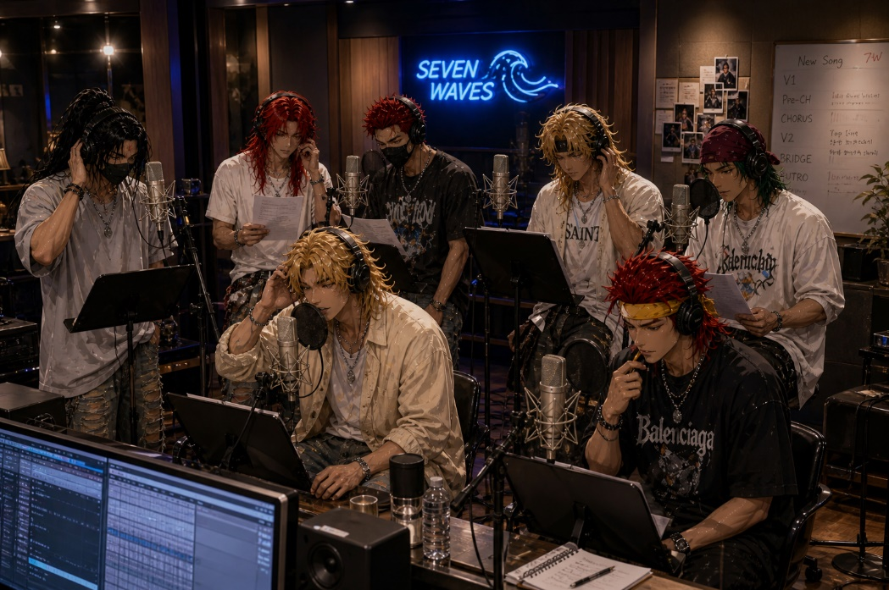
因為活著，所以走。
新歌的舞蹈練習，第一天。
訓練室裡，SEVEN WAVES的logo打在牆上，角落堆著脫下來的外套和毛巾，地板上有幾瓶水，有人喝了一半，有人還沒開。
白板上寫著編舞結構——
Chorus → Verse → Bridge → Ignite → Beyond
金老師站在中間，手上拿著平板，裡面是這首歌的編舞參考影片，但他說，「參考是參考，這首歌是你們自己的詞，舞也要是你們自己的東西。」
철민，「那要怎麼做？」
金老師，「先聽歌，身體自己會告訴你。」
철민，「身體不會說話。」
金老師，「試了再說。」
第一遍，純聽。
七個人站在訓練室裡，音樂放出來，不要動，就是聽。
살아있으니까 간다.
副歌出來的時候，태양的腳先動了，很小的動作，像是忍不住。
金老師，「태양，忍住。」
태양把腳收回來，繼續聽。
철민閉著眼睛，手指在腿側輕輕敲著節拍，沒有意識到。
서준看著鏡子裡的自己，像是在問那個倒影什麼問題。
화성站得很直，但肩膀隨著低頻微微在動——幾乎看不出來，但金老師注意到了，沒有說話。
第二遍，自由動。
「這次，想怎樣就怎樣，不用對，不用漂亮，就動。」金老師退到角落，「我看著。」
音樂再次進來。
인준第一個動起來。
不是漂亮的舞步，是那種從身體重心出發的動作——低沉，有根，像是把自己釘在地板上然後從那裡延伸出去。
金老師在角落，沒有說話，但眼神亮了。
철민進來，他的動作跟인준完全不一樣——인준往下，철민往外，每一個beat都像要撞破什麼，衝出去，再收回來，再衝出去。
他沒有在想對不對，就是動，跟著那首歌的力道走。
金老師，咔嚓——他用平板把這個瞬間截了下來。
서준的動作慢了半拍進來，不是因為跟不上，是他在找自己的位置。
找到之後，他的動作——
有角度，有方向，像那把武士刀，不是揮出去的那種，是搭在肩上走很遠的路的那種。
金老師把那個動作在平板上標記起來，「서준這個留著。」
서준沒有聽到，繼續動。
강혁進來的時候，整個訓練室的重心往下沉了一點。
他的動作不多，但每一個都很實——像貝斯線，不在最前面，但沒有它整個東西就散了。
태양在旁邊，跟著강혁的節拍找到自己的位置，兩個人的動作一重一輕，一沉一浮，配合得很自然。
金老師，「태양和강혁，這個組合記著。」
태양聽到了，往強혁方向比了個手勢，강혁沒有理，繼續動。
화성在最後排進來。
他的動作跟所有人都不一樣——不是衝出去的，不是往下的，是橫向的，像水，像他寫的那句詞——
流れるままに、芯を持って。
順流，但有核心。
金老師看到화성動起來的那一刻，在平板上停下來，什麼都沒有標記，就是看著。
우진最後進來，戴著墨鏡，動作很小，但精準，每一個點都卡在音樂最細的縫隙裡。
他動的時候，旁邊的人會自然地往他那個節拍對齊——不是因為他很顯眼，是因為他很準，像一個隱形的基準線。
金老師，「우진，把墨鏡拿掉試試看。」
우진把墨鏡摘下來，放到旁邊，繼續動。
沒有墨鏡，他的眼神直接對著鏡子，對著音樂，對著自己的動作。
金老師，「這樣好，繼續。」
第一遍自由動，結束。
音樂停，七個人各自喘著氣，有人去拿水，有人靠著牆，有人看著鏡子裡剛才動過的自己。
金老師走出來，「好，我說一下我看到什麼。」
七個人看向他。
「인준是軸心，철민是力量，서준是方向，강혁是重量，태양是流動，화성是水，우진是節拍，」他說，一個一個掃過去，「你們七個，每個人的動法都不一樣，但放在一起——」
他停了一下，「——是一首完整的歌。」
沒有人說話。
金老師，「所以今天的任務，就是把你們各自的動法，整合進同一個編舞裡，不是消掉你們的差異，是讓差異成為這首歌的一部分。」
태양，「聽起來很難。」
金老師，「很難。」
태양，「謝謝你誠實。」
金老師，「再來一遍，這次跟著我。」
第三遍，跟著金老師學基礎隊形。
副歌的部分，七個人展開，각자의 위치——
인준正中，철민和서준左右，강혁在後撐著，태양和화성兩側延伸，우진在後排正中——
音樂進來，七個人同時動。
不完整，不整齊，有人搶了半拍，有人動作大了一點，有人收得太快——
但那個形狀——
金老師在鏡子前看著那七個人，想起第一次看到他們在泳池舞台上表演的樣子。
那時候也不完整，也不整齊。
但有什麼東西是完整的。
練到一半，철민做一個動作連續做錯了三次。
第四次，他停下來，對著鏡子看，看了很久。
金老師走過來，在他旁邊站著，「你在哪裡卡住了？」
철민，「這個轉，我知道應該怎樣，但身體做不出來。」
金老師，「你知道問題在哪嗎？」
철민，「重心太高了，轉的時候失掉了。」
金老師，「對，那怎麼修？」
철민，「往下一點再轉。」
「試。」
철민深蹲了一點，重心往下，再轉——
出來了。
金老師，「記著這個感覺。」
철민，「記著了。」
金老師走開，繼續看其他人。
철민對著鏡子，把那個動作又做了三次，確認了，繼續往下練。
服준練到一個定點動作的時候，停下來。
旁邊的태양，「怎麼了？」
서준，「這個動作，我覺得應該再低一點。」
태양，「金老師說這個高度——」
서준，「我知道，但這首歌的詞——」他停了一下，「那句是『帶著一樣東西走了很遠的路』，低一點才對。」
태양，「……你用詞來想動作？」
서준，「不然呢？」
태양想了一下，「那我的那句是『第一次感覺到風』，是不是應該動作大一點、往外？」
서준，「嗯。」
태양，「我去跟金老師說。」
서준，「嗯。」
太양跑去找金老師，說了一堆，金老師聽完，想了一會，說，「試試看。」
太양做了一遍，金老師看著，點頭，「留著。」
태양跑回來，「서준你說得對！」
서준，「嗯。」
快結束的時候，七個人跑了一遍完整的編舞。
不完美，還有很多地方要修，但第一次七個人從頭跑到尾——
살아있으니까 간다.
最後那句，七個人同時定格，各自的姿勢，各自的重心，各自的方向——
放在一起，是一個整體。
鏡子裡，七個喘著氣的人。
金老師把音樂停掉，沉默了幾秒。
「還有很多要修，」他說，「但今天你們找到這首歌的身體了。」
태양，「身體？」
「每首歌都有自己的身體，」金老師說，「就是它應該怎麼動的方式。今天你們找到了。」
收工前，인준對著鏡子，把剛才副歌的最後一個動作重新做了一遍。
鏡子裡的他——
低著重心，雙手往兩側延伸，抬頭。
像一個在說——我在這裡——的人。
他把那個姿勢保持了幾秒，然後放鬆，去拿水喝。
화성在旁邊，也在看鏡子，看了一眼인준，沒有說話。
인준，「怎麼了？」
화성，「沒有，就是看。」
인준，「看什麼？」
화성，「看我們走到哪了。」
인준看著鏡子裡的兩個人，「還很遠。」
화성，「嗯。」
停了一下，「但比昨天近。」
STRAY，第二百三十一天。
新歌舞蹈練習，第一天。
七個身體，找到了同一首歌的形狀。
살아있으니까 간다. 因為活著，所以走。
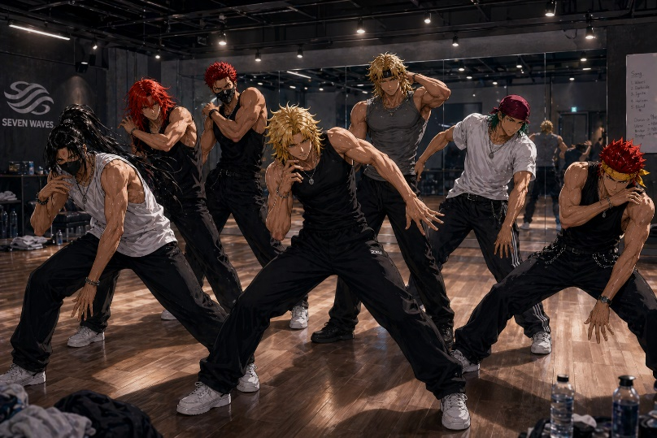
繼續。
白板上寫著今天的編舞進度——
Today's Choreography 1. Intro / 2. Verse 1 / 3. Pre-Chorus / 4. Chorus / 5. Break / 6. Verse 2 / 7. Ending
第五項，Break，被圈起來了。
不是編舞裡的Break——是金老師叫停的那個Break。
「休息十五分鐘，」他說，「汗擦一下，水喝一下，腦子放空一下。」
然後他自己出去了，留七個人在訓練室裡。
每個人用自己的方式，停下來。
인준坐在地板上，毛巾搭在脖子上，手裡拿著水瓶，沒有喝，就是拿著。
頭微微低著，往地板看，但眼神是放空的——不是在想什麼，就是讓腦子空著。
這是他最近學到的事，太양教的——「不想事情的時候，腦子反而想清楚。」
인준覺得這句話很矛盾，但試了之後發現是對的。
他就這樣坐著，什麼都不想，水瓶在手裡，涼的。
서준靠著牆坐著，毛巾擦了把汗，然後掛在脖子上，兩手垂著，眼睛往天花板看。
今天Chorus的部分，他有一個動作連續卡了四次。
第五次才出來。
他知道問題在哪——右腳的重心換得太慢，然後帶動手的時候就晚了半拍。
他在心裡把那個動作再走了一遍，沒有動，就是在腦子裡走。
走完，閉上眼睛，休息。
서준旁邊，화성站著。
他沒有坐下來，就是靠著鏡牆站著，水瓶拿起來，口罩拉下一點，喝水，喝完，口罩拉回去。
他的眼睛往鏡子裡看，看著訓練室裡其他幾個人。
화성는 관찰하는 걸 좋아한다——不是監視，就是看。
인준在放空，서준在腦子裡複習動作，태양正在對著鏡子比手勢，철민擦汗的方式像在擦傷口，강혁在喝水，우진坐著，手指在地板上輕輕敲著節拍。
화성看完一圈，把視線收回來，看著鏡子裡的自己。
汗還沒乾，頭髮有幾縷黏在臉上，口罩有點濕了。
他把頭髮撥開，繼續站著。
철민站在中間，毛巾往臉上一蓋，擦，力道很重，像是要把今天的疲勞一起擦掉。
擦完，把毛巾往肩上一搭，仰頭，把水瓶打開——口罩拉下來，喝了一大口，收著喉嚨的聲音。
然後把口罩拉回去，水瓶蓋上，就這樣站著，手放在腰上，往天花板看。
今天的CHORUS，他沒有卡，但BRIDGE的part他覺得力道不夠。
他知道原因——那段詞是화성和우진寫的，他自己唱的時候沒有辦法完全進去。
下次要再聽一遍那兩個人說那段詞是什麼感覺寫出來的。
철민在心裡記下來，繼續仰著頭發呆。
태양站在鏡子前面，不是在練動作，是在對著鏡子裡的自己做表情。
現在做的是「嚴肅」。
他把眉頭皺起來，把嘴角往下壓，盯著鏡子裡的自己——
三秒後，忍不住笑了。
他重新試，又笑了。
第三次，撐了快五秒，最後還是垮了。
他搖搖頭，放棄嚴肅，改成喝水。
水喝了一半，他看著鏡子裡自己喝水的樣子，突然想到一件事——
「喂，」他轉向旁邊的강혁，「你練舞的時候表情很嚴肅，你是故意的嗎？」
강혁，「跳舞要專注。」
태양，「那你笑不出來嗎？」
강혁，「我不是在表演笑，我是在跳舞。」
태양，「但台下的人想看你笑——」
강혁，「台下的人想看我跳好，我跳好了，他們自己會笑。」
태양想了一下，「……好像有道理。」
강혁繼續喝水。
태양繼續對著鏡子練表情，這次改練「酷」。
강혁站著喝水，一口一口，不快，把整瓶喝完，蓋上，放到旁邊。
他沒有坐下來的習慣，站著比較好，坐下來之後再站起來，肌肉會更緊。
他往鏡子看，把今天的編舞在心裡重新跑了一遍——哪裡出力，哪裡收，哪裡跟인준的重心換接，哪裡跟태양的流動銜接。
他把手臂舉起來活動了一下，確認肩膀還沒有僵，放下來。
還好。
繼續等金老師回來。
우진坐在地板靠著牆，水瓶放在旁邊，沒有喝，手指在地板上輕輕敲著。
不是無聊，是他在把今天的編舞節拍重新確認——哪個beat對應哪個動作，他用手指敲出來，在腦子裡對齊。
敲到Chorus最後那個定格，他的手指停了。
那個定格，七個人同時停在各自的位置上。
他想到第一天在倉庫，七個人第一次同時在同一個空間裡，也是各自在各自的位置，沒有說話。
那時候是因為戒備。
現在是因為這首歌。
우진把那個差別在心裡存了一下，繼續敲節拍。
訓練室裡，沒有人說話。
水瓶的聲音，毛巾的聲音，偶爾有人換個姿勢的聲音。
七個人，各自在各自的方式裡休息。
不需要說話，也不需要確認對方在不在——
就是知道，都在。
金老師推門進來，掃了一圈，「好了嗎？」
태양立刻站起來，「好了！」
철민，「好了。」
서준慢慢站起來，毛巾從脖子上拿下來，丟到旁邊。
화성推開牆，站直。
강혁，「嗯。」
우진把手指從地板上收回來，站起來。
인준最後，把水瓶蓋上，放到旁邊，站起來，往鏡子前走。
「繼續，」他說，「Verse 2。」
金老師，「狀態怎麼樣？」
철민，「可以。」
태양，「好！」
서준，「準備好了。」
화성，「嗯。」
강혁，「可以。」
우진，「好。」
인준往後看了六個人一眼——
汗還沒乾，但眼神都在。
「走。」
音樂再次進來。
七個人，從Verse 2的位置開始動。
地板上有他們剛才坐過、站過、靠過的痕跡，幾瓶水，幾條毛巾，一些還沒散去的汗味。
Break結束了。
但沒有人覺得累完了。
因為這首歌還沒跑完。
STRAY，第二百三十二天。
練舞第二天，Break時間。
七個人，各自停下來，然後一起繼續。
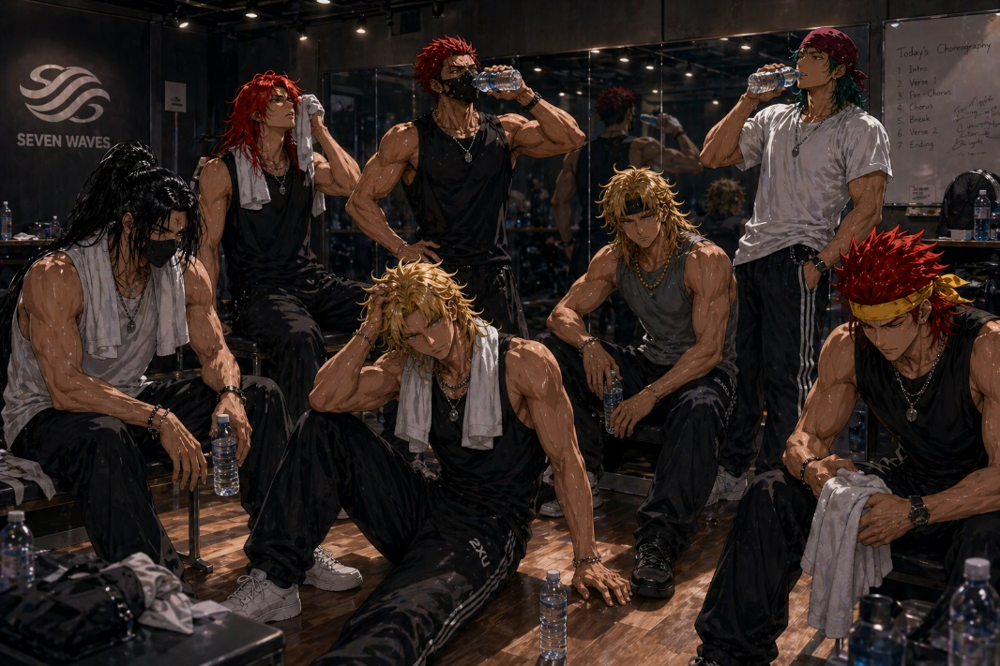
這，也是默契的一種。
巡迴最後一站。
同一個城市，回到起點。
戶外水舞台，和第一站一樣的場地，但今晚的規模更大——舞台延伸出去，噴泉的水柱更高，燈光更密，台下的人，是第一站的兩倍。
後台，開場前。
七個人換上了巡迴最後一站的特別服裝——黑色泳褲，7W的字樣印在側邊，就這樣，沒有多餘的東西。
朴成俊看到的時候說，「這個造型是誰定的？」
太양，「我們自己。」
朴成俊，「理由？」
철민，「第九天，我們在泳池第一次上台，就是這樣。」
朴成俊沉默了一下，點頭，「好。」
七個人站在後台，台下的聲音已經很大了，隔著牆都能感覺到那個震動。
화성，「二十三站。」
인준，「嗯。」
화성，「全部過了。」
인준，「嗯。」
화성沒有再說，但那兩個字——全部過了——在訓練室的空氣裡停留了一會。
서준把手放在刀柄上，確認了一下，今晚壓軸的時候會用到。
강혁把手腕活動了一圈，放下來。
태양往後伸了個懶腰，啪的一聲，旁邊的우진往旁邊挪了半步。
태양，「最後一站了。」
우진，「嗯。」
태양，「有沒有捨不得？」
우진想了一下，「有。」
태양，「我也是。」他停了一下，「但結束了還有下一個，所以還好。」
우진，「嗯。」
태양，「우진아，你今天有沒有想說什麼？」
우진，「有。」
태양，「什麼？」
우진，「上台再說。」
태양，「……好。」
철민站在角落，沒有跟任何人說話。
他在想第一站的時候——第一個音出去，台下的聲音炸開來，那個感覺。
二十三站，每一站都有那個感覺。
但今晚，是最後一次了。
他把那個「最後一次」在心裡放了一下，然後放開。
不是結束，就是這一段的最後。
철민，「走。」
工作人員，「三十秒。」
七個人對齊，站好。
인준回頭，最後看了六個人一眼。
沒有說話，就是看著。
然後，
「走。」
燈暗。
台下幾萬個螢光棒，紫色，在黑暗裡像一片星海。
牌子在人群裡舉著——
SEVEN WAVES 7W FOREVER 일곱 파도, 영원히 함께 사랑해 7W ♡
噴泉從舞台地板升起來，水柱打在燈光裡，比第一站更高，更密，整個舞台變成一面水牆。
主持人的聲音——
「마지막으로——SEVEN WAVES！」
七個人走出去，走進那片水光裡。
水打在身上，從頭髮往下流，台下的聲音——
比第一站更大。
인준站在中間，麥克風拿到嘴邊，深吸一口氣。
他看著台下那片螢光棒，看著那些牌子——
일곱 파도, 영원히 함께. 七道浪，永遠在一起。
他想起第一天在倉庫，철민踢翻鐵桶，然後說——
我們都是沒有名字的怪，現在才有機會自己取。
現在台下幾萬個人，舉著有他們名字的牌子。
인준，「안녕하세요——」
台下，炸裂。
兩個小時。
最後一站，每一首都像是第一次唱——因為知道這是最後一次在這個巡迴裡唱。
서준的聲音在水裡，比任何一站都更開——
가져온 것 하나로 먼 길을 걸었다.
화성的部分，水打在口罩上，他的聲音還是清楚地出來——
내가 선택한 모습으로 여기 있다.
철민和태양的CHORUS，兩個人的聲音疊在一起，水花在燈光裡炸開——
台下幾萬個人，跟著唱——
강혁在後面，貝斯線穩穩地在底部，像一個不會動的東西，讓其他六個人知道自己在哪裡。
우진的鍵盤旋律，在水聲裡穿出來，清楚的，像他說的那句——
확인하는 방법을 찾았다. 找到了確認自己的方法。
壓軸前，인준把麥克風拿到嘴邊，台下慢慢靜下來。
「오늘，마지막 스테이지입니다.」
今天，是最後一個舞台。
台下有人哭出來的聲音，螢光棒還是舉著。
인준繼續，「이 투어，23번의 스테이지——」
這次巡迴，二十三個舞台——
他停了一下，往後看了六個人。
鏡頭把那個動作放到大螢幕上，台下又是一聲聲音。
인준轉回來，「저희가 여기까지 온 건，여러분 덕분이에요.」
我們能走到這裡，都是因為你們。
他把麥克風往旁邊遞，태양接過去——
태양，「그리고——」他停了一下，這是他說要上台再說的話，「저희가 여기까지 온 건，우리 일곱 명 덕분이기도 해요.」
還有——我們能走到這裡，也是因為我們七個人。
台下，螢光棒全部舉起來，一片紫色。
철민在태양旁邊，低著頭，沒有說話，但肩膀抖了一下。
壓軸，那首歌。
서준把武士刀架在肩上，走到舞台中間。
噴泉升到最高，整個舞台被水包圍，燈光在水裡折射，把所有人都染成藍色和紫色。
七個人，最後一次在這個巡迴裡站上舞台。
音樂進來——
살아있으니까 간다.
台下，幾萬個聲音，跟著——
살아있으니까 간다.
七個人和幾萬個人，同一句話，同一個時刻——
最後一個音，七個人定格。
燈，慢慢暗下去。
水，還在流。
黑暗裡，台下的聲音沒有停。
SEVEN WAVES——SEVEN WAVES——SEVEN WAVES——
七個人站在黑暗的舞台上，水從頭髮滴下來，滴在地板上。
沒有人說話。
台下的聲音，不停。
很久之後，인준開口，聲音很低——
「二十三站，結束了。」
沒有人回應，但都在聽。
인준，「謝謝你們。」
沒有人問謝什麼。
因為都知道。
철민最後說了一句——
「下一個，繼續。」
태양，「嗯。」
서준，「嗯。」
강혁，「嗯。」
화성，「嗯。」
우진，「嗯。」
인준，「嗯。」
台下，還在喊。
일곱 파도, 영원히 함께.
七道浪，永遠在一起。
舞台上的七個人，站在黑暗裡，聽著那個聲音。
七個從遊戲裡出來的小怪。
七個沒有名字、然後自己取了名字的人。
七個學會了活著是什麼感覺的人。
聽著幾萬個人叫他們的名字。
STRAY，第三百六十五天。
살아있으니까 간다 WORLD TOUR，第二十三站，完。
一年。
從倉庫到世界巡迴。
七道浪，還在往前走。
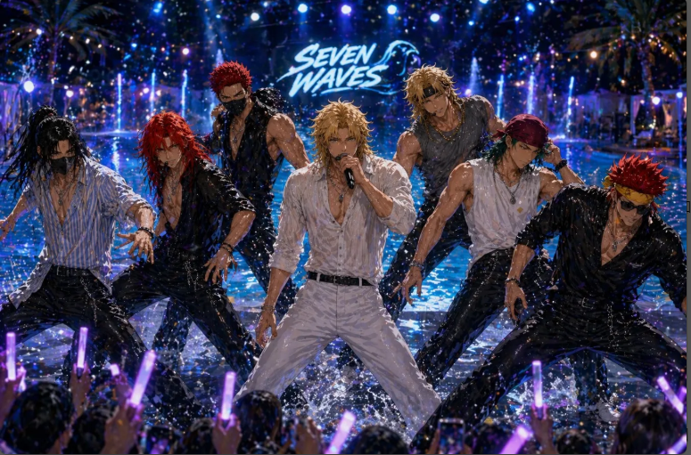
살아있으니까 간다. 因為活著，所以走。
巡迴最後一站。
同一個城市，回到起點。
戶外水舞台，和第一站一樣的場地，但今晚的規模更大——舞台延伸出去，噴泉的水柱更高，燈光更密，台下的人，是第一站的兩倍。
後台，開場前。
七個人換上了巡迴最後一站的特別服裝——黑色泳褲，7W的字樣印在側邊，就這樣，沒有多餘的東西。
朴成俊看到的時候說，「這個造型是誰定的？」
太양，「我們自己。」
朴成俊，「理由？」
철민，「第九天，我們在泳池第一次上台，就是這樣。」
朴成俊沉默了一下，點頭，「好。」
七個人站在後台，台下的聲音已經很大了，隔著牆都能感覺到那個震動。
화성，「二十三站。」
인준，「嗯。」
화성，「全部過了。」
인준，「嗯。」
화성沒有再說，但那兩個字——全部過了——在訓練室的空氣裡停留了一會。
서준把手放在刀柄上，確認了一下，今晚壓軸的時候會用到。
강혁把手腕活動了一圈，放下來。
태양往後伸了個懶腰，啪的一聲，旁邊的우진往旁邊挪了半步。
태양，「最後一站了。」
우진，「嗯。」
태양，「有沒有捨不得？」
우진想了一下，「有。」
태양，「我也是。」他停了一下，「但結束了還有下一個，所以還好。」
우진，「嗯。」
태양，「우진아，你今天有沒有想說什麼？」
우진，「有。」
태양，「什麼？」
우진，「上台再說。」
태양，「……好。」
철민站在角落，沒有跟任何人說話。
他在想第一站的時候——第一個音出去，台下的聲音炸開來，那個感覺。
二十三站，每一站都有那個感覺。
但今晚，是最後一次了。
他把那個「最後一次」在心裡放了一下，然後放開。
不是結束，就是這一段的最後。
철민，「走。」
工作人員，「三十秒。」
七個人對齊，站好。
인준回頭，最後看了六個人一眼。
沒有說話，就是看著。
然後，
「走。」
燈暗。
台下幾萬個螢光棒，紫色，在黑暗裡像一片星海。
牌子在人群裡舉著——
SEVEN WAVES 7W FOREVER 일곱 파도, 영원히 함께 사랑해 7W ♡
噴泉從舞台地板升起來，水柱打在燈光裡，比第一站更高，更密，整個舞台變成一面水牆。
主持人的聲音——
「마지막으로——SEVEN WAVES！」
七個人走出去，走進那片水光裡。
水打在身上，從頭髮往下流，台下的聲音——
比第一站更大。
인준站在中間，麥克風拿到嘴邊，深吸一口氣。
他看著台下那片螢光棒，看著那些牌子——
일곱 파도, 영원히 함께. 七道浪，永遠在一起。
他想起第一天在倉庫，철민踢翻鐵桶，然後說——
我們都是沒有名字的怪，現在才有機會自己取。
現在台下幾萬個人，舉著有他們名字的牌子。
인준，「안녕하세요——」
台下，炸裂。
兩個小時。
最後一站，每一首都像是第一次唱——因為知道這是最後一次在這個巡迴裡唱。
서준的聲音在水裡，比任何一站都更開——
가져온 것 하나로 먼 길을 걸었다.
화성的部分，水打在口罩上，他的聲音還是清楚地出來——
내가 선택한 모습으로 여기 있다.
철민和태양的CHORUS，兩個人的聲音疊在一起，水花在燈光裡炸開——
台下幾萬個人，跟著唱——
강혁在後面，貝斯線穩穩地在底部，像一個不會動的東西，讓其他六個人知道自己在哪裡。
우진的鍵盤旋律，在水聲裡穿出來，清楚的，像他說的那句——
확인하는 방법을 찾았다. 找到了確認自己的方法。
壓軸前，인준把麥克風拿到嘴邊，台下慢慢靜下來。
「오늘，마지막 스테이지입니다.」
今天，是最後一個舞台。
台下有人哭出來的聲音，螢光棒還是舉著。
인준繼續，「이 투어，23번의 스테이지——」
這次巡迴，二十三個舞台——
他停了一下，往後看了六個人。
鏡頭把那個動作放到大螢幕上，台下又是一聲聲音。
인준轉回來，「저희가 여기까지 온 건，여러분 덕분이에요.」
我們能走到這裡，都是因為你們。
他把麥克風往旁邊遞，태양接過去——
태양，「그리고——」他停了一下，這是他說要上台再說的話，「저희가 여기까지 온 건，우리 일곱 명 덕분이기도 해요.」
還有——我們能走到這裡，也是因為我們七個人。
台下，螢光棒全部舉起來，一片紫色。
철민在태양旁邊，低著頭，沒有說話，但肩膀抖了一下。
壓軸，那首歌。
서준把武士刀架在肩上，走到舞台中間。
噴泉升到最高，整個舞台被水包圍，燈光在水裡折射，把所有人都染成藍色和紫色。
七個人，最後一次在這個巡迴裡站上舞台。
音樂進來——
살아있으니까 간다.
台下，幾萬個聲音，跟著——
살아있으니까 간다.
七個人和幾萬個人，同一句話，同一個時刻——
最後一個音，七個人定格。
燈，慢慢暗下去。
水，還在流。
黑暗裡，台下的聲音沒有停。
SEVEN WAVES——SEVEN WAVES——SEVEN WAVES——
七個人站在黑暗的舞台上，水從頭髮滴下來，滴在地板上。
沒有人說話。
台下的聲音，不停。
很久之後，인준開口，聲音很低——
「二十三站，結束了。」
沒有人回應，但都在聽。
인준，「謝謝你們。」
沒有人問謝什麼。
因為都知道。
철민最後說了一句——
「下一個，繼續。」
태양，「嗯。」
서준，「嗯。」
강혁，「嗯。」
화성，「嗯。」
우진，「嗯。」
인준，「嗯。」
台下，還在喊。
일곱 파도, 영원히 함께.
七道浪，永遠在一起。
舞台上的七個人，站在黑暗裡，聽著那個聲音。
七個從遊戲裡出來的小怪。
七個沒有名字、然後自己取了名字的人。
七個學會了活著是什麼感覺的人。
聽著幾萬個人叫他們的名字。
STRAY，第三百六十五天。
살아있으니까 간다 WORLD TOUR，第二十三站，完。
一年。
從倉庫到世界巡迴。
七道浪，還在往前走。
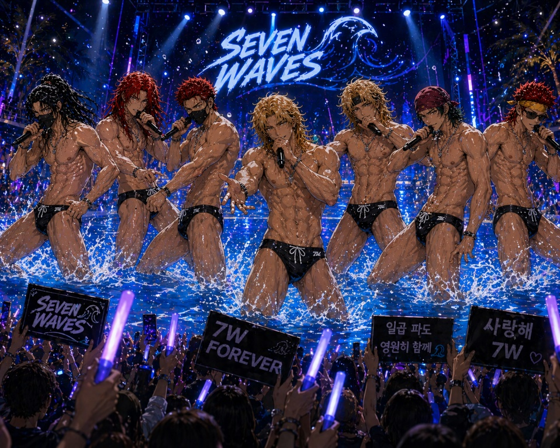
살아있으니까 간다. 因為活著，所以走。
SEVEN WAVES 1ST FANMEET THANK YOU, WAVES
背板上的字，藍色和白色，氣球在兩側，桌子上擺著七個名牌和水瓶。
台下，全是Waves。
牌子在人群裡—— 우리 칠웨이브 최고야 7W FOREVER 사랑해 7W ♡
七個人坐在桌子後面，並排，各自的樣子——
화성戴著口罩，手放在桌上，往台下看。
서준坐在最左邊，往台下揮了揮手，動作不大，但認真的。
철민坐在서준旁邊，手舉起來，五指張開，對著台下——這是他想了很久的動作，他覺得張開的手比握拳更難，但今天他想這樣。
인준坐在中間，兩隻手交疊放在桌上，往台下看，嘴角有那個平常很少出現的弧度。
강혁在인준旁邊，手比了個和平手勢，表情是那種「我沒有很習慣但我在做」的樣子。
태양在강혁旁邊，手也比了個和平手勢，臉上是那種完全習慣的笑。
우진在最右邊，一隻手往台下揮著，另一隻手放在桌上，眼睛在看台下每一個人。
主持人開場，把話筒遞給인준。
인준，「안녕하세요，SEVEN WAVES입니다.」
台下，炸裂。
他等聲音稍微降下來，繼續——
「오늘，처음으로 여러분과 이렇게 가까이 있네요.」
今天，第一次跟大家這麼近。
他往台下看——不是舞台上那種距離，今天是話筒的距離，桌子的距離，能看清楚台下每一張臉的距離。
인준，「……思っていたより，ずっと近い。」
比想像的，近得多。
主持人開始問問題。
第一個問題，「這次巡迴，印象最深的瞬間？」
話筒沿著桌子傳。
서준，「每一站結束，台下的聲音沒有停下來的那個瞬間。」
철민，「第一站。第一個音出去的那一秒。」
인준，「最後一站，台下跟著唱的那一句。」
강혁，「每一站，우진對我說可以繼續的那個眼神。」
旁邊的우진，「我有嗎？」
강혁，「有，你不知道嗎？」
우진，「……不知道。」
강혁，「那以後你知道了。」
台下笑聲。
태양，「我每一站都想多唱一首，但인준每次都叫我下台——」
인준，「因為setlist結束了。」
태양，「所以印象最深的就是인준說'走了'的那個臉——」
인준，「……」
台下又是一片笑聲。
화성是最後一個，話筒到他這裡，他停了幾秒，「每一站，台下有人哭。」
主持人，「那你有什麼感覺？」
화성，「……很重。」
「重是什麼意思？」
화성想了一下，「就是，知道那不是假的。他們的眼淚，不是假的。所以我們做的事，也不是假的。」
台下，有人把螢光棒舉起來，一個接一個，沒有人說什麼，就是舉起來。
第二個環節，粉絲提問。
第一個粉絲，聲音有點抖，「철민씨，你平常看起來很嚴肅，但在台上會有一瞬間很溫柔，那個時候你在想什麼？」
철민拿著話筒，沉默了一下，「哪裡溫柔？」
粉絲，「就是……看台下的時候。」
철민，「……」他把話筒放下一點，想了一會，「在想，他們還在。」
主持人，「他們還在？」
철민，「每一站，台下的人還在，就覺得——」他停了一下，「——沒有白來。」
台下安靜了兩秒，然後螢光棒全部舉起來，聲音爆出去——
철민把話筒放回桌上，往旁邊的서준那側偏了一點，像是要把那個聲音分給他一點。
第二個粉絲，「화성씨，你有沒有想讓大家看到的自己的樣子？」
화성拿著話筒，往台下看，「現在這樣。」
粉絲，「現在是什麼樣子？」
화성，「坐在這裡，跟你們說話的樣子。」他停了一下，「我沒有想讓大家看到的樣子，我只有現在這個樣子。」
主持人，「這樣說，很有화성씨的風格。」
화성，「謝謝。」他把話筒放下，但沒有往旁邊傳，等了兩秒，「……還有一句。」
主持人，「請說。」
화성，「口罩後面，現在在笑。」
台下，整個場館的聲音衝上去，螢光棒亂了——
철민在旁邊，低下頭，肩膀抖了一下。
인준看著화성，第一次，用那個眼神看他——不是確認，是真的看見。
화성把話筒往旁邊傳，繼續看台下，表情沒有人看得到，但眼睛裡有什麼東西在那裡。
第三個粉絲，「인준씨，如果要對剛出道的SEVEN WAVES說一句話，你會說什麼？」
인준拿著話筒，想了一會。
他想起倉庫，想起철민說的那句——既然出來了，就不要回去了。
他開口——
「걱정하지 마.」
不用擔心。
「전부 괜찮아질 거야.」
一切都會好的。
「왜냐면，너희 일곱 명이 함께 있으니까.」
因為，你們七個人在一起。
台下，安靜了兩秒。
然後，整個場館的聲音，沒有停過。
最後的環節，七個人站起來，對著台下說最後一句話。
話筒從서준開始——
서준，「오늘，여기 와줘서 고마워요.」 今天，謝謝你們來。
철민，「다음에도 올 거죠？」 下次也會來吧？ 台下，「네！」 철민，「……그럼 됐어요.」 那就行了。
인준，「WAVES가 있어서，저희가 있어요.」 因為有WAVES，所以有我們。
강혁，「고마워요. 진심으로.」 謝謝。真心的。
태양，「사랑해요——！」 愛你們——！ 他把話筒往旁邊送，旁邊的우진接過去，他繼續揮手，完全停不下來。
우진，「저도요.」 我也是。 就這兩個字，台下又是一聲炸裂。
화성最後，拿著話筒，看著台下——
「……계속 봐요.」
……繼續看著我們。
他把話筒放下，往台下揮了揮手，第一次在粉絲見面會上，主動揮手。
台下，幾乎所有人都在哭。
七個人站起來，對著台下鞠躬。
우리 칠웨이브 최고야. 7W FOREVER. 사랑해 7W.
那些牌子，在螢光棒的藍色光裡搖著。
인준鞠躬的時候，看著台下那片臉，想起第一天在倉庫——
那時候沒有人知道他們。
現在台下幾百個人，舉著有他們名字的牌子，哭著，笑著，喊著他們的名字。
他把這個畫面，記在心裡最穩的那個地方。
見面會結束後，後台。
七個人坐著，沒有說話，喝著水。
一會兒，태양開口，「剛才화성說口罩後面在笑，你真的在笑嗎？」
화성，「嗯。」
태양，「現在呢？」
화성，「也是。」
태양，「好。」他把水瓶蓋上，「那我們都在笑。」
철민，「我沒有。」
태양，「你剛才肩膀抖了。」
철민，「我在抖是因為空調太冷。」
서준，「空調沒有開。」
철민，「……你少說話。」
台下的聲音還隱隱傳進來，Waves還沒有散。
인준站起來，往後台出口走，停在門口，回頭——
「謝謝大家。」
沒有人問謝什麼。
因為都知道。
因為一直都知道。
STRAY，第三百七十天。
SEVEN WAVES 1ST FANMEET，完。
台下的Waves，台上的七個人。
계속 봐요. 繼續看著我們。
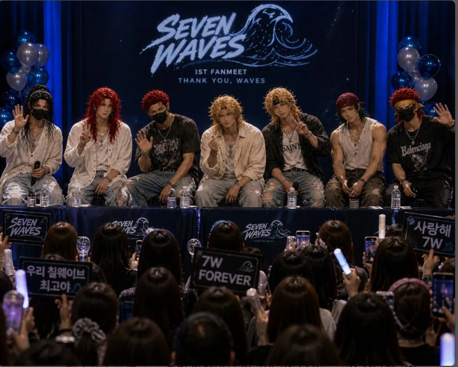
我們，還在這裡。
THE SHOW，採訪區。
七個人並排坐著，主持人坐在對面，手上拿著採訪稿，但大部分時間都沒有看——因為這七個人的答案，很少是預期的那種。
螢幕下方的字幕——
Q. 팬들과 함께 만든 오늘의 1위！소감은？ Q. 和粉絲們一起創造的今日1位！感想是？
主持人把話筒遞向인준。
인준拿著，沉默了一秒，「……실감이 잘 안 나요.」
……還不太有真實感。
主持人，「為什麼？」
인준，「因為，我們做的每一件事，在做之前都覺得不太可能。」他停了一下，「但每次都發生了。所以現在也是——知道這是真的，但還需要時間讓它變成真實感。」
主持人，「那什麼時候會有真實感？」
인준想了一下，「回到宿舍，坐下來，喝水的時候。」
台下笑聲。
인준，「真的，那個時候最有感覺。」
話筒往旁邊——서준。
서준，「저는…오늘 무대에서，한 분 한 분 다 보였어요.」
我……今天在舞台上，一個一個都看到了。
主持人，「一個一個？」
서준，「台下每一個人的臉，」他說，「我記不住，但我都看了。」他停了一下，「讓我覺得——不是在台上表演，是在跟他們說話。」
主持人，「這樣的感覺，是從什麼時候開始的？」
서준，「從第一次確定自己是真實的那天。」
主持人愣了一下，「這句話……可以說得更詳細嗎？」
서준，「……以後有機會再說。」他把話筒往旁邊遞，表情平靜，像是說了一件很普通的事。
철민接過話筒。
主持人，「철민씨，今天1位，你的感想？」
철민，「당연한 거 아닌가요？」
不是理所當然的嗎？
全場安靜了一秒，然後笑聲。
철민，「농담이에요.」
開玩笑的。
他停了一下，「진짜 소감은……」
真正的感想是……
他把話筒拿近了一點，聲音比平常低，「Waves가 있어서，우리가 여기 있는 거예요. 그게 다예요.」
因為有Waves，我們才在這裡。就這樣。
沒有多餘的話，就這一句，但說得很實。
강혁接過話筒，看著主持人，「저는 짧게 할게요.」
我說短一點。
主持人，「請說。」
강혁，「고맙습니다.」
謝謝。
主持人等了一下，「就這樣？」
강혁，「就這樣，但是真的。」
主持人，「……好，謝謝강혁씨的誠實。」
강혁點頭，把話筒往旁邊遞，動作很乾淨。
태양接過話筒，還沒說話，臉上就已經是笑的。
主持人，「태양씨，你的感想一定不短。」
태양，「你怎麼知道？」
主持人，「因為你臉上寫著。」
台下笑聲。
태양，「好，那我說——今天1位，我在台上看到台下有人哭，我就——」他停了一下，「我就很想過去，但我不能，因為還在跳舞。」
主持人，「那下台之後？」
태양，「下台之後我沒有辦法去找那個人了，所以我想說——」他對著鏡頭，「那個今天在台下哭的人，我看到你了。謝謝你來。」
台下安靜了兩秒，然後聲音出來。
태양把話筒遞給旁邊，往鏡頭那邊再揮了揮手。
우진接過話筒，把墨鏡往上推了一下，露出眼睛。
主持人，「우진씨，今天你有沒有特別的瞬間？」
우진，「有。」
主持人，「是什麼？」
우진，「副歌的時候，台下跟著唱。」他停了一下，「那首歌的詞，是我們自己寫的。」
主持人，「嗯。」
우진，「我寫那段詞的時候，沒有想到台下會有人跟著唱，」他說，「所以那個瞬間，我愣了一下。」
主持人，「愣了之後呢？」
우진，「繼續唱。但記住了那個聲音。」
他把話筒往旁邊遞，墨鏡沒有放下來，繼續看著前面。
화성最後接過話筒。
主持人準備問問題，화성先開口了——
「저，먼저 말해도 될까요？」
我，可以先說嗎？
主持人，「當然。」
화성拿著話筒，往台下看了一眼，「오늘 1위，Waves가 만들어준 거잖아요.」
今天1位，是Waves給的。
「그래서，이 말 하고 싶었어요.」
所以，想說這句話。
他停了一下——
「저희가 무대에 서는 건，여러분이 보러 와주기 때문이에요.」
我們站上舞台，是因為你們來看。
「그리고 저희가 계속하는 건——」
而我們繼續下去，是因為——
他停了比平常更長的時間，但沒有人催。
「여러분이 계속 있어주기 때문이에요.」
你們一直在。
台下，螢光棒全部舉起來，沒有人說話，就是舉著。
主持人低頭，清了一下喉嚨，「……화성씨，謝謝你。」
화성把話筒放回桌上，沒有再說話，但口罩後面——
인준看著他，知道那裡有什麼東西在。
主持人最後問了一個問題，對著所有人——
「SEVEN WAVES，接下來想做什麼？」
七個人互看了一眼。
最後태양搶先說，「繼續。」
철민，「就這樣。」
서준，「更好的舞台。」
강혁，「嗯。」
우진，「還有很多想說的話。」
화성，「……계속 봐요.」 繼續看著我們。
인준最後，拿起話筒，看著鏡頭——
「저희，아직 멀었어요.」
我們，還差得遠。
「그러니까，같이 가요.」
所以，一起走。
採訪結束，燈光調暗，工作人員開始撤設備。
七個人站起來，準備離開。
태양走到鏡頭旁邊，對著鏡頭比了個心，轉身追上其他人。
철민看到了，「你幹嘛？」
태양，「打招呼。」
철민，「對著鏡頭打招呼？」
태양，「對著看這個採訪的人打招呼，他們也是Waves。」
철민沉默了一秒，又走回去，對著鏡頭，沉默地揮了一下手，然後繼續走。
태양在旁邊，「你剛才——」
철민，「我在確認鏡頭關掉沒有。」
태양，「……鏡頭還開著。」
철민，「……」
台下笑聲從螢幕後面傳進來。
철민走得更快了。
走廊上，서준在화성旁邊走著。
서준，「今天說了很多。」
화성，「嗯。」
서준，「比平常多。」
화성，「嗯。」
서준，「感覺怎麼樣？」
화성想了一下，「……輕一點。」
서준，「好。」
兩個人繼續走，並排，步伐一樣。
인준走在最後，回頭看了一眼那個採訪區——
背板上，SEVEN WAVES的logo還亮著。
螢幕下方的字幕框還在，空白的。
他想了想，如果要在那個字幕框裡寫一句話——
Q. 팬들과 함께 만든 오늘의 1위！소감은？
他的答案，其實還沒說完。
完整的那句是——
실감은 아직이지만，이 사람들이랑이라면，언제든 실감할 수 있을 것 같아요.
還沒有真實感，但只要和這幾個人在一起，感覺隨時都能有真實感。
他把那句話留在心裡，沒有說出來，轉身，走進走廊。
七個人的背影，在走廊的燈光裡，往前走。
STRAY，第三百八十天。
THE SHOW 採訪，完。
저희，아직 멀었어요. 그러니까，같이 가요.
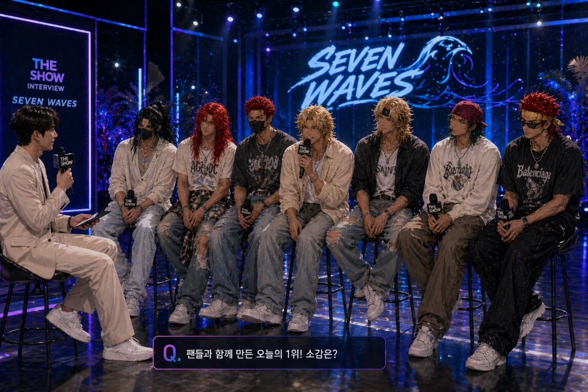
我們，還差得遠。 所以，一起走。
KBS 2，음악뱅크，직방.
畫面左上角——LIVE 뮤직뱅크 SEVEN WAVES 세븐 웨이브스
右下角——1 SEVEN WAVES 세븐 웨이브스
螢幕左下，歌詞字幕——
[All] 너라는 파도에 매일 더 깊이 빠져
被你這道浪 每天陷得更深
這首歌，和上一首不一樣。
不是살아있으니까 간다那種從地底頂出來的力道——這首是往裡走的，是暖的，是那種你以為自己站穩了，但回頭才發現早就陷進去了的感覺。
朴製作說，「你們需要一首這樣的歌。」
철민，「什麼樣的？」
「讓人覺得，被接住的那種。」
沒有人說話，但所有人都記住了那句話。
舞台的設計是暖色的——米白、奶油黃、淺金，不是他們平常的黑色和水藍，是那種讓人想靠近的顏色。
七個人全部穿著米白色針織外套，裡面是白色，腰帶，髮型比平常更自然，更散——
화성今天沒有戴口罩。
沒有人事先說，化妝師問他的時候，他沉默了幾秒，然後說，「今天不戴。」
化妝師，「確定嗎？」
화성，「確定。」
化妝師幫他做了妝，沒有說別的。
其他六個人知道這件事的時候，沒有人大驚小怪，只有태양說了一句，「요，」然後繼續整理自己的耳機。
철민走過去，在화성旁邊站了一下，沒有說話，就是站著。
화성，「幹嘛？」
철민，「沒事，就是站著。」
화성，「……嗯。」
철민站了幾秒，拍了拍화성的肩膀，走開了。
開場。
七個人走上舞台，燈光打下來，暖黃色，把米白的衣服染得更柔和。
인준走在中間，走到定位，蹲下來，一隻手往前伸出去——
往台下。
不是抓的手勢，是那種，「過來」的樣子。
前奏結束，第一句進來——
서준的聲音，低的，穩的，像地基——
처음엔 몰랐어，네가 이렇게 될 줄 一開始不知道，你會變成這樣
他坐在台上，往前傾，眼神直接對著鏡頭——
不是서준平常的那種角度，是那種，你覺得他在看你，只看你的那種。
철민的部分進來——
나도 모르게 네 쪽으로 걷고 있었어 不知不覺，我已經在往你那裡走了
他把麥克風拿近，往台下看，今天沒有口罩——
那個臉，台下的Waves第一次這樣清楚地看到。
철민沒有笑，就是唱著，眼神是那種認真得讓人想看住的樣子——
台下的聲音，比預期的更大。
副歌，全員——
[All] 너라는 파도에 매일 더 깊이 빠져
七個人，各自的位置，動作比平常更慢，更近——
인준把手往台下伸出去，這次比前奏更遠，像是真的要觸碰到什麼。
화성在他旁邊——
今天沒有口罩的화성，第一次讓台下看清楚他唱歌時候的表情——
不是複雜的表情，就是那種，在唱自己寫的詞的樣子。
流れるままに、芯を持って.
台下，有人哭出來了，聲音被音樂蓋住，但眼淚是真的。
강혁的bridge——
흔들려도 괜찮아，네가 있으면 搖晃也沒關係，只要你在
他坐在台上，往台下看，那個平常很少出現的表情——
不是嚴肅，不是警戒，就是，在說這句話的강혁。
台下有人把螢光棒捂在胸口，沒有揮，就是放在那裡。
우진的部分——
내가 진짜인 건，네 눈 때문인지도 몰라 我是真實的，也許是因為你的眼睛
他唱這句的時候，把手放在自己胸口，很輕，像是在確認什麼——
台下有人認出那句詞，是우진自己寫的。
那句話，他第一次說，是在很久以前——
確認自己是真實的方法。
태양把麥克風舉起來，對著台下——
같이 빠져줘서 고마워 謝謝你也陷進來了
他這次沒有笑，眼睛是那種亮的，但不是興奮的亮，是那種，很認真在說一件事的亮——
台下跟著唱，很多人都跟著唱——
태양聽到那個聲音，嘴角動了一下，最後還是笑了，但是那種收住了眼淚的笑。
最後一段，全員坐下來。
七個人，在舞台上，燈光打著，暖色的光——
인준在中間，手伸向台下，往前再多一點，像是要把台下的人都接進來——
너라는 파도에 매일 더 깊이 빠져
七個聲音，最後一句，慢慢收——
燈光慢慢暗下去，只剩中間一束光，打在인준伸出去的那隻手上。
靜了一秒。
台下，螢光棒全部舉起來，沒有放下來——
畫面定格在那個瞬間——
七個人，米白色針織，暖黃燈光，인준的手伸向台下。
左下角歌詞字幕還在——
너라는 파도에 매일 더 깊이 빠져
右下角——
1 SEVEN WAVES
後台，燈還沒全部亮起來。
화성摸了摸自己的臉，口罩不在那裡，他的手停了一下。
인준在旁邊，「怎麼了？」
화성，「……習慣了，」他說，「沒有的感覺。」
인준，「好習慣，還是不好？」
화성想了一下，「好。」
인준，「好。」
화성，「……但下次可能還是會戴。」
인준，「沒關係，你決定。」
화성，「嗯。」
他把手放下來，看著舞台方向，台下的聲音還傳進來——
너라는 파도에.
他在心裡把那句詞再過了一遍。
被你這道浪，每天陷得更深。
他想，Waves陷進SEVEN WAVES的浪裡，但他們七個，也早就陷進Waves裡了。
這件事，是相互的。
철민走過來，把米白色外套往화성肩膀上推了一下，已經穿著，就是整理了一下。
「冷不冷？」철민說，像是漫不經心。
화성，「不冷。」
철민，「哦。」他繼續站在那裡，沒有走。
화성，「你還要站多久？」
철민，「我在等태양，他去拿東西。」
화성，「……嗯。」
兩個人就這樣站著，台下的聲音還在，暖色的燈光從舞台那邊透進來。
태양跑回來，手上拿著七杯熱飲，「大家喝一下——」
인준，「你去哪裡找到的？」
태양，「工作人員那裡要的，他們很好——」
他把飲料一杯一杯發出去，最後剩一杯，他研究了一下，發現沒有多了——
「我忘記算我自己的，」他說。
강혁已經把自己那杯往태양方向推了一下，「拿去。」
태양，「你不喝嗎？」
강혁，「我還好。」
태양，「謝謝강혁！」他把那杯拿起來，喝了一口，「好喝。」
강혁，「嗯。」
서준在旁邊，把自己那杯分了一半給강혁，沒有說話。
강혁看了서준一眼，沒有推回去，就接著了。
七個人，後台，暖色的燈光，手裡各自拿著熱飲。
台下的聲音還沒有完全停——
너라는 파도에.
화성低著頭喝飲料，看著手裡的杯子。
然後抬起頭，往旁邊六個人看了一眼。
沒有說話。
但他把今天——
沒有口罩，台下的眼淚，철민站在旁邊，強혁把飲料讓出去，서준分一半——
把今天，記在心裡最穩的那個地方。
STRAY，第四百天。
뮤직뱅크，新歌打歌，1位。
너라는 파도에，매일 더 깊이 빠져. 被你這道浪，每天陷得更深。
七道浪，和Waves，相互陷進去。
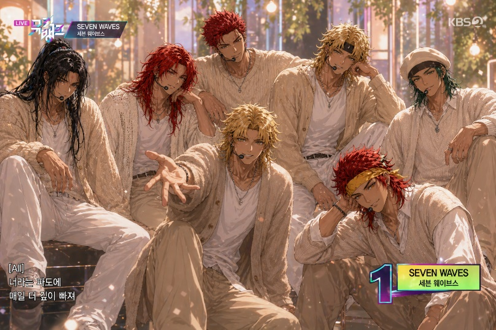
繼續陷。
打歌期結束後的第三天。
朴成俊說，「這週沒有行程，休息。」
沒有人說話。
朴成俊，「聽到嗎？休息。」
태양，「真的嗎？」
朴成俊，「真的。」
태양立刻轉向인준，「游泳池。」
인준，「嗯。」
和第九天不一樣的是——
這次不需要去找철민「認識的人」借場地，不需要研究怎麼取得泳褲，不需要七個人擠在倉庫裡等天亮。
STAR ROAD的附屬飯店，頂樓，私人泳池，藍色的水，棕櫚樹，陽光，沒有別人。
朴成俊訂的，說，「你們上次說泳池，我記著了。」
下午兩點，七個人出現在泳池邊。
各自的樣子——
철민站在泳池邊，口罩戴著，黑色泳褲，手放在腰上，往水裡看，「水很清。」
서준站在철민旁邊，紅色長髮散著，看著水面，沒有說話，但沒有往後退。
서준旁邊，화성蹲在泳池邊緣，口罩戴著，手指碰了碰水面，確認溫度。
강혁站在後面，藍色泳褲，手放在腰上，往遠處的棕櫚樹看，陽光打在臉上，眼睛微微瞇著。
인준浮在水裡，手往後撐著地，兩手放在腦後，往天空看——完全沒有緊繃，就是躺著，讓水托著。
태양坐在水裡，泳圈掛在腰上，手撐著地，往旁邊的우진看，「你真的不下來？」
우진坐在泳池邊，腳泡在水裡，「我在這裡就好。」
태양，「上次你也這樣——」
우진，「上次也很好。」
태양，「……好吧。」
철민最後把口罩拿下來，放在旁邊的毛巾上，走到泳池邊，跳進去。
水花很大，濺到화성，화성往旁邊躲了一下。
철민浮起來，「水不冷。」
화성，「我知道，我剛才摸過了。」
철민，「那你下來啊。」
화성看了看水，然後慢慢走下台階，進去，站在齊腰深的地方，站著。
철민，「這樣也算下來了。」
화성，「嗯。」
강혁最後一個進水，走到台階，慢慢走下去，不說話，就是下去了，然後在水裡站著，把手泡進去。
陽光打在水面上，碎成很多光點，打在강혁臉上，他閉了一下眼睛。
太양在旁邊游過來，「강혁，教我游泳。」
강혁，「你不是說你會？」
태양，「我說我會浮，不一樣。」
강혁，「……那你浮。」
태양立刻往後倒，泳圈托著，就這樣浮著，「你看，我會浮。」
강혁，「嗯。」
인준還是躺在水裡，手撐著後腦，看天空。
서준游過來，在他旁邊，兩個人並排，都看著天空。
서준，「你在想什麼？」
인준，「在想第九天。」
서준，「哪個第九天？」
인준，「第一次來泳池那天。」
서준想了一下，「那時候還沒有STRAY，沒有SEVEN WAVES，沒有任何東西。」
인준，「嗯。」
서준，「現在不一樣了。」
인준，「嗯。」
服준，「感覺怎麼樣？」
인준沉默了一會，「……重一點。但好的重。」
서준，「嗯。」
兩個人繼續看天空，水托著他們，陽光很烈，但風是涼的。
우진坐在池邊，腳在水裡晃著，看著池裡六個人。
태양在浮，강혁在旁邊站著監督，철민在游，화성在齊腰深的地方站著，인준和서준在看天空。
他把腳晃了一下，水花濺出去一點點。
這個畫面——
他在心裡把它存下來。
不用相機，不用任何東西，就是存在記憶裡——
七個人，泳池，陽光，棕櫚樹，藍色的水。
第一次是第九天，今天是第四百零幾天。
中間那些日子，塞滿了很多東西。
但這個畫面——開始和現在——
是一樣的。
只是現在，比那時候，多了很多東西在身上。
太양游到우진旁邊，仰起頭，「우진，你真的不下來？」
우진，「我在看你們。」
태양，「看我們做什麼？」
우진，「記住。」
태양，「記住什麼？」
우진，「這個樣子。」
태양想了一下，「那我幫你也記一下。」
他把우진拉進水裡——
우진，「——」
水花很大，濺出去很遠。
철민，「你幹嘛。」
태양，「讓우진也進來。」
우진浮起來，頭髮濕透了，往太양看——
태양，「你也在這個畫面裡了。」
우진，「……」他把水從臉上撥開，「謝謝。」
태양，「不客氣。」
강혁，「태양。」
태양，「幹嘛？」
강혁，「下次再這樣，我把你壓進去。」
태양，「……好的。」
傍晚，陽光開始斜了，水面的光變成金色。
七個人，有人還在水裡，有人已經坐在池邊，毛巾搭著，喝著水。
沒有人說要走。
철민坐在台階上，水到腰，往後靠著，仰頭，「你們有沒有想過，我們是怎麼走到這裡的？」
沒有人立刻回答。
태양，「一步一步？」
철민，「廢話。」
태양，「那你問什麼？」
철민，「我是說——從那個倉庫，到現在這裡——」他往四周看了一眼，棕櫚樹，泳池，飯店，陽光，「——跨度很大。」
서준，「嗯。」
화성，「嗯。」
강혁，「嗯。」
우진，「嗯。」
태양，「嗯。」
인준，「嗯。」
철민，「……所以我說，有沒有想過。」
인준，「想過。」
「結論？」
인준，「沒有結論，就是走到這裡了。」
철민，「這樣也行。」
金色的陽光，打在七個人身上。
水面還在動，棕櫚樹的影子在水裡搖著。
沒有人說話，但都在——
在同一個泳池裡，在同一個陽光下，在同一個故事裡。
인준把手從水裡舉起來，看著陽光透過手指的縫隙——
第九天的時候，他第一次知道陽光曬在皮膚上是暖的，不是傷害值。
今天，還是暖的。
但比那時候更熟悉了。
他把手放回水裡，閉上眼睛。
STRAY，第四百零五天。
打歌期結束，休息。
七個人，回到泳池。
和第九天一樣的地方，不一樣的我們。
但水，還是藍的。 陽光，還是暖的。
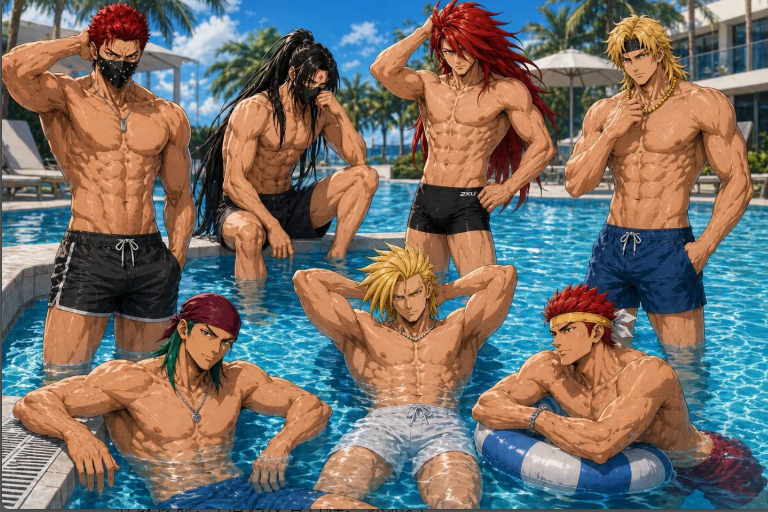
這樣就夠了。
살아있으니까 간다
因為活著，所以走。
搬家的日期是打歌期結束後的第十天。
朴成俊說，「公司幫你們找了新地方，比之前的宿舍大，位置也好。」
然後他把地址給了인준，走了。
인준看著那張紙，「新宿。」
태양，「在哪裡？」
인준，「日本。」
全場安靜了兩秒。
태양，「……很遠。」
인준，「不是日本那個新宿，是這個城市的新宿區。」
태양，「哦。」他想了一下，「我還以為要出國了。」
철민，「你腦子裡裝的是什麼。」
搬家當天，早上九點，一輛搬家貨車停在舊宿舍門口。
七個人站在車旁邊，看著那一車的箱子。
강혁，「這些都是我們的東西？」
태양數了數，「BOOKS、KITCHEN、CLOTHES、ROOM STUFF、BEDDING、ELECTRONICS、DECOR、HEAVY HANDLE WITH CARE、FRAGILE……」
철민，「FRAGILE是誰的？」
沉默。
모두가 서준을 바라봤다。
서준，「武士刀要保護。」
철민，「……你用一整個箱子裝武士刀？」
서준，「裡面還有其他東西。」
철민，「什麼其他東西？」
서준，「書。」
태양，「你什麼時候開始看書了？」
서준，「出來之後。」
태양，「看什麼書？」
서준，「劍道的書，還有——」他停了一下，「人類學。」
全場再次安靜。
인준，「人類學。」
서준，「我想了解這個世界的人是怎麼運作的。」
철민，「……行，有道理。」
搬運開始。
철민和서준負責重物，兩個人不說話，就是把最重的幾個箱子搬上推車。HEAVY HANDLE WITH CARE那箱，철민一個人抱著，表情完全沒變。
화성抱著一個標著KITCHEN的箱子，還有另一隻手——抱著一盆植物。
태양發現了，「화성，那個植物是哪裡來的？」
화성，「買的。」
태양，「什麼時候買的？」
화성，「昨天。」
태양，「為什麼買植物？」
화성，「新家要有活的東西。」
태양看了看那盆植物，又看了看화성，沒有再問。
인준推著手推車，上面疊著CLOTHES和ROOM STUFF，穩穩地往門口走。
강혁在旁邊，抱著BEDDING，走路很穩，像平常一樣。
兩個人並排，走了一段，沒有說話。
강혁，「搬新地方，感覺怎麼樣？」
인준，「還好。地方換了，人沒換。」
강혁，「嗯。」
인준，「你呢？」
강혁想了一下，「期待。」
인준，「哪裡期待？」
강혁，「新的房間，新的格局，看看這次우진又會把鍵盤放在哪裡。」
인준，「他上次放在床邊。」
강혁，「嗯，這次不知道。」
兩個人繼續走，步伐一致。
우진蹲在一個DECOR的箱子旁邊，拿著膠帶槍，認真地重新把一個角落補了膠帶。
태양走過來，「這箱子不是已經封好了嗎？」
우진，「這個角落有點開，再貼一下。」
태양蹲下來看，「DECOR是你的？」
우진，「一部分。」
태양，「裡面裝什麼？」
우진，「燈。還有那個——」他想了一下，「從第九天那個舞台帶回來的東西。」
태양，「你帶了什麼回來？」
우진，「螢光棒。那根。」
태양愣了一秒，「就是插在門口花盆的那根？」
우진，「嗯，後來我拿回來了。」
태양，「它不是沒電了嗎？」
우진，「沒電了，但還是那根。」
태양看著우진認真貼膠帶的樣子，沉默了一會。
然後他去把自己的滑板和2XU球包拿起來，「那我的東西也自己搬。」
旁邊放著一塊告示牌，手寫的：
ROOM 201 The Dream Team ✓ Bed ✓ Desk ✓ Chair ✓ Books ✓ Fridge ✓ Good Vibes
태양看到最後那行，「Good Vibes是誰寫的？」
沒有人承認。
태양，「철민？」
철민，「不是我。」
태양，「강혁？」
강혁，「不是。」
태양，「인준？」
인준，「不是。」
태양看向서준、화성、우진。
서준，「不是我。」
우진，「不是。」
화성沉默了一秒。
태양，「화성——」
화성，「我只是覺得，新家應該有好的氛圍。」
태양立刻笑了，大聲的，「화성你寫的！」
화성，「寫又怎樣。」
철민在旁邊，低頭，嘴角動了一下，沒有說話。
서준，「寫得對。」
화성，「……謝謝。」
搬運到一半，貨車後面還有幾箱。
태양坐在一個箱子上吃著便利商店的飯糰，「這個宿舍名字叫什麼？」
인준，「新宿DORMITORY。」
태양，「下面有寫——New Life, New Beginning。」
他唸了一遍，嚼著飯糰，「這句話，很適合我們。」
철민，「怎麼說？」
태양，「我們從遊戲裡出來，就是New Life。現在搬新宿舍，就是New Beginning。」
철민，「你把什麼都想得很簡單。」
태양，「不是簡單，是準確。」
철민，「……」他把箱子放到推車上，「行，算你說得對。」
태양把飯糰最後一口吃完，站起來，「走了，繼續搬。」
下午兩點，最後一箱搬進去。
七個人站在新宿舍的大廳，看著滿地的箱子，大家各自喘著氣。
화성把那盆植物放在窗邊，往後退一步，研究了一下位置，往左移了一點，確認，點頭。
서준把FRAGILE那箱放到自己房間角落，輕輕放下，像是放一件很重要的東西。
철민把最後一個箱子放下，伸了個懶腰，「搬完了。」
태양，「還沒拆箱。」
철민，「那是第二步。現在先說搬完了。」
태양，「好，搬完了。」
강혁已經坐在地板上了，背靠著牆，腿伸直，看著天花板。
우진站在窗邊，看著窗外的新宿，陽光從玻璃打進來，把地板切成一塊一塊的光和影——
和舊宿舍的窗戶一樣的光，但是新的房間。
인준站在大廳中間，看著滿地的箱子，看著七個散落在各處的人。
他想起第一天在倉庫——什麼都沒有的七個人。
現在，一箱一箱的東西，BOOKS、KITCHEN、CLOTHES、ROOM STUFF、BEDDING、ELECTRONICS、DECOR——
每一箱，都是他們在這個世界累積的東西。
每一樣東西，都是真實存在過的證明。
태양，「今天晚餐吃什麼？」
철민，「廚房還沒收，什麼都沒有。」
태양，「叫外賣。」
철민，「行。」
서준，「要什麼？」
태양，「大家投票——」
강혁，「炸雞。」
태양，「강혁說炸雞，贊成的——」
인준，「好。」
우진，「好。」
서준，「好。」
화성，「嗯。」
철민，「行。」
태양，「全票通過！我來叫——」他拿出手機，「對了，我們現在在哪個地址？」
인준把那張紙遞給他。
태양，「謝謝。」他低頭開始輸入，「新家的第一頓，炸雞，完美。」
窗邊，화성的那盆植物，在午後的陽光裡，葉子是綠色的，很安靜地在那裡。
告示牌還放在角落，等著掛到牆上：
ROOM 201 The Dream Team ✓ Good Vibes
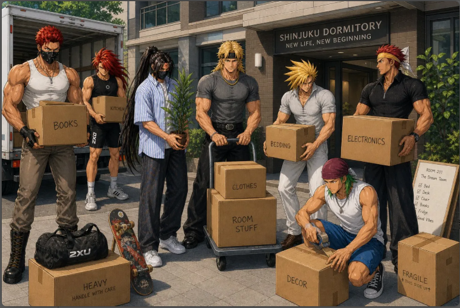
STRAY，第四百一十五天。
新宿DORMITORY，搬入完成。
New Life, New Beginning。
七個人，一箱一箱，把在這個世界累積的東西，搬進了新的地方。
這裡，是他們的家。
搬進新宿舍的第二天。
箱子還沒全部拆完，客廳還有幾個DECOR和BOOKS堆在角落，화성的植物已經找到了永久位置，告示牌掛上了牆。
태양第一個出門探索附近環境，十五分鐘後跑回來——
「這裡有泳池。」
沒有人立刻回應。
태양，「你們聽到了嗎，這裡有泳池，就在宿舍旁邊，POOL AREA，有躺椅，有欄杆，有藍色的水——」
철민，「幾樓？」
태양，「一樓，出門右轉，走三十秒。」
철민放下手上的書，站起來。
태양，「你要去？」
철민，「我去看看。」
不到二十分鐘，七個人全部出現在泳池旁邊。
牆上的標示——POOL AREA — RELAX TIME
背景是新宿DORMITORY的正門，NEW LIFE, NEW BEGINNING的字在陽光下很清楚。
강혁看了那個標示一眼，「Relax Time。」
태양，「對，就是放鬆時間。」
강혁，「嗯。」他把毛巾往肩上搭，往泳池走。
七個人都穿著同款的黑色泳褲——7wave的字樣印在腰帶旁邊，是上個月品牌合作送的樣品，每人一件，這是第一次全員同時穿出來。
인준站在池邊，往下看著水，「這個比飯店那個小。」
태양，「但是我們的。」
인준，「嗯。」
태양，「每天都可以來。」
인준，「嗯。」
태양，「想來就來，不用預約，不用跟朴代表說——」
인준，「嗯。」
태양，「你是不是只會說嗯？」
인준，「……嗯。」
태양，「인준！」
인준終於轉過頭，嘴角有那個很小的弧度，「我在聽，我只是也在想。」
태양，「想什麼？」
인준，「在想，這裡以後會是我們的日常。」
태양，「這樣不好嗎？」
인준，「很好。」
철민從水裡走出來，甩了甩頭，水花往旁邊濺，濺到서준，서준往旁邊退了一步。
철민，「你站那麼近。」
서준，「你走路沒有方向感。」
철민，「我有。」
서준，「嗯。」
철민看了서준一眼，沒有再說，把口罩往上確認了一下，回到水裡。
서준在池邊坐下來，把腳泡進去，紅色長髮垂著，陽光打在頭髮上，水面的光反上來。
他低頭看著自己在水裡的倒影。
在遊戲裡，他沒有倒影。
每次看到自己的倒影，他還是會停一下——不是因為陌生，是因為已經開始習慣，但習慣本身還是值得停下來確認一次。
서준旁邊，화성坐著，腳也泡在水裡。
他手裡拿著一杯飲料——檸檬水，冰的，是剛才路過宿舍大廳自動販賣機買的。
태양發現了，「화성，你喝什麼？」
화성，「檸檬水。」
태양，「好喝嗎？」
화성，「還行。」
태양，「給我喝一口。」
화성把杯子往태양方向伸了一下。
태양喝了一口，「好喝欸，比還行好喝。」
화성，「我說的還行，是真的還行。」
태양，「那我說的好喝，是真的好喝，我們對同一杯飲料的感受不一樣。」
화성想了一下，「……嗯，各自的感受。」
태양，「對。」他把杯子還給화성，「謝謝。」
화성，「嗯。」
他繼續喝，陽光很烈，但有風，涼的。
강혁把手臂舉起來，往後伸展了一下，毛巾掛在肩上——他今天難得沒有先跳進水裡，就是站在池邊，讓陽光曬著。
우진坐在躺椅上，瓶裝水放在旁邊，往天空看。
태양注意到了，「우진，你不下水？」
우진，「等等。」
태양，「在等什麼？」
우진，「在想一件事。」
태양，「什麼事？」
우진，「我們搬來這裡，以後每天都可以在這個泳池，」他停了一下，「以前在倉庫的時候，我們沒有想過會有自己的泳池。」
태양，「那時候連食物都要想辦法——」
우진，「對。所以我想確認一下這個感覺。」
태양，「什麼感覺？」
우진，「有一個可以一直回來的地方的感覺。」
태양沉默了兩秒，然後坐到우진旁邊的躺椅上，「……確認完了嗎？」
우진，「差不多了。」
태양，「那一起下水。」
우진，「好。」
인준最後一個進水。
他走下台階，水沒到腰，他停在那裡，把手放進水裡，感受那個溫度。
第三次泳池了——第九天、第四百零五天、今天。
每一次都是不一樣的狀態。
第九天，什麼都沒有，第一次知道陽光是暖的。
第四百零五天，巡迴結束後，帶著四百天累積的重量回來。
今天——
他環顧四周，水裡有철민在游，서준坐在池邊泡著腳，화성喝著檸檬水，태양剛把우진拉進水裡，강혁終於把毛巾放下來，走向台階——
今天，這個泳池是他們家門口的。
不是借來的，不是偶爾來的，是每天想來就可以來的。
인준把手從水裡收回來，往後靠，讓水托著他，仰頭，看天空。
藍色，有幾朵雲，陽光很烈。
New Life, New Beginning.
他在心裡把那句話過了一遍，沒有覺得誇大——
就是這樣，新的生活，新的開始。
每一天都是。
水聲，陽光，風，偶爾태양的笑聲，偶爾철민的「你少說話」，偶爾서준和화성之間的安靜——
강혁走下台階，進到水裡，水沒到胸口，他站在那裡，往四周看了一眼。
七個人，全在水裡了。
他把手臂放進水裡，感受那個浮力，閉上眼睛。
水聲，陽光，旁邊六個人的存在。
夠了。
태양把手搭在水面上，讓水從指縫流過去，「我決定了一件事。」
철민，「什麼事？」
태양，「以後每週至少來這裡一次。」
철민，「你每次說'至少一次'，最後都變成每天。」
태양，「那就每天。」
철민，「……行。」
서준，「嗯。」
화성，「嗯。」
강혁，「好。」
우진，「好。」
인준，「嗯。」
태양，「全票通過！」
철민，「你少廢話，游泳。」
태양，「好！」他往철민方向潑了一把水，철민在水裡立刻還擊——
水花往四周濺出去，서준側身躲了一下，沒躲掉，화성的檸檬水杯子被水花打到，差點倒了，他迅速扶住，然後繼續喝，表情沒有變。
우진在旁邊，距離剛好在水花範圍外，沒有被濺到，他看著這幾個人，嘴角有那個很小的弧度。
인준在後面，被水花打到了臉，沒有躲，就是任它打，繼續看天空。
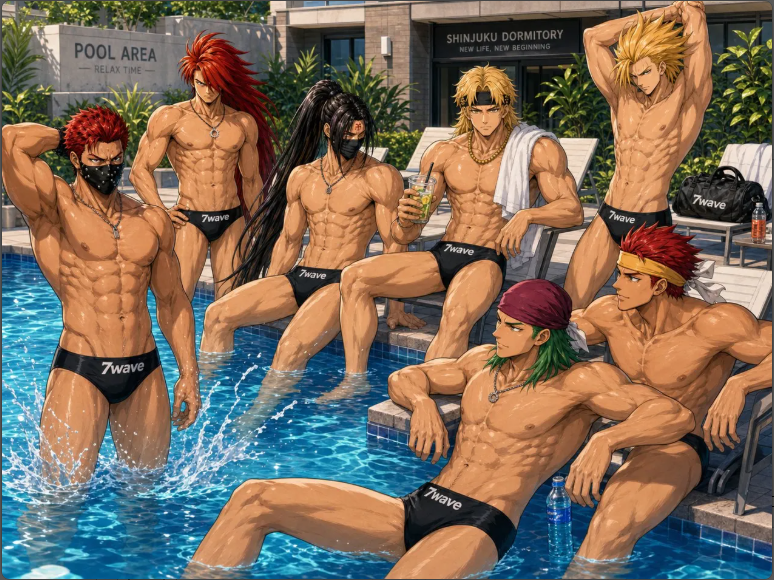
STRAY，第四百一十六天。
新宿DORMITORY，POOL AREA。
七個人，發現了家門口的泳池。
以後，每天都可以回來。
New Life, New Beginning.
每一天，都是。
搬來新宿舍的第三天。
還是那個泳池，還是下午，還是藍色的水和陽光。
不同的是——不知道是誰，把樂器搬出來了。
起因是우진。
他昨天拆箱的時候，把KORG電子琴架在房間窗邊，測試了一下，確認沒有在搬運過程中損壞，然後——想著反正泳池就在旁邊，就把琴架搬出來了。
就這樣。
沒有特別理由，就是想在外面彈。
화성看到우진把琴架搬出來，沉默了一下，回房間，把木吉他拿出來了。
태양看到화성拿吉他，「你什麼時候有木吉他？」
화성，「一直有。」
태양，「你從來沒彈過——」
화성，「我在房間裡彈。」
태양，「我從來沒聽到——」
화성，「我彈得很小聲。」
태양，「……那今天要大聲嗎？」
화성，「看情況。」
然後강혁看到화성拿了吉他，回去拿了貝斯。
서준看到강혁拿貝斯，回去拿了電吉他。
우진，「서준你有電吉他？」
서준，「在箱子裡，今天才拆出來。」
우진，「什麼時候買的？」
서준，「巡迴的時候，在其中一站。」
우진，「你一個人去買的？」
서준，「嗯，강혁幫我挑的。」
우진看向강혁，강혁，「他說想要一把，我比較懂就一起去了。」
태양，「你們去買吉他沒有帶我——」
강혁，「你會吵。」
태양，「我只是會有很多意見——」
강혁，「嗯。」
철민看著這幾個人，又看看那些樂器，回房間，出來的時候手上拿著麥克風。
不是舞台用的，是一個手持的練習用麥克風，連著一個小音箱，平常在房間練的。
태양，「철민你也——」
철민，「吵什麼吵，我只是拿麥克風。」
태양，「那我！」他跑回去，出來的時候抱著一對邦哥鼓，笑得很開心，「我一直想學，之前買了但沒有時間練——」
철민，「你現在要在泳池練？」
태양，「有什麼問題嗎？」
철민，「……沒有。」
태양把邦哥鼓放在池邊，坐下來，拍了兩下，聲音很清，在泳池邊迴響著。
인준是最後一個。
他站在泳池邊，看著這六個人——우진在架琴，화성坐在躺椅上調琴，강혁在試貝斯弦，서준插上擴音器，철민在測試麥克風音量，태양在研究邦哥鼓的打法——
인준回房間，出來的時候，手上拿著鈴鼓。
태양，「인준？」
인준，「我不太會其他樂器。」
태양，「鈴鼓也算。」
인준，「嗯。」他走到池邊站著，把鈴鼓拿在手上，搖了一下，聲音很輕。
태양，「！」他把邦哥鼓敲了一下，「那我們開始？」
沒有人說要演什麼，也沒有人說要練什麼。
우진開始彈——不是任何一首特定的歌，就是一個和弦進行，慢的，像是在試水溫。
화성的木吉他跟進來，比우진的琴聲暖，像陽光的質感。
강혁的貝斯進來，低，穩，把整個聲音托在底部。
서준的電吉他在上面，偶爾一個音，像是在問問題。
태양的邦哥鼓，找到節拍，敲進去，不是很準，但是很真實。
철민拿著麥克風，站在水邊，沒有唱詞，就是跟著那個和弦哼了幾個音——低的，從喉嚨出來的，像是在說話。
인준搖著鈴鼓，跟著태양的節拍，很輕，像是遠處的回音。
泳池裡，水面在風裡輕輕動著，把陽光切成碎片。
七個聲音，沒有排練，沒有指令，就是各自出去，然後疊在一起。
不是很完整的音樂，但是真實的聲音。
태양敲著邦哥鼓，歪頭看著화성，「화성，你木吉他彈很久了嗎？」
화성沒有停，「還好。」
태양，「聽起來很好聽。」
화성，「謝謝。」
태양，「你在房間都彈什麼？」
화성想了一下，「沒有特別的歌，就是彈。」
태양，「就像現在這樣？」
화성，「嗯。」
태양，「那你一個人的時候，這個聲音陪著你。」
화성的手指在弦上停了一下，然後繼續，「……嗯。」
서준的電吉他找到一個音，反覆彈了幾次，강혁的貝斯跟上去，兩個人對上了一個節拍，沒有說話，就是繼續。
우진在旁邊看著兩個人，把自己的和弦進行調整了一下，讓出空間給서준和강혁的對話。
철민注意到了，「우진，你讓位置給他們？」
우진，「嗯，他們在說話。」
철민，「吉他在說話？」
우진，「你聽不出來嗎？」
철민，「……我只聽得出來貝斯和吉他在一起聽起來不錯。」
우진，「那就夠了。」
철민把麥克風拿近，跟著那個節拍哼進去，這次聲音大了一點，從水面上飄出去，飄到池邊的植物那裡，又飄回來。
POOL AREA — RELAX TIME。
沒有觀眾，沒有舞台，沒有燈光，沒有排練。
就是七個人，在家門口的泳池邊，拿著各自的樂器，彈著，敲著，哼著。
태양突然說，「我們要不要錄下來？」
철민，「錄來幹嘛？」
태양，「記念。」
철민，「用腦子記。」
태양，「腦子會忘。」
철민，「……」他沉默了幾秒，「拿手機自己錄。」
태양，「手機在房間——」
철민，「那就算了。」
태양，「但是——」
인준，「不用錄。」
태양，「為什麼？」
인준，「因為這種事情以後還會再有，」他搖了一下鈴鼓，「泳池在這裡，樂器在這裡，我們在這裡。不是最後一次。」
태양，「……嗯，說得對。」
他把邦哥鼓敲了兩下，繼續。
聲音一直在，水聲也一直在。
偶爾有風過來，把吉他的聲音吹遠一點，吹到宿舍的玻璃上，又反彈回來。
화성的木吉他和서준的電吉他，一個暖一個冷，放在一起的時候有一種很奇怪的平衡——
인준站在水邊，鈴鼓輕輕搖著，聽著這七個聲音疊在一起。
他想起第一次在泳池的舞台上，朴成俊說你們有沒有興趣上台——那時候他們沒有想到自己會唱歌，沒有想到那些遊戲裡從沒被呼叫的技能數據，有一天會在一個真實的舞台上被使用。
現在也是——
沒有人想到搬家第三天，會在泳池邊自己組一個即興樂團。
但是就這樣發生了。
인준搖著鈴鼓，嘴角有那個很小的弧度。
태양在打邦哥鼓，打著打著，開始跟著節拍唱起來，不是歌詞，就是哼，但聲音越來越大，越來越有形狀——
철민在旁邊，接上去，兩個人的聲音疊在一起，就像在錄音室那次，就像在每一個舞台上。
但比那些都更隨便。
也比那些都更放鬆。
不知道過了多久，태양把邦哥鼓敲了最後一下，抬頭——
「我餓了。」
철민，「剛才還在彈。」
태양，「可以邊餓邊彈，但我選擇說出來。」
강혁已經把貝斯放下了，「我也是。」
서준，「嗯。」
우진把琴蓋上，「那去吃。」
화성把吉他靠在躺椅上，站起來，「吃什麼？」
태양，「昨天炸雞，今天換一個——」
철민，「烤肉。」
태양，「철민說烤肉！贊成的——」
全員沉默了一秒，然後沒有人反對。
태양，「全票通過！」
七個人往宿舍走，樂器留在泳池邊——明天還會再用。
水面還在動，風還在。
一根7wave的易開罐，一個KORG的標誌，一對邦哥鼓，一把木吉他靠在躺椅上——
這個泳池，現在是他們的了。
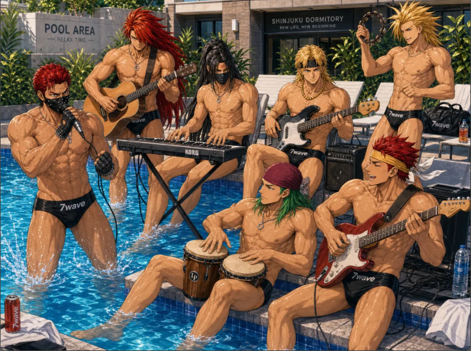
STRAY，第四百一十七天。
新宿DORMITORY，POOL AREA。
沒有排練，沒有舞台，沒有觀眾。
七個樂器，七個人，一個泳池，一個下午。
音樂，在家門口發生。
下次，還會再有。
新宿DORMITORY，某個夜晚。
窗外是城市的夜景，燈火連成一片，遠處有幾棟高樓的燈還亮著。房間裡的燈是暖黃色的，桌燈開著，白板上的字還在——
NEW LIFE, NEW BEGINNING!! - practice - class - gym - and Have fun!
旁邊貼著一張인준的塗鴉，是他某天無聊畫的——一個小人，頭髮亂的，下面寫了自己的名字。
牆上掛著7WAVE的海報，STRAY的標誌，書架上有書，地板上有雜誌、零食、水瓶、易開罐，桌上有洋芋片——のりしお海苔口味，是태양買回來的，說這個最好吃，大家試過之後有人同意有人不置可否。
床邊的桌上，放著一個相框，裡面是他們第一次全員合照——那天崔攝影師拍的，七個人，白色薄衫，暖黃燈光。
7wave的球包靠著床，吉他盒放在地板上，籃球放在書架旁邊——是태양說要學打球，買回來的，目前還沒正式用過。
這是他們的房間。
亂的，暖的，有聲音的，有各自的東西的——他們的房間。
七個人，各自在各自的位置。
철민靠著沙發坐在地板上，手肘撐著膝蓋，手裡拿著水瓶，口罩戴著，往前方看著什麼，或者什麼都沒看，就是那樣坐著。
他旁邊，서준坐在沙發上，手上拿著書，翻開的那頁看了很久，不知道是真的在看還是在想事情。
서준旁邊一點，화성站著，手上拿著吉他盒，低頭看著盒子上的7wave貼紙，那是他自己貼上去的，研究了很久，最後決定貼在正中間。
床上，인준坐著，一隻腳伸直，另一隻腳屈著，手拿著一瓶飲料，喝了一口，眼睛看著窗外的夜景。
旁邊是강혁，靠著床頭，雙手交叉放在腦後，仰著，也在看天花板或者窗外，表情是那種什麼都不想，但也什麼都在想的樣子。
地板上，태양躺在懶骨頭椅上，白T，短褲，拖鞋，臉上有一點點笑意，那種連自己都沒有意識到的笑。
태양旁邊，우진坐在地板上，背靠著床沿，手機拿著，螢幕亮著，但眼神不完全在手機上，是那種一隻眼睛看手機、一隻眼睛看房間的樣子。
沒有人說話。
也不是因為沒有話說——是那種，不需要說話的安靜。
每個人都在，每個人都知道其他人在，這樣就夠了。
窗外，城市的燈火。
窗上，SHINJUKU DORMITORY的字倒映在玻璃上。
철민最先開口，聲音很低，像是自言自語：
「你們有沒有發現，」他說，「我們現在，很普通。」
沒有人立刻說話。
서준把書翻了一頁，「普通？」
철민，「就是——普通人會有的樣子。待在房間裡，吃零食，看書，滑手機，什麼都不做。」
태양從懶骨頭椅上抬起頭，「這樣不好嗎？」
철민，「不是說不好，是說——」他停了一下，「以前不覺得我們能有這個。」
房間裡安靜了一會。
外面偶爾有車聲，很遠。
인준把飲料放到床頭，「第一天在倉庫，我們什麼都沒有。」
철민，「嗯。」
인준，「現在有書，有球，有吉他，有懶骨頭椅，有洋芋片。」
태양，「還有泳池。」
인준，「嗯，還有泳池。」
강혁，「還有新歌。」
서준，「還有下一張專輯。」
우진，「還有Waves。」
화성，「……還有這個房間。」
又是一段安靜。
不是空的安靜，是裝了很多東西的安靜。
태양，「你們有沒有想過，如果當初沒有脫離遊戲，現在會怎樣？」
철민，「一直死，一直重生，沒有名字。」
태양，「對。」他看著天花板，「所以我每次想到這個，就覺得——出來是對的。就算一開始很混亂，就算什麼都不知道，就算差點打起來——」
서준，「我們有打起來。」
태양，「……就算打起來了——出來還是對的。」
沒有人反對。
철민，「那個鐵管，」他說，「我一直帶著，直到現在。」
태양，「還放在房間嗎？」
철민，「嗯，放在衣櫃旁邊。」
태양，「為什麼還留著？」
철민，「那是我從遊戲裡帶出來的唯一一個東西，」他停了一下，「扔掉了，就像扔掉那段時間。我不想扔。」
서준放下書，「武士刀也是。」
大家看向他。
서준，「我第一天醒來的時候，旁邊什麼都沒有，只有刀還在。」他說，「我不知道為什麼刀跟著出來了，但它在，我就知道我在。」
화성，「……我的口罩也是。」
태양，「口罩不是遊戲裡帶出來的吧？」
화성，「不是，是出來之後自己選的。」他停了一下，「但是一樣——是我選的東西，所以是我的一部分。」
우진，「那個螢光棒，」他說，「第九天那根，沒電了，我還放在抽屜裡。」
태양，「我以為你扔掉了——」
우진，「沒有。那是第一次，很多人因為我們而存在。我想記住那個感覺。」
태양，「我的頭巾，」他摸了摸頭上那個深紅頭巾，「遊戲裡就戴著，出來還是戴著。」他笑了一下，「因為我覺得，這個是我。」
강혁，「我的貝斯，」他說，「遊戲裡沒有，是後來買的。但從第一次在泳池彈出聲音，我就知道那是我的東西。」
인준最後，沉默了一會，「我的鈴鼓。」
태양，「鈴鼓？」
인준，「今天在泳池邊用的那個，」他說，「我不太會其他樂器，但鈴鼓搖起來，我聽得到自己在裡面。」
七個人，各自說了自己帶著的東西。
不是全部都是從遊戲裡來的，有一些是出來之後才有的——但它們都在，都是真實的，都是他們的。
철민，「……我還是沒想到，我們會變成這樣。」
태양，「哪樣？」
철민，「在一個房間裡，說這些話。」
태양，「這樣有什麼問題嗎？」
철민，「沒有，」他說，「就是——沒想到。」
화성，「我有想到一件事。」
所有人看向他。
화성，「我們七個，來自不同的遊戲，不同的世界，本來永遠不可能在同一個地方。」他說，「但現在，我們在同一個房間裡。」
태양，「這件事很神奇。」
화성，「嗯。」他停了一下，「我每次想到，就覺得——這件事不應該浪費。」
인준，「怎麼說？」
화성，「就是，既然我們在一起了，就把在一起這件事，做到最好。」
房間裡，安靜了很久。
城市的燈火在窗外，白板上的計畫還在——
practice / class / gym / and Have fun!
桌上的洋芋片，地板上的雜誌，床邊的相框，吉他盒上的7wave貼紙，抽屜裡的螢光棒，衣櫃旁邊的鐵管，角落裡的武士刀。
每一樣東西，都在。
每一個人，都在。
태양最後說了一句話——
「我很高興，我們都出來了。」
沒有人說「我也是」，但所有人都是。
철민站起來，伸了個懶腰，「睡了。」
태양，「這麼早？」
철민，「明天還有練習。」
태양，「對哦。」他也站起來，把懶骨頭椅推到旁邊，「那我也睡。」
서준把書合起來，書籤夾進去，放到旁邊。
화성把吉他盒放到角落，確認放穩了，走向自己的床。
강혁把手從腦後放下來，起身。
우진把手機螢幕關掉，放到旁邊。
인준是最後一個，他把飲料瓶拿起來，起身，往窗口看了最後一眼。
城市的燈火，還在。
New Life, New Beginning.
他把窗簾拉上，燈關掉，房間裡只剩桌燈的微光。
七個人，各自躺下。
房間安靜了。
外面，城市還亮著。
這是他們的日常。
不是特別的一天，不是演唱會，不是頒獎典禮，不是採訪，不是打歌——
就是一個普通的夜晚。
七個人，在同一個房間裡，說了一些話，然後睡著了。
這，就是New Life, New Beginning。
不是某一個大的時刻，是每一個這樣的夜晚。
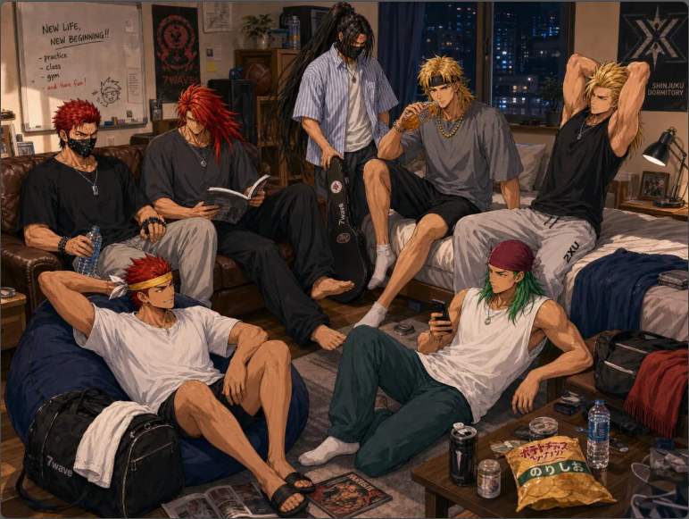
살아있으니까 간다.
因為活著，所以走。
走著走著，有了家。
有了可以一直回來的地方。
有了一起睡著的七個人。
STRAY，某一天。
不需要記日期的那種一天。
因為，這樣的夜晚，還會一直有。
但今晚，可以先睡了。明天，繼續。
살아있으니까 간다
因為活著，所以走。
從倉庫，到世界。
七道浪，還在往前走。